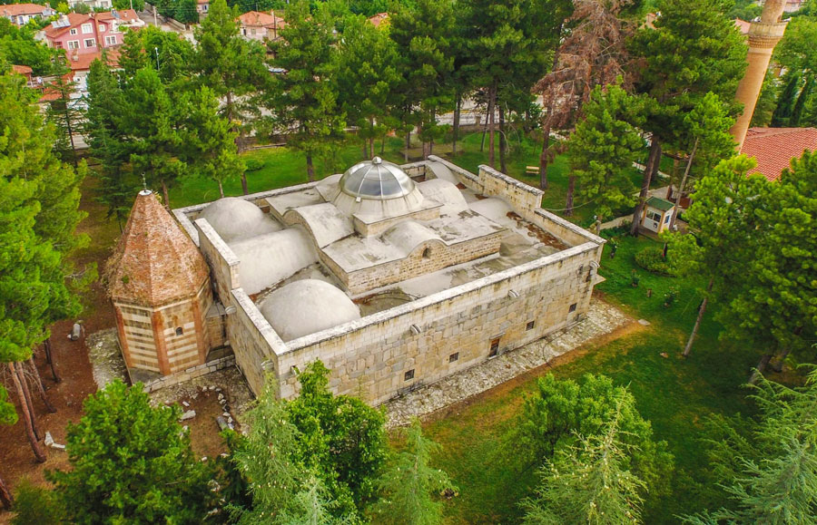
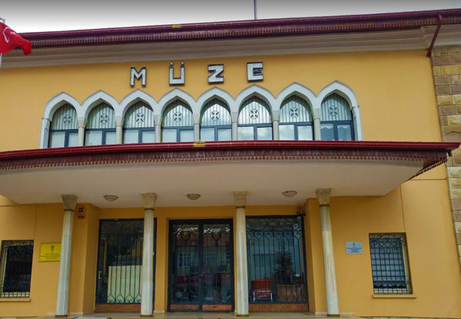

TARİHİ
Türkiye'nin Akdeniz Bölgesi'nde yer alan bir şehirdir. Doğal güzellikleri, tarihi ve kültürel zenginlikleri ile ön plana çıkar. Yakın çevresi ile birlikte Pisidia yöresinin önemli yerleşim merkezlerinden birisi olan Isparta’nın tarih öncesi dönemlere kadar ulaştığı bilinmektedir. Yörenin yerleşme tarihi Paleolitik (Eskitaş) Dönemle başlamaktadır. MÖ 2000’lerde ise Pisidya Bölgesi, Luvi ve Arzava topluluklarının yerleşme alanı idi. Hititler bir siyasi güç olarak ortaya çıktıktan sonra yöreye ilgi duymuşlar, ancak yüzyıllarca süren çatışmalara karşılık Arzava ülkesi üzerinde kesin bir egemenlik kuramamışlardır. MÖ 1200’lerde “Ege Göç Kavimleri” adı verilen topluluklar, Balkanlardan gelerek, Anadolu’nun siyasi yapısını bütünüyle değiştirdikleri gibi Arzava Ülkesi Konfederasyonu’nun da siyasi varlığına son vermişlerdir. Bu toplulukların en önemlisi Frigler, MÖ 8. yüzyıldan sonra, giderek güçlerini kaybetmiş ve MÖ 690’da bu topraklarda Lidya Devleti egemenliğini kurmuştur. Daha sonra Kimmer-Sapardailer sürekli akınlarla Lidyalıları oldukça zor durumda bırakmışlarsa da Isparta yöresinde uzun süreli bir yerleşik güç oluşturamamışlardır. Yöre, MÖ 546’da Perslerin egemenliğine girmiş ve MÖ334’e kadar onların egemenliği altında kalmıştır.
Bu tarihten sonra yöreye Büyük İskender egemen olmuştur. Hellenistik dönemde Minassos (Minasın), dikkati çeken bir yerleşme olarak görülmektedir. MÖ 323’te Büyük İskender’in ölümü üzerine, Isparta, sırasıyla Bergama Krallığı’nın, Seleukoslar’ın, son olarak da MÖ 190’da Romalıların yönetiminde bulunmuştur. Roma egemenliği MS 395’e kadar sürmüştür. 395 yılında Bizans egemenliği başlamış, Selçukluların Batı Anadolu’da denetimi kesin olarak ellerine aldıkları 1204 yılına kadar devam etmiştir. Roma yönetiminde Isparta’nın önemli yerleşme merkezleri Bayat (Selvecia Sidera), Uluborlu (Apollonia), Yalvaç (Antiokheia), Sütçüler (Sağrak-Adada), Şarkikaraağaç (Neopolis) ve Gelendost (Debenae)’dur. Roma İmparatorluğunun MÖ 395 yılında ikiyle ayrılmasından sonra, Bizans İmparatorluğuna bağlanan Isparta, VII. ve IX.yy.’da yapılan idari taksimata göre bir eyalet halini alarak bir din merkezi niteliği taşımıştır.
Isparta ve çevresi, Ortaçağda İslam Devletleriyle Bizanslılar arasındaki savaşlarda faal bir rol oynamıştır. 774 yılında Abbasiler döneminde güçlü bir Arap ordusu Isparta’yı almayı başardıysa da bir süre sonra Bizans birlikleri şehri geri almıştır. İslam devletlerinin Anadolu’ya akınları 10. yy.’a kadar sürmüştür. 8. yüzyıl başlarında kısa bir süre Abbasi yönetimine giren kentin adı, Arap kaynaklarında Sabart olarak geçmektedir.
Selçuklu tarihçisi, İbn Bibi, Isparta kalesinin ve vilayetinin Anadolu Selçuklu Sultanı III. Kılıç Arslan zamanında, 1204 yılında Selçuklular tarafından fethedildiğini yazmaktadır. Isparta merkezinde Selçuklulardan günümüze intikal etmiş, en eski Selçuklu eseri olan Ulu Cami 1299 tarihini taşımaktadır. İbn Bibi, burayı havası ve suyu ile meşhur bir vilayet olarak anlatmaktadır. Isparta yöresi 1300 yılında Hamitoğulları’nın egemenliği altına girmiştir. Hamitoğulları Beyliği döneminde Isparta’ya gelmiş olan ünlü Seyyah İbn Batuta, şehri bakımlı, zengin çarşıları olan, sayısız ırmak, bağ ve bostanları bulunan bir nezih belde olarak tanımlamaktadır. Hisarının yüksek bir dağ üzerinde olduğunu belirtmektedir. Hamitoğullan dönemi içinde kısa bir süre İlhanlı egemenliğine giren Isparta, tekrar Hamitoğulları egemenliğine girmiştir. Hamitoğlu Kemaleddin Hüseyin Bey, 1374 yılında yaptığı bir antlaşmayla, Isparta’yı Eğirdir, Karaağaç, Beyşehir, Seydişehir ve Yalvaç ile birlikte 80 bin altın karşılığında Osmanlı devletine vermiştir. 1390 yılında Kemaleddin Hüseyin Bey’in ölümüyle Isparta ve çevresi Osmanlı topraklarına kesin olarak katılmıştır. Osmanlı topraklarına katılan Isparta merkezi yönetime, merkezi Kütahya olan Anadolu Eyaletinin bir sancağı olarak katılmıştır. Bu yeni sancağın yönetimi Kutlu Bey’e verilmiştir. Kutlu Bey 1417 yılında Ulu Camiyi onartmış ve bu cami günümüze kadar ayakta kalabilmiştir. Zaman zaman Osmanlılarla Karamanoğulları arasında el değiştiren Hamitili, II. Murad döneminde kesin olarak Osmanlılara katılmıştır. Sancak beyliğine de Şarapdar İlyas Bey atanmıştır. Hamitili’nin kesin olarak Osmanlı mülkü olmasından sonra Isparta, sancağın merkezi olmuş ve bu idari statüsü Eğirdir ile birlikte yürütülmüştür.
Isparta’nın Hamitili Sancağı’nın merkezi olarak önem kazanması Kanuni Sultan Süleyman devrinden itibaren başlamıştır. Bu dönemde tutulan kayıtlar, Isparta’nın sosyal ve ekonomik durumunu açıklamaktadır. 1522 yılındaki kayıtlarda, Isparta’nın, Çeribaşı, Debbağlar, İskender, Cami, İğneci, Farsaklar, Gebran (Hristiyan Mahallesi), Mescid-i Suyuğa Bey, Mescid-i Faslullah, Mescid-i Stile, Mescid-i Karaağaç, Mescid-i Hocaoğlu, Dere, Yenice ve Doğancı adları ile anılan 17 mahalleye sahip olduğu görülmektedir. Dokumacılık, bağcılık, boyacılık son derece gelişmiş bulunuyordu. İdari, askeri görevlilerin tımarları yanında, kentte Padişah Haşları da vardı. 1568 yılındaki tahrirde ise Hocaoğlu Mahallesi tahminen bir başka mahalleye dahil olmuş, yeni kurulan İlisucu, Hacı Elfî, Evren, Yayla, Leblebici (Keçeci), Mescid-i Hacı İvaz ve Mescid-i Tevesoğlu mahalleleri ile birlikte mahalle sayısı 23’e çıkmıştır. Ayrıca Hristiyan Mahallesinin Zimmiyan adıyla bilindiği da görülmektedir.
Isparta, çalışkan sancak beyleri dönemlerinde önemli imar faaliyetlerine sahne olmuştur. Firdevs Bey zamanında Mimar Sinan eserleri arasında sayılan cami ve bedesten yaptırılmıştır. Firdevs Bey Camii veya Mimar Sinan Camii olarak anılan cami ile bedesten arası, cami vakfı arasta olarak hizmet vermiştir. Yine bu resmi devlet kaynaklarından anlaşıldığına göre Hamidili Sancağı’nın XVI. yüzyılın sonlarından itibaren asayişi bozulmaya başlamış ve Suhte İsyanları ile uzun süre uğraşmak zorunda kalınmıştır. Bu konuda gerek sancaktan merkeze, gerekse divandan sancağa yazılan yazılar, olayları aydınlatmakta ve alınan önlemler hakkında bilgi vermektedirler. Toprak yönetiminin bozulması Osmanlı Devleti’nin ekonomik yaşamını felce uğratmış ve bundan Anadolu halkı büyük zarar görmüştür. Bu durum aynı zamanda ordu düzenini de bozmuştur. Bu bozukluk Isparta’da açık olarak görülmektedir. 1571 tarihli emirden anlaşıldığı gibi, hizmete çağrılan piyadelerin hiçbiri görevi başına gelmemiş, bir kısmı kaybolmuş, bir kısmı firar etmiş ve sancağın yayaları 200 kişiye kadar düşmüştür.
Devlet bu asayiş sorununu çözmek için çeşitli kararlar almak zorunda kalmış ve asayişi bozanların küreğe konulması emredilmiş, fakat bu tür hareketler devletin bozulmakta olan durumuna paralel bir gelişme göstermiştir. Gerçekten bu yüzyılın sonlarında ve XVII. yüzyılın başlarında görülen “Celali İsyanları” ve bu ayaklanmaları izleyen “Büyük Kaçgunluk Devri”nde Isparta büyük zarar görmüş ve Isparta-Akşehir çemberi bu ayaklanmaların sonunda, ekonomik yönden gerilemeye başlamıştır. Bu ayaklanmaların önüne geçmek amacıyla görevlendirilen Kuyucu Murad Paşa’nın asayişi düzene koyma ve Celali ayaklanmalarını bastırma hareketi, kısa bir süre sonra Isparta’nın tekrar eski haline kavuşmasına yol açmıştır. Şehirde daha önce meydana gelen ayaklanmaların yanında sık sık görülen deprem ve su baskınları gibi afetler çeşitli zararlara yol açmıştır. 1706 yılında Isparta’yı ziyaret eden Fransız Paul Lucas, kenti yün, deri ve afyon ticareti ile zengin bir kent olarak nitelerken deprem ve su baskınlarından çok zarar gördüğünü de belirtmektedir. 1780 yılında Gölcük Krater Gölü’nün taşması ile meydana gelen büyük sel Tekke ve Yaylazade Mahallelerini tümüyle tahrip etmiştir.
Isparta 18. yüzyılın sonlarına doğru, Hamid Paşa’nın çabalarıyla yeni ve önemli tesislere kavuşmuştur. Isparta sancağı 19. yüzyıl boyunca oldukça sakin ve istikrarlı bir çizgide görülmektedir. Yüzyılın ilk yarısında, Mektubi Hulefasından Sait Efendi’nin 1831 yılında yaptığı nüfus sayımında Isparta’nın merkez kazada toplam erkek nüfusunun 6.310 olduğu görülmektedir. Isparta, 1846 yılındaki düzenleme ile kurulan Konya Vilayeti’ne bağlı Hamid Sancağı’nın merkezidir. O zamanki adı Hamidabad idi. Bu statüsü 1854 yılındaki düzenlemede de devam etmiştir. Isparta’da İdadi Mektebi, ilk kez Rüştiye olarak 1860 yılında şimdiki ordu evinin bulunduğu yerde ahşap ve üstü kiremit olarak yapılmıştır. 1867 Vilayet Nizamnamesine göre Konya Vilayetinde kalan Isparta Sancağı’nın toplam 6 kazası vardır. Bu kazalar, Isparta Merkez Kaza, Uluborlu, Havza-ı Karaağaç, Gölhisar-Kemire-Tefenni (birlikte bir kaza), Barla-Pavlu-Ağros-Eğirdir (birlikte bir kaza) dir. O dönemde Hoyran ile Yalvaç birlikte bir kaza olarak Konya Vilayeti’nin merkez sancağına bağlıydılar.
1877’deki idari yapılanmada Burdur’un ayrı bir sancak olarak ayrıldığı, Hamit Sancağı’nın Hamit Merkez Kaza, Eğirdir, Uluborlu, Karaağaç ve Yalvaç olmak üzere toplam 5 kazadan oluştuğu görülmektedir. 1877’deki idari yapılanmanın 1892 ve 1903 devlet salnamelerinde de aynı olduğu görülmektedir. 1869 Konya Vilayet Salnamesinde Isparta Merkez Kazasında Saçıkaralı Aşireti ile birlikte 11.560 nüfus ve 41 mahalle bulunduğu kayıtlıdır. 1877 Konya Vilayet Salnamesi’ne göre, Isparta Merkez kaza ve bağlı 12 köyde toplam 13.152 kişinin yaşadığı belirtilmektedir. Yine 1877 Konya Vilayet Salnamesinde Isparta merkez kazada 22 cami, 18 mescid, 1 mevlevihane, 23 medrese, 3 kütüphane, 3 Rum Ortodoks kilisesi, 1 Ermeni kilisesi, 6 han, 5 hamam, 542 dükkan, 5 fırın, 1 tabakhane bulunduğu kayıtlıdır.
1882 Konya Vilayet Salnamesine göre, Isparta Merkez kazanın nüfusu hakkında şu bilgiler yer almaktadır. 14.251 kadın, 13.905 erkek olmak üzere toplam 28.156 müslüman, 2.163 kadın 2.239 erkek olmak üzere toplam 4.402 Rum Ortodoks, 205 kadın, 346 erkek olmak üzere toplam 551 Ermeni Gregoryan dinsel dağılımı bulunmakta ve toplam 33.109 kişi yaşamaktadır. 1885 yılında yapılan bir tesbitte Isparta merkez kazada, 4.3561’i müslüman, 4.524’ü Rum Ortodoks ve 619’u Ermeni Gregoryan olmak üzere 48.704 kişinin yaşadığı belirtilmektedir.
Isparta, 1919-1923 arası Mütakere ve Milli Mücadele Dönemi’nde, işgal ve çatışmalardan sınırlı etkilenen, sayılı kentlerdendir. Isparta Birinci Dünya Savaşı sonrasında imzalanan Mondros Mütarekesi günlerinde, Konya Vilayeti’ne bağlı Hamidabad Sancağı’nın merkezidir. Sancağın 1914’te 45.000 dolayında olan nüfusu, yöre Rumlarının birinci Dünya Savaşı sonrasında Yunanistan’a göçmeleri nedeniyle, 40.000’nin altına düşmüştür. Sancağın merkez kazası dışında dört kazası vardır. Bunlar; Eğirdir, Şarkikaraağaç, Uluborlu ve Yalvaç’tır. Başlıca ekonomik etkinliği gülyağcılık, halıcılık ve haşhaş üretimidir. Isparta’nın dış satımı da bu ürünlere dayalıdır.
İhtilaf Devletleri arasında paylaşıma ilişkin ön pazarlıkların sona erdiği ve Ege’de ilk Yunan işgalinin başladığı günlerde, Isparta yöresinin, İkinci Ordu Müfettişi Mersinli Cemal Paşa dışındaki hemen tüm mülki yöneticileri, Damat Ferit Paşa Hükümeti ile sıkı ilişki içindeydiler. Bunlar, İtilaf Devletleri’ne boyun eğme siyasetine bağlı olarak, gelişen işgallere karşı anılmaya değer bir tepki göstermiyorlardı. Eşraftan bazı kişiler ise Antalya’da İtalyan temsilcisi Marki Granti ile görüşüp, İtalyanları Isparta’ya çağırmışlardı. Buna karşın, eşraf ve yerel yöneticilerinin büyük çoğunluğu Anadolu topraklarının açık açık pazarlık konusu edilmesine tepki gösteriyorlardı. Yer yer başlayan işgalleri direnişle karşılamaktan yana bir tutum takınıyorlardı. Nitekim, halkı ölçülü davranmaya çağırmak üzere, Mayıs 1919 ortalarında Isparta’ya gelen Şehzade Abdurrahman Efendi, kasabada oldukça soğuk karşılanmıştır.
Yunanlıların İzmir yöresinde, İtalyanların da Antalya’daki işgalleri başlar başlamaz Isparta eşrafından ileri gelenler ivedilikle bir araya geldiler ve direniş yollarını araştırmaya koyuldular. Isparta’daki yerel direniş örgütlenmesinin önderliğini ise, Talapaşazade Hafız İbrahim Efendi ile Müftü Hüseyin Hüsnü Efendi yapıyorlardı. Hafız İbrahim Efendi, İtalyanların Burdur üzerine harekete geçtiklerini öğrendikten sonra, İkinci Ordu Müfettişi aracılığı ile İstanbul’a bir telgraf çekmiş ve İtalyan harekatı ile ilgili olarak hükümetten ivedi bilgi istemiştir. İbrahim Efendi’nin telgrafında, Isparta yöresi halkının işgale hiçbir biçimde boyun eğmeyeceği ve şiddetle direneceği kesin bir dille belirtilmiştir. Bu arada, Hafız İbrahim Efendi ve İhtiyat Zabitleri Cemiyeti’nin öncülüğüyle, “Demiralay” adı verilen bir direniş örgütü oluşturmuş ve bu örgüt içinde yer almaları için tüm Isparta gençliğine çağrıda bulunmuştur. İtalyan birlikleri 28 Haziran 1919’da Burdur’u işgal edip Isparta’ya ulaştıklarında, Demiralay örgütü hızla gelişiyordu. Nitekim, İtalyan işgalinin kırılmasında ve bir hafta gibi kısa bir süre içinde geri çekilmek zorunda kalmalarında bu örgütün protesto gösterilerinin önemli bir payı olmuştur. Isparta’nın yanı sıra Uluborlu ve Eğirdir’de de tepkiler görülünce, İtalyan İşgal Komutanlığı, harekatını daha çok kıyı kentlerinde yoğunlaştırmıştır.
Milli Mücadele’nin ilk Garp Cephesi Komutanı Ali Fuat Cebesoy, Isparta direniş örgütlenmesinin, o dönemde, Kuva-yı Milliye içinde oynadığı önemli rolü şöyle anar:
” Anadolu’nun belirli bir bölümünü elde tutabilmenin ilk koşulu, başında bulunduğum Yirminci Kolordu’nun sahası içinde olan Isparla-Afyonkarahisar-Eskişehir hattını korumaktı. Eskişehir’de İngilizler vardı. Isparta ve Afyonkarahisar’ı koruyabilirsek, İngilizleri Eskişehir’den atmak olanaklıydı. Isparta ve Afyonkarahisar’da ulusal güçleri oluşturmak için çaba harcamamıza gerek kalmadı. Bu iki kentimizde, iki din adamı, başı sarıklı iki savaşçı başa geçmiş, ulusal güçleri, deneyim sahibi bir komutanın tutumu ve uzak görüşlülüğüyle örgütlemiş ve ilk anda yadırganacak bir kararla komutayı da kendi ellerine almışlardı. Isparta’da Hafız İbrahim Efendi, Afyonkarahisar’da Hoca İsmail Şükrü Efendi…”
Ali Fuat Cebesoy ‘un böylesine övgüyle andığı bu iki kişiden Hafız İbrahim Efendi, Kuva-yı Milliye’nin Isparta’daki örgütlenmesinde en ön sırada yer aldı ve Sivas Kongresi sonrasında oluşturulan Anadolu ve Rumeli Müdafaa-i Hukuk Cemiyeti’nin Isparta Şubesi Başkanlığı’na getirildi. Ispartalı gönüllülerden oluşturduğu Demiralay ise, Yunanlılara karşı kurulan Denizli-Sarayköy Cephesi’nde önemli yararlılıklar gösterdi. Büyük Millet meclisinde Isparta Milletvekili olarak yer alan Hafız İbrahim Efendi’nin “Demiralay” soyadını alması da yine bu çabaları dolayısıyla olmuştur.
Isparta’da işgal kuvvetlerine karşı oluşan tepkiden dolayı doğrudan işgale girişemeyen İtalyanlar, birkaç subay ve süvariyle Isparta’ya gelerek, asayiş gayesiyle küçük bir müfreze bulundurmak isteğinde bulundular. Ancak İtalyanların bu teklifi Ispartalılar tarafından tepki ile karşılanır. 1919 yılı Ağustos ayının ortalarında sekiz bin kişinin katıldığı bir protesto mitingi yapılır. Sonunda İtalyan subay ve askerleri Isparta’dan ayrılmak zorunda kalarak Antalya’ya geri dönerler. Ekim 1919’da Antalya İşgal Komutanı General Emilton’un beraberinde 168 atlı olduğu halde otomobil ile Çerçin yolundan Isparta’ya hareket edeceği, ayrıca 2 tabur askerin emre hazır olduğu Burdur Telgraf Müdürü tarafından Hafız İbrahim Bey’e haber verilir.
Hafiz İbrahim Demiralay bu olayı şöyle anlatır:
” Mesele mühim ve nazik idi. Jandarma Bölük Komutanı Yüzbaşı Mustafa, 68. Alay S. Tabur Komutanı Yüzbaşı Hüsnü Beyler ile vazifeyi yerine getirmeyi üstümüze aldık. Çünür ve Çerçin şoselerinin birleşme noktasında pusu kurarak gelmelerini bekledik. Otomobilin etrafını süvariler çevirmiş yavaş yavaş geliyordu. Yanımıza yaklaştığında kuvvetlerimizin dur emrine itaat ederek otomobilinden indi. Evvela süvarilerin silahları alınarak askeriye deposuna, hayvanları da depoya gönderildi. Kumandanın otomobilini de iki çete ile el koyarak hükümete, korunmak üzere gönderdik. Ben kısa yoldan Mutasarrıfa daha evvel ulaşıp görüşerek sözlü uyarıda bulundum: Siz hükümet lisanıyle ne suretle idare ederseniz ediniz. Bizim isteğimiz bu adama bir bardak su dahi vermeyerek, bir saat sonra geldiği yere çevrilmesidir. Bu yapılmazsa öldüreceğiz. Talat Bey resmi lisanla, bir saat güçlük çekerek bir daha gelmemek şartıyla geri göndermeyi başardı. Biz de Isparta sınırları dışında silahlarını teslim ederek serbest bıraktık.”
Mutasarrıf Talat Bey, İtalyan Komutan ile konuşurken Hükümet binasının başka bir odasında şöyle bir konuşma geçtiği belirtiliyor:
“İtalyanların halka yaranma politikalarına kanan birisi: – Hafız! İtalyanlardan bize ne zarar var? Memlekete birçok iyilikler getirecekler, hastahane açacaklar, bol paralı müesseseler yaparak memleketi yükseltecekler, çok ileri gidiyorsun, yoksa Isparta sırf senden mi sorulur? Hafız İbrahim ise, kendisi gibi düşünen çoğunluğa tercüman olarak şu sözlerle cevap verir: – Evet benden sorulur. Ecdadım bu memleketi tahta bıçakla feth etmiş, ben de kılıcımla koruyacağım. Kalkıp gitmeniz hakkınızda hayırlı olur. “
Bu sözlerle Isparta, işgale karşı olduğunu ve gerekirse silaha karşılık verebileceğini kesin olarak ortaya koymuştur. İtalyanlar Ispartalıların kendilerine karşı sert tepkilerini anlamakla beraber, çeşitli bahanelerle siyasi temsilciler göndermeye devam ettiler. Ancak bu ziyaretlerinde çok dikkatli olarak önceden izin bile aldılar. 28.10.1919 tarihinde Isparta’ya halı almak için geleceği bildirilen İtalyanlara izin verilir. Bir İtalyan subayı yanında başka subaylar ve Yahudi bir tercüman ile Isparta’ya gelir. Otomobillerini Kerimpaşa Hanı’na bırakarak Şark Halı Şirketine giderler. İzin verilen sayıdan fazla kişinin gelmesi Isparta Müdafaa-i Hukuk Cemiyeti’nin dikkatini çeker. Emekli Subay Yılmaz İbrahim komutasında 15 kişilik silahlı bir grup devriye çıkarılır. Aynı gün gecesi Şark Halı Şirketi’nde bulunan İtalyanlar silahlı devriyeler tarafından alınarak Hafız İbrahim’in huzuruna getirilir. Korku içinde olan heyete Hafız İbrahim yüksek sesle, izinsiz ve habersiz niçin geldiklerini sorar. İtalyanlar Isparta’yı geliştirici ticari girişimler yapmak istediklerini belirtirler. Ancak Hafız İbrahim’in kararlı tutumu karşısında kendisinden güvenlik belgesi alarak Burdur’a dönerler. Çünür-Fandas yoluyla Burdur’a giden İtalyanların yolu sık sık milli kuvvetler tarafından kesilerek Isparta’nın organize ve çok sayıda askeri güç tarafından korunduğu izlenimi verilir. Isparta Sancağı, Ispartalıların gösterdiği kesin ve azimli tavır karşısında işgal edilememiştir.
Özetle, 1919-1923 yılları arasında Milli Mücadele döneminde Isparta, yörede söz konusu olan yabancı işgallerinden en az etkilenen illerden biri olmuştur. İhtilaf devletlerinden olan İtalyanların nüfusuna bırakılmış olan Isparta, çok büyük bir direniş göstermiş, İtalyanların işgaline boyun eğmemişdir. İç Anadolu, Ege ve Akdeniz Bölgelerini birbirine bağlayan önemli bir coğrafi konumda bulunan Isparta, çeşitli yönlerden önemli gelişmelerini Cumhuriyet döneminde sağlamıştır.
Isparta ve ilçelerinin gelişmelerini Cumhuriyet döneminde iki safhada incelemek gerekir. İlki, 1960 yılına kadardır. Bu dönemde sosyal, ekonomik ve bayındırlık yönlerinden özellik taşıyan çalışmalara başlanmıştır. Cumhuriyet Türkiye’sinde Isparta’nın ikinci gelişme safhası 1960 yılından sonra başlar. Bu tarihten bu yana gelişme sürecinin daha da arttığı, özellikle sanayileşme ve şehirleşme hareketlerinin önem kazandığı görülmektedir.
Isparta, Cumhuriyet döneminde de 1960 yılına kadar olan devrede bir taraftan bellibaşlı bayındırlık hizmetlerine kavuşurken, özellikle gül tarımcılığının ve halıcılığın gelişmesi ile ekonomik yönden önemli ölçüde etkilenmiştir. 1936 yılında Isparta’nın demiryoluna kavuşmasının yöreye olumlu etkisi büyük olmuştur. 1960 yılından günümüze kadar geçen süre içinde ise, Isparta’da modern şehirleşme hızla etkisini göstermiş birçok sosyal, eğitim, sağlık, sanayi tesisleri merkez kentte olduğu kadar ildeki diğer yerleşmelerde de kurulmuş ve kurulmalarına devam edilmektedir.
ISPARTA ADINI NASIL ALDI ?
Kente niçin Isparta denildiği, Isparta adının nereden geldiği, kesin olarak bilinmemektedir. Bu konuda pek çok araştırma, görüşler vardır. Böcüzade Süleyman Sami’nin Isparta Tarihi’nde, Meydan Larousse’da, Kaamus’ul-Alam’da Isparta adının Pisidia şehirlerinden Baris’in yerine kullanıldığı ifade edilmektedir. Baris adının Sanskritçe “Su” anlamına gelen “Vari” kelimesiyle bağlantısı olduğu sanılmaktadır. Bu adın başına “Is” zarf edatı getirilerek Isparita şeklini aldığı, galat olarak “Isparta” denildiği belirtilmektedir.
Diğer bir görüşü ifade eden Turhan Hikmet Dağlıoğlu ile Prof. Unger, Isparta adının “Baride” kelimesinden geldiğini, bu kelimenin Hititçe, belkide Lidya dilinden gelmiş bir sözcük olduğunu, Yunan göçmenlerin Anadolu’ya gelmelerinden sonra Barida adına “Eis” takısını ekleyerek “Isbarida” dediklerini açıklamaktadırlar. Isparta adının “Eis Baride”den geldiği, daha sonra da bu sözün Türkler tarafından “Isparta” şeklinde kullanıldığı görüşüne, Prof. Osman Turan ve Prof. Ramsey’de katılmaktadırlar.
Arap kaynaklarında Isparta adı, Sabarta (İbni Batuta’da) olarak geçmektedir. Bu adın MÖ VIII. yy.’da Karadeniz’in kuzeyindeki İskitlerce güneye sürülen Sabardai kavimlerinin yöreye yerleşmeleri sonucu verildiği de ifade edilmektedir.
Bir başka görüş de Isparta’nın tarihte en çok geçen adının Baris olduğudur. Bu isim Hititler tarafından verilmiş olup, “Bereket” anlamına gelmektedir. Romalılar Pisidia bölgesine hakim olunca, Baris adını kendi dillerine uydurup “Sbarita” demişlerdir. Kent Türklerin eline geçtikten sonra da Isparta şehrine dönüşmüş ve bu isim altında anıla gelmiştir.
GÜL İLE OLAN TARİHİ NEDİR?
İnsanın günlük yaşamında çok özel bir yeri olan gül; aşkın, güzelliğin, sevginin ve saygının ifadesini en güzel bir şekilde bünyesinde toplayan bir çiçektir. Kuzey yarım küre bitkisi olan gülün orijini Doğu Asya'dır. Kesin olmamakla birlikte gül yağı ve gül suyunun ilk olarak İran veya Hindistan'da üretildiği, buradan Anadolu, Avrupa, Kuzey Afrika ve Doğu Asya'ya yayıldığı bildirilmiştir.
Fosil kaynaklı kayıtlara göre, gülün yeryüzündeki varlığı en az 35 milyon yıllık bir geçmişe sahiptir. Gül çiçeğinin insanlık tarihindeki yeri ve önemi ise en az 5000 yıllık çok renkli bir geçmişe dayanır.
Anavatanı olan Orta Asya’dan ticaret yolu ile dünyanın diğer bölgelerine ulaşmış olan gül, güzel kokusu, tıbbi değeri ve beslenmedeki yeri dolayısıyla antik çağlardan beri efsanelere konu olmuş ve güzel kokunun peşinde olanlar için vazgeçilmeyen bir çiçek olmuştur. Hatta öyle ki, antik dönemde Fenikeliler, Yunanlılar, Romalılar için gül bahçeleri, en az buğday tarlaları ve meyve bahçeleri kadar önem taşımıştır.
Gül kokusunu kalıcı yapmak için tarihte ilk yöntem antik çağlarda Mısır, Mezopotamya, Hint ve Çin gibi medeniyetler tarafından kullanılan yağlarla maserasyon (gül çiçeklerinin uygun yağlarda belli bir süre bekletilme yöntemi) olmuştur.
Daha sonra ise M.Ö. 3500’de keşfedilen su ile ekstraksiyon (belli metodlarla gül çiçeklerinin suda bekletilmesi ve sonra süzülerek bu suların kullanılması) yöntemi uygulanmıştır. Daha sonra, M.Ö. 50’de insanlığın keşfettiği “ruhunu yakalamak” usulü yani damıtma ile elde edilen ürünler ortaya çıkmış, gülsuyu haline gelmiştir. Son aşamada da bu gülsuyunun içindeki güzel kokulu yağ taneciklerini toplamak için çaba harcayarak gül yağı dediğimiz gül esansını elde etmek olmuştur.
ISPARTA DA GÜL ÜRETİMİ NASIL BAŞLADI?
Isparta da gülcülüğün binlerce yıl gerilere giden, eski, köklü bir tarihi yoktur. Isparta gülcülüğü, en çok 150 yılı bile geçmeyen bir tarihe sahiptir. Daha gülcülük Isparta'da bilinmez iken Burdur, Denizli, Çal yörelerinde Gül tarımının yapılmakta olduğu bilinmektedir.
Gülcülüğü Isparta'ya, Yalvaç ilçesinden gelip Isparta'ya yerleşen Meydanbeyoğlu, Mehmet İzzet'in oğlu İsmail Efendi getirmiştir. Bu getirişin de çileli, çok ilginç bir öyküsü vardır.
İsmail Efendi, iyi bir medrese eğitimi almış ve kendini sürekli geliştirerek görüş açısı oldukça geniş bir kişi olarak yetişmiştir. Gülcüzade İsmail Efendi’nin ilk ticari teşebbüsü dokumacılık olmuş, çeşitli ustalardan aldığı bilgilerle kurduğu dokuma tezgahları sayesinde bu mesleğin Isparta ve Burdur çevresinde hızla yayılmasını ve bir çok kişinin bu mesleği öğrenmesini sağlamıştır. 1889 yılında Bulgaristan’a bağlı Kızanlık bölgesinden Denizli’nin Çal ilçesine gelen bir tapu memurunun gül çiçeğinden yağ elde edebildiğini öğrenmesi ile bu kişi ile mektuplaşmış ve Gülcülük üzerine geniş bilgilere sahip olmuştur. İ
İsmail Efendi her Isparta'lı gibi bilinçli, uyanık, yeni bir şeyler öğrenmeye, yapmaya susamış, kendine güvenli, çalışkan, sabırlı, hırslı, direnme gücü olan, inatçı kişiliğe sahip bir kişi idi. O vakte dek, Isparta ovasına ne ekilip dikilir ise pek gelir getirmiyor, çalışıp çabalamalar boşa gidiyordu.
İsmail Efendi şöyle komşu illere Burdur, Denizli, Çal yörelerine doğru bir geziye çıktı. Oralarda ne ekip dikiyorlar, topraktan nasıl daha çok gelir sağlıyorlar baktı, çekti. Gülcülük büyük oranda yapılır ise iyi para getirir, Isparta topraklarında da gül yetişir, kanısına vardı. Hiç vakit geçirmeden otuz dekar toprak sağladı. Çukurları açtırdı. Çevrede bulunan süs güllerinin içinden yağ gülü olabileceklerden, fidanlar aldı. Otuz dönüm yerin otuz dönümüne de gül dikti.
Yeni dikilen gülün üç ile beş yıl sonra en iyi ürün vereceğini biliyordu. sabırla gül bahçesini aksatmadan suladı, yabani otları yoldu, çapaladı, o günlerin koşullarına göre zararlı böcekleri öldürücü ilaçlar attı.
Daha üçüncü verim yılı gelmeden gülyağı çıkarma işinde kendine gerekli olacak araçların bazılarını yerli ustalara Isparta'da yaptırdı. Ustaların yapma güçlerinin dışında kalanları da Bulgaristan'a dek gitti; oradan aldı, geldi. Güzelce, noksansız bahçesine kurdu. Gülyağı çıkarırken gerekecek suyu da "Bambullu Ceviz" denen yerden getirdi, bahçesine akıttıktan sonra, sabırla üçüncü ürün yılını beklemeye başladı
Parasal yönden de sıkıntı, bunaltı içindeydi. Müthiş paraya gereksinmesi vardı. Büyük bir girişimde bulunmuş, atılım yapmıştı. Otuz dönüm toprak sağlamış, çukur kazdırmış, gül fidanlarını diktirmiş, gülyağı çıkarılmasında gerekli olacak araçlara da pek çok para vermiş, yatırım yapmıştı. İyi ürün alır, gülyağı çıkarır, eline toptan para geçerse, harcını borcunu ödemeyi düşlüyordu. Dört gözle beklemekte olduğu üçüncü ürün yılı geldi. Don, kar, kış, rüzgar, yağmur, dolu... anlayamadığı bir tabiat olayı nedeniyle gül fidanları hiç çiçek vermediler. Emekleri, harcadığı bunca para boşa gitti. Umudunu bir yıl sonrasına, dördüncü ürün yılına bağladı. O yıl da bahçesi iyi çiçek verdi; bu kez gülyağı çıkarma yöntemini bilmeyişi yüzünden başarılı olamadı...
DELİRDİ KEÇİLERİ KAÇIRDI BU ADAM. ALLAH AKIL FİKİR VERSİN!
Gözler İsmail Efendi'nin üstündeydi. Halk, ilgiyle onu izliyor; yolda, sokakta, kahvede, handa evde yerde... hep onun bu girişimi konuşuluyor, çektiği emeğin, harcadığı paranın hesabı, kitabı yapılıyor, alaya alınıyor, eğleniliyor; "Delirdi, keçileri kaçırdı bu adam, Allah akıl fikir versin" deniyordu.
Gülcü İsmail Efendi, direnme gücünü yitirmedi. Kulaklarını çevrede söylenenlere tıkadı. Başarısızlığının nedenleri üzerinde durdu. Sordu, soruşturdu, inceledi, araştırdı. Çalıştı, çabaladı gülyağı çıkarma yöntemini en küçük ayrıntısına varana dek öğrendi. Kendini, bir sonraki ürün yılına iyiden iyiye hazırladı. ÇUVAL ÇUVAL GÜL ÇİÇEĞİ; DESTE DESTE PARA
Kış mevsiminin soğuklu, karlı günleri geçip, gittiler. İlkbahar mevsimi gelir gelmez, Gülcü İsmail Efendi'nin bahçesinde bir diriliş, bir canlanma görüldü.. Bakımlı, tertemiz bahçedeki insan boyunu aşan gül ağaçları, önce yeşil yeşil yaprak, sonra da pembe gül tomurcukları vermeye başladılar. Mayıs ayının ilk haftasında havalar ısınınca bahçe, top top koca koca yapraklı, pembe renkli güllerle, doldu kaldı.. Öyle de bir güzelleşmiş, iç açıcı olmuştu ki.. Güllerin içinden yanık yanık bülbüllerin sesleri geliyor, çevreye insanın iliklerine işleyen hoş bir gül kokusu yayılıyordu...
Ne idi bu gül çiçeğinin bolluğu böyle? Görülmüş şey değil. Kadınlı erkekli yüzlerce kişi sabahın alaca karanlığında bahçeye geliyor, akşama dek çuval çuval toplanan gülleri taşıya taşıya bitiremiyorlardı. Gül sezonu bir ay kadar sürdü. Gülcü İsmail Efendi de eline geçen bu fırsatı çok iyi değerlendirdi. Binbir güçlük, zorluk, çile ve çaba.. ile üretmeyi başardığı katkısız arı "Gülyağı" ve "Gül Suları" nı değerince sattı; eline parasını aldı. İlk iş olarak her doğru, dürüst, namuslu... insanın yaptığı gibi borçlarını ödedi. Yeni bir ev yaptırdı. Evini de o günün gelenek, görenek, töresine göre dayadı, döşedi. Daha elinde pek çok parası kalmıştı. Bunu da çarçur etmedi; otuz dönüm gül bahçesini 50, 75, 100... dönüme çıkarmak, yaptığı gülcülüğü daha da büyütmek, genişletmek işinde kullandı. TOPRAKLARIMIZA BİZDE GÜL DİKELİM. GÜLCÜLÜKTE İYİ PARA VAR!
Isparta halkı, İsmail Efendinin deneyinden, Isparta topraklarının gül yetiştirmeye çok elverişli olduğunu öğrenmiş oldu. Gülün iyi para getirdiğini de gözleri ile gördükten sonra ;
"Tarlalarımıza bizde gül dikelim, gülcülükte iyi para var!"demeye başladı.
Gülcü İsmail Efendi, kıskançlık, çekememezlik etmedi. Gül dikecek olanlara yardımcı oldu. Karık nasıl açılır gösterdi. Fidan dikiminde başlarında bulundu... Bir kaç yıl içinde de her yere gül dikilmiş, Isparta Kenti de Gül Bahçelerinin içinde kalmış oldu. Isparta bundan sonra gül üretmesiyle tanındı, gülcü oluşuyla da anıldı.Gül Yetiştiriciliği: Yağ gülü (rose damascena) Anadolu’ya 1870’li yılların başında Bulgaristan’dan gelen göçmenler tarafından getirilmiştir. Isparta’da ise yağ gülü üretimi 1888 yılında, gülyağı üretimi de 1892 yılında “Müftüzade İsmail Efendi” isimli şahıs tarafından gerçekleştirilmiştir. Müftüzade İsmail Efendi tarafından imbik adı verilen basit ve ilkel kazanlarda üretilmeye başlanan gülyağı uzun yıllar yaygınlaşarak, bu metotla üretilmeye devam edilmiştir. Köy tipi gülyağı üretimi; Atatürk’ün Isparta’ya gelişinde verdiği talimat uyarınca, “İktisat Vekaleti” tarafından modern gülyağı fabrikasının 1935 yılında kurulması sonucu yerini büyük ölçüde sanayi tipi gülyağı üretimine bırakmaya başlamıştır
Gülbirlik’in 1958 yılında kurduğu İslamköy Gülyağı Fabrikası, 1976 yılında kurduğu diğer gülyağı tesisleri ile Türk gülcülüğü ve gülyağı üretimi şekil değiştirmiştir. Günümüzde köy tipi gülyağı üretimi, yerini tamamen sanayi tipi gülyağı üretimine bırakmıştır. Isparta ili, Türkiye’de özellikle gül yağı ve gül ürünleri üzerine önemli bir merkez haline gelmiştir. Yörede bir çok yerli ve yabancı gül işleme fabrikaları bulunmaktadır. İlde Gülbirlik’e ve özel kuruluşlara ait, 5 adedi büyük olmak üzere toplam 15 adet gül yağı fabrikası bulunmaktadır. ISPARTA GÜLÜ’NÜN ÖZELLİKLERİ
Yağ gülü (Rosa damascena Mill.), bitkiler aleminin Spermatophyta (tohunlu bitkiler) bölümünün Angiospermae (kapalı tohumlular) alt bölümünden Rosales takımı, Rosaceae familyası, Rosa cinsi içerisinde yer almaktadır. Dünyada yaklaşık 1350 Rosa (gül) türü tanımlanmıştır. Türkiye florasında 24 gül türü kayıtlı olmasına rağmen gül yağı elde etmek amacıyla kullanılan tür Rosa damascena Mill'dir.
Rosa damascena türünün bir çok çeşidi olmakla birlikte özellikle "Trigintipetale" çeşidi başta Bulgaristan ve Türkiye olmak üzere Fas, Mısır, İran, Suriye, Hindistan ve Kafkaslar'da gülyağı elde etmek amacıyla yetiştirilmektedir. Rosa damascena; Isparta Gülü, Pembe Yağ Gülü, Yağ Gülü, Sakız Gülü ve Şam Gülü adlarıyla da bilinen pembe renkli, yarım katmerli ve kuvvetli kokulu, çok yıllık, dikenli ve kışa dayanımı yüksek bir bitkidir. Rosa damascena bitkileri, 1,5-3 m arasında boylanmaktadır. Gövde silindir biçimli, içi dolu, esmer renkli, çok dallı ve dallar çok sayıdaki irili ufaklı sert dikenlerle çevrilidir. Yapraklar yumuşak yapılı ve ince tüylerle kaplı, alternans dizlişli, saplı ve stipulalı (kulakçık), 5-7 foliolludur.
Folioller (yaprakçık) 3-4 cm uzunluğunda oval şekilli, basit dişli kenarlı ve alt yüzleri tüylüdür. Çiçekler hafifçe sarkık, az ya da çok koyu pembe renklidir. Tek renkli olan çiçeklerde içteki taç yapraklar dıştakilerden daha küçük yapılı olup, çiçeklenme çalı formundaki bir bitkide görülen biçimdedir. Kaliks (çanak yapraklar), korollodan (taç yapraklar) daha uzun, çok parçalı 5 sepalden (çanak yaprak) ibarettir. Korolla çok petalli, petaller (taç yaprak) oval şekilli, soluk pembe renkli, kaideleri beyaz lekelidir. GÜLÜN FAYDALARI
Gül yağı başta tabipler, sonra kadınlar için vazgeçemedikleri bir madde olarak bugüne dek gelmiştir. Tedavide gül, geleneksel tıp dünyasında ilaç olarak kullanılmıştır. Gülsuyu, Gül Macunu ve Gül yağı olarak işlenen gül, bu üç ayrı şekliyle baş ağrısı, ateşlenme, bayılma, mide ağrısı, göz kanlanması gibi rahatsızlıkları tedavi etmekte faydalı olduğu geleneksel tıp kitaplarında yazmaktadır.
Gülbirlik: Yağ gülü (Rose Damescana) ve gülyağı üretimi 100 yılı aşkın bir süredir Isparta yöresinde gerçekleştirilmektedir. Bu özelliğiyle de Isparta’ya “Güller Diyarı” denilmektedir. Isparta’nın gül ürününü devletin destek ve yardımlarıyla en iyi biçimde değerlendiren Gülbirlik, 1954 yılında 9 kurucu birim kooperatifinin oluşturduğu Kooperatifler Birliği olarak kurulmuştur. Gülbirlik’in halen 6 birim kooperatifi, 8000 üretici ortağı, 5 ayrı yerde kurulu 7 ünite gülyağı tesisi ile 1 ünite gül konkreti tesisi mevcuttur. Gülbirlik mevcut tesislerinde günlük 360 ton gül çiçeği işleyerek, Türk ve Dünya standartlarına uygun gülyağı ve gül konkreti üretimini gerçekleştiren, Türkiye’nin ve dünyanın bu alanda en büyük üretici ve ihracatçı kuruluşudur. Gülbirlik, 45 yılı aşkın bir süredir istikrarlı bir biçimde sağladığı döviz girdisi ile ülkemize, üreticinin ürününü değerlendirmesi ile de yöre halkına ekonomik ve sosyal refah getirmektedir. Halen dünya parfüm ve kozmetik sanayiinin önde gelen kuruluşlarının gülyağı ve gül konkreti ihtiyaçlarını karşılayan Gülbirlik, bu alanda konumunu muhafaza etmekte ve geliştirmektedir. Ayrıca Gülbirlik, 1998 yılı başında kozmetik üretimine de başlamıştır.
Gülyağı: Parfüm ve kozmetik sanayiinin en önemli ve pahalı hammaddelerinden olan gülyağı pembe yağ güllerinin buharlı distilasyon yöntemiyle kaynatılmasıyla üretilir. Dünya standartlarına uygun kalitede gülyağı, deniz seviyesinden 1050 m ve daha fazla yükseklikte yer alan, Isparta ve yöresinde yetiştirilen güllerden elde edilir. Her yıl Mayıs ve Haziran aylarında toplanan güller, hava şartlarının da katkısı sonucu üstün kalitede gülyağı üretiminin gerçekleştirilmesini sağlar. Gül Konkreti: Fermantasyona uğramamış, rengini ve kendine has yapısını bozmamış son derece taze pembe güllerin extraction metodu ile işlenmesinden elde edilen krem kıvamında, koyu vişne çürüğü rengi görünümünde katı gülyağıdır. Parfüm ve kozmetik sanayiinin hammaddelerinden biri olan absolüt üretiminde kullanılır. Gülsuyu: Gülyağı üretimi esnasında elde edilen yağlı suyun (mayanın) bire bir oranında damıtılmış, saf temiz ve sıcak su ile karıştırılması sonucunda elde edilen gül kokulu naturel sudur. Naturel olarak üretilen gülsuları defalarca filtreden geçirilerek, şişelere dolumu yapılır ve ambalajlanıp satışa sunulmaktadır. Gülsularının naturel olması, zararlı madde içermemesi nedeniyle bazı yiyecek maddeleri ve tatlılarda aroma olarak, cildi besleyici ve dokuları gerginleştirici özelliği nedeniyle vücut ve makyaj temizliğinde kullanılmaktadır. Kozmetikler: Ülkedeki en iyi kaliteli ürünlere eş değer formülasyonlarla el ve cilt kremi, el ve vücut losyonu, değişik saç tiplerine yönelik şampuanlar üretilmektedir. Ürünler modern kalite kontrol laboratuarlarında kalite ve sağlık kontrollerinden geçirildikten sonra piyasaya sunulmaktadır. Fabrikalarda üretilen ürün yelpazesi yakın bir gelecekte daha da genişletilmesi amaçlanmaktadır.
DOĞAL GÜZELLİKLERİ
Isparta, denizden uzak ama yeşil ve maviye yakın eşsiz bir şehir… Göller Yöresi’nin eşsiz doğal güzelliklerini tarihin zengin mirasıyla buluşturan Isparta’nın alameti farikası ise gül ve lavanta tarlaları… Isparta, Türkiye’nin gül bahçesi olarak bilinen ve Akdeniz Bölgesi’nin kuzey batısındaki Göller Yöresinde yer alıyor. Etrafı dağlarla çevrili, gölleriyle ünlü, içerisinde pek çok antik kent barındıran Isparta, kanyonları ve kayak merkezleriyle doğal güzelliklerin buluştuğu nadide bir coğrafya.
Isparta, Akdeniz, Ege ve İç Anadolu Bölgeleri arasında önemli bir konumda, tarih boyunca uygarlıkların hüküm sürdüğü bir bölge. Antik kent, antik mezar ve kaya mezarlarıyla dikkat çeken Isparta; Eğirdir, Kovada ve Gölcük Gölleri, Kovada ve Kızıldağı milli parkları ile zengin bir fauna ve floraya sahip. İnanç turizminin merkezi olan Yalvaç ile dağcılık, trekking, rüzgâr sörfü, yamaç paraşütü, kampçılık gibi aktivitelerin yapılabildiği Eğirdir, kentin en önemli ilçelerinden. Kayak merkezinin yer aldığı Davraz Dağı ise doğa yürüyüşü, nehir sporlarına elverişli kanyonları, mağaralar ve dağları ile pek çok doğa sporunun merkezidir.
Lavanta Vadisi
Mor bir nehir gibi uzanan lavanta tarlalarında bolca yürüyüş yapın, salıncaklara binin ve bol bol fotoğraf çekin. Lavanta tarlalarını görmek için en güzel zaman ise hasat öncesi temmuz ayı. Hatta Lavantaların hasada yakın zamanda rengi griye döndüğü için haziran ayında giderseniz daha güzel manzaralar görebilirsiniz. Ayrıca parfümlere hammadde olan lavanta yağından, lavanta sabunlarından ve kurutulmuş lavanta taçlardan da satın alabilirsiniz.
Eğirdir Gölü
Eğirdir Gölü, Isparta’nın olduğu kadar Göller Bölgesi’nin de en önemli göllerinden biri. Türkiye’nin dördüncü büyük gölü olan Eğirdir, Sultan ve Karakuş Dağları’nın arasında yer alıyor. İki bölüme ayrılan Eğirdir Gölü, Hoyran Boğazı ile birbirine bağlanıyor. Göl içerisinde ise, biri Can Ada diğeri ise Yeşil Ada (Nis) olmak üzere iki küçük ada bulunuyor. Doğal sit alanı olan Eğirdir Gölü’nün en önemli özeliklerinden bir diğeri denizle olan bağlantısı.
--Can Ada
Can Ada, Eğirdir ile Yeşilada arasında yer alan ve yedi bin metrekarelik bir alana sahip olan küçük bir adacık. Yerleşim alanı olmayan ada, çadır ve karavan turizmi ile piknik alanı olarak kullanılıyor. 1933 tarihli belediye encümeni kararıyla, Eğirdir’i ziyareti sırasında Atatürk’e armağan edilen ada, daha sonra Atatürk’ün mirasçılarına, onlardan da Eğirdir Belediyesi’ne geçmiş.
--Yeşil Ada
Yeşil Ada, Eğirdir’in en gözde turizm bölgesi. Doğa güzelliklerinin yanı sıra Aya Stefanos Kilisesi gibi tarihi zenginliklere de ev sahipliği yapan Yeşil Ada’da pek çok turistik tesis bulunuyor. Bunun dışında Müslahattin Dede ve Eflatun Dede Türbeleri de ziyaretçilerin uğrak yerlerinden bazıları.
--Kovada Gölü Milli Parkı
Kovada Gölü Milli Parkı, Eğirdir Gölü’nün devamı niteliğinde olan ve gölden taşan fazla suyun burayı doldurmasıyla meydana gelen göl ve çevresindeki parktan oluşan bir bölge. Eğirdir’e yaklaşık 24 kilometre uzaklıkta olan Kovada Gölü, sahip olduğu zengin bitki örtüsü ve içerisinde barındırdığı yüzlerce çeşit hayvandan dolayı milli park statüsüne sahip, birinci derece doğal sit alanı.
--Altınkum Plajı
Altınkum Plajı, Eğirdir Gölü’nün yüzmeye en elverişli yerlerinden biri. Etrafında turistik tesislerin bulunduğu Altınkum, Eğirdir Tren İstasyonu’nun altında yer alıyor. Altınkum, ince kumlu, gölün yüzmeye en elverişli ve kıyıdan itibaren,200 metre ilerlenmesine rağmen, insan boyunu geçmeyen, sığlığı ile güvenli ve tercih edilen bir plaj. Alt yapı ve çevre düzenlemeleriyle Mavi Bayrak ile ödüllendirilmiş plajın 50 çadırlık kapasitesi olup, kiralık bungalowları da bulunuyor.
Kızıldağ Milli Parkı
Kızıldağ Milli Parkı, Isparta’nın Şarkikaraağaç ilçesine 5 kilometre mesafede bulunuyor. Isparta kent merkezine 120 kilometre mesafede yer alan milli parkın güneyinde Beyşehir Gölü bulunuyor. Yenişarbademli ilçesinde bulunan Dedegül Dağı ise Orta Torosların en yüksek tepesi olup yılın on bir ayı karlı olan bir bölge. Dağ yürüyüşü, kamp, tırmanma için uygun yer ve imkanlar sunuyor. Dağ evleri ve kamp sahaları bulunan milli parkta Büyüksivri Tepesi’ne tırmanabilir, her yıl temmuz ayında düzenlenen Helva Bayramı’na katılabilirsiniz. Endemik türlerin de bulunduğu çok zengin bir bitki faunasına sahip olan parkta yaban hayvanlarını da gözlemleyebilirsiniz.
Yazılı Kanyon
Yazılı Kanyon, Isparta’nın Sütçüler ilçesinin güneybatısında bulunuyor. Değirmendere Çayı, vadinin içinden geçerek Karacaören Baraj Gölü’ne dökülüyor. Çevredeki tarihi kalıntıların Bizans dönemine ait olduğu bilinen kanyon tarihi ve doğal güzellikler bakımından yörenin eşsiz bir köşesi. Eğirdir ilçesinden turların düzenlendiği bölgenin bu ismi almasının nedeni ise kanyonda büyük bir kaya üzerinde eski Yunan şairlerinden Epiktetos’un Hür İnsan Üzerine Bir Şiir’inin yer alması. Aziz Paul’ün geçtiği kanyon, Hristiyanlar için de kutsal yerlerden birisi sayılıyor.
Davraz Kayak Merkezi
Davraz Kayak Merkezi, Isparta kent merkezine yaklaşık 26 kilometre, Eğirdir ilçesine 30 kilometre, Süleyman Demirel Havalimanı’na ise 50 kilometrelik mesafede yer alıyor. Doruk yüksekliği, doğal dokunun yumuşaklığı ve mükemmel kar kalitesi ile yeni başlayan kayakçılara tehlikesiz rotalar, profesyonellere ise gönüllerince kayabilecekleri parkurlar sunan merkezde, tepeye çıkaran telesiyejle şahane Eğirdir Gölü manzarası izleyebilirsiniz.
Gölcük Krater Gölü Milli Parkı
Gölcük Krater Gölü Milli Parkı, Isparta’ya 12 kilometre uzaklıkta, sönmüş yanardağ kraterinde bulunuyor. Yaklaşık üç bin kilometrekarelik bir alanı kapsayan göl, çevresi ağaçlarla kaplı göl sahili, piknik, trekking, jogging ve benzer etkinlikler için elverişli. Asfalt yolla ulaşım imkanının bulunduğu Gölcük Krater Gölü Milli Parkı, volkanik küllü tepelerle çevrili. Gölcük Tabiat Parkında kızılçam, karaçam, meşe, sedir, akasya, akçakesme ve diğer maki türü bitkiler ile tavşan, tilki, sincap, kaplumbağa, yılan ve çeşitli kuş türleri bulunuyor.
Aksu Zindan Mağarası
Isparta Aksu’da gezilecek yerlerin en önemlisi, görenleri büyüleyen Zindan Mağarası… İçi tamamen aydınlatılan mağarada doğanın eliyle işlenmiş sarkıt ve dikitler, akmataş ve damlataş yapılarını görebilirsiniz. Magnezyum ve kalsiyum bakımından zengin bir yer altı deresinin aktığı mağarada renkli kristal yapılanmalar görenleri kendine hayran bırakıyor.Doğanın sanat eserlerini aratmayacak güzellikte işlediği mağaranın girişinde Tanrı Eurymedon’un başı ile iki yanında yunus motifi ve kanatlı uçan erkek motifleri gibi ilginç desenlere sahip mozaikler de yer alıyor.
Kovada Gölü Milli Parkı
Eğirdir İlçesi’nin 29 kilometre güneyinde bulunan Kovada Gölü, oldukça sığ bir göldür. Benzersiz flora zenginliği ve yaban hayatı çeşitliliğinin yanı sıra, açık havada dinlenme ve eğlenme imkanları bakımından büyük potansiyele sahip olması, Kovada Gölü ve çevresini milli park yapmaya yetmiştir. 6534 hektar büyüklüğündeki milli park ve çevresinde, doğa araştırması, kamp yapma, yürüyüş, manzara seyretme, kuş gözlemciliği ve tırmanma yapılabilmektedir.
Isparta Gül Bahçeleri
Isparta, Türkiye'nin gül üretimi açısından en önemli şehirlerinden biridir. Gül yetiştiriciliği Isparta'nın kültürel ve tarihi mirasıdır ve şehirde birçok gül bahçesi bulunmaktadır. Bahçede binlerce gül ağacı, gül çalısı ve gül çeşitleri bulunmaktadır. Bahar aylarında tamamen açan güller ziyaretçileri büyülemektedir. Isparta Gül Bahçesi ziyaretçilerine gül suyu, gül yağı ve gül reçeli gibi gül ürünleri de satışa sunmaktadır. Bu bahçe, doğal güzellikleri ve tarihi mirası ile Isparta’da günübirlik gezilecek yerlerden biridir.
TARİHİ TURİSTİK YERLERİ
Isparta gerek turistik gerekse tarihi alanlarıyla başyapıtlarıyla bilinmektedir. Onlarca medeniyete ev sahipliği yapmış olan Isparta, Anadolu’nun eşsiz güzelliklerini ve medeniyetlerin mimarisini gün ışığına çıkartıyor. Isparta’nın tarihi yerleri arasında birçok mekân karşınızda.
1. Isparta Müzesi
Yatay ve dikey şekilde oluşturulmuş Isparta etnografya ve halı müzesi, Türkiye de tarihi yerler arasındadır. Dış mimarisindeki gül heykelleri, Isparta gülünün eşsiz kokusunu yansıtıyor. Müzenin giriş kapısı Selçuklu ve Osmanlı mimarisinin karışımı şekilde oluşturulmuştur. Ayrıca kapıda hiç çivi bulunmamakta ve tamamen el işçiliğidir. Yapı da bulunan Osmanlı ve Selçuklu mimarisinin izleri, müzenin tarihi kokusunu gözler önüne seriyor.
Kapıdan içeri girdiğinizde uzun bir yolculuğun içine çekileceksiniz. Müzenin her katındaki eserler farklı duyguları barındırmaktadır. Heybelerden eski el eşyalarına kadar birçok eser bulunmaktadır. Isparta’nın simgesinden olan 4000 halı da yine bu müzede sergilenmektedir. Her katında onlarca halı bulunan müzeyi günde yüzlerce kişi ziyaret ederek tarihin yeniden canlanmasını sağlıyorlar. Isparta gezilecek tarihi yerler arasına giren bu müzeyi Isparta gezinize eklemelisiniz.
2. Uluborlu Müzesi
İki katlı olarak oluşturulan Uluborlu Müzesi, dış bahçesinde sergilenen eserlerle tarihe ışık tutuyor. 2007 yılında açılan bu yer, ilçe merkezlerden toplanan etnografik eserler ile 150 küsür esere ev sahipliği yapıyor. İlk katta Uluborlu’nun demircilikte usta olduğunu gösteren demircilik eserleri bulunmaktadır. Kapı kilitleri ve koşum takımları bulunan ilk kat Uluborlu’nun yeteneklerini göstermektedir.
Ayrıca ilk katta mutfak araç gereçleri ve hamam kültürümüzde kullanılan araçlar yer almaktadır. Semaverler, siniler, tabaklar ve boynuzdan yapılan kaşıkların yanı sıra bakır güğüm hamam tasları gibi eserlerde görülmektedir. Müze de ayrıca kadınlara ve erkeklere özel olarak ayrılmış ve giysiler barındıran iki bölüm yer almaktadır. Müzik aletleri, seramik araçlar, okuma vitrini ve ev halinin günlük yaşamını yansıtan müze, Isparta gezilecek tarihi yerler listesi arasında yer alıyor.
3. Bediüzzaman Said Nursi Evi
Girişin ücretsiz olduğu Bediüzzaman Said Nursi Evi, Said Nursi’nin yaşadığı döneme ait eşyalarından oluşuyor. Sarıklardan ocağa birçok eşyanın bulunduğu bu evde, ayrıca sarık, kendi yatağı ve güğüm gibi eşyalar bulunmaktadır.
Uzun zamanda burada ders vermiş olan Said Nursi, öğrencileriyle birlikte ikinci katta yaşamıştır. Üst katta fotoğrafları ve eserleri sergilenerek ziyaretçilerine açılmıştır. Geleneksel olarak dekore edilmiş ev, tarihi yerler açısında önemli bir niteliğe sahiptir. Ayrıca ziyaretçiler “üstat gelenlerle ne konuşurdu” adında bir çerçeve yazısıyla da ilginç hikâyeyi okuyabilirler. Giriş saatleri akşam 19.30’a kadar sürmekte olup, Barla ilçesinden eve ulaşabilirsiniz.
4. Uluborlu Kalesi
Helenistik dönemde inşa edilen Uluborlu Kalesi, Bizans döneminde büyük çapta onarımlar yaşamıştır. Isparta gezilecek tarihi yerler arasında bulunan Uluborlu Kalesi, 135 metre uzunluğundadır. Ayrıca 3 burcu bulunan kale beş medeniyete ev sahipliği yapmakta olup, Türkler ele geçirdiğinde bir kitabe olarak kullanmışlardır. Böylelikle günümüzdeki halini almıştır. Kale girişinde Ahi Şemseddin adında bir türbe bulunmaktadır.
Girişin üst tarafı tahrip edilmiş ve sadece bir adet kapısı günümüze ulaşabilmiştir. M.Ö 4. Yy’da inşa edilen kale, etrafı kayalarla çevrilmiştir. Ankara Savaşı sırasında Timur tarafından dış kale yıkılmış olup, günümüze iç kalenin bir kısmı gelebilmiştir. Moloz taş ve iri taşların birleştirilmesiyle yapılan kale, Türkiye’de gezilecek yerler arasına adını yazdırmıştır. Pisidyalılar zamanında yapıldığı düşünülen kale, stratejik olarak önemlik üstünlükler sağlamıştır.
5. Aya Baniya Kilisesi (Aya Payana)
Turan Mahallesinde yer alan Aya Baniya Kilisesi, Isparta gezilecek yerler arasındadır. Kuzey-güney doğrultusunda yapılan kilise dikdörtgen bir alan üzerine inşa edilmiştir. 3 adet giriş kapısı bulunan kilise, ahşap tavandan yapılmıştır. 10 sütun üzerine inşa edilerek çapraz tonozlar ile örtülmüştür. 1750 yılında inşa edilen kilise günümüze sağlam bir şekilde gelebilmiş yapılardandır.
1999 yılında ise aslına bağlı kalınarak çatının tamamı onarılmıştır. Birçok penceresi bulunan kilise, tarihi yerler arasındadır. 15×26 metre ölçülerinde inşa edilen kilisenin dışı harçla sıvanarak güzelleştirilmiştir. Sütunların bir kaidesi yoktur. Yerden 70 metre yükseklikten bulunan apsisi ise pencerelerle aydınlatılmaktadır. Pencerelerin kenarları ise kemerli bir şekilde kesme taşlardan yapılmıştır. Aya Baniya Kilisesi, Isparta’da gezip görülmesi gereken yerler arasında bulunuyor. Siz de kısa bir vakit ayırarak bu tarihi yeri görebilirsiniz.
6. Ertokuş Medresesi

1224 yılında yapılan Ertokuş Medresesi, Isparta’nın Atabey ilçesinde yer almaktadır. Doğu batı doğrultusunda inşa edilen medresenin doğu tarafında taç kapı yer alır. Kapalı bir avlusu ve tek katlı bir yapısı olan medresenin girişinde bir adet havuz bulunmaktadır. Avlunun güneyinde iki kuzeyinde ise üç adet odası bulunmaktadır. Odaların arasında dar bir koridor bulunmaktadır.
Güneyde bulunan bir adet odasının ise tuvalet olabileceği düşünülüyor. Medresenin batı kısmında ise medreseye adını veren Ertokuş türbesi yer almaktadır. Üstü külahla örtülmüş olup, dışarıya açılan kapısı bulunmamaktadır. Türbede bir adette sanduka bulunmaktadır. Kesme taştan inşa edilen medrese, Türkiye tarihi yerler arasında bulunmaktadır. İç mekanda ise Bizans ve Roma mimarisine benzeyen malzemeler bulunmuştur. Geometrik desenler ve işlemeler ise medresenin dikkat çeken noktalarındandır.
7. Men Tapınağı

M.Ö 334-31 yılları arasında kurulan Men Tapınağı, Selevkoslar tarafından yaptırılmıştır. Roma imparatorluğu döneminde Colonia Caesareia olarak anılan tapınak, dönemin önemli yapılarındandır. Batı yönüne inşa edilmiş ve tepelik alanda yer almıştır. Ay tanrısı olan Men adına yapılan tapınak, Yalvaç ilçesinde yer almaktadır. Kutsal bir alanın içinde yer almakta ve çevresinde farklı yapılarda bulunmaktadır. Yapının çevresindeki 10arlı ve 6şarlı basamaklar dikkat çekmektedir.
8.Kutlubey Ulu Camii
Osmanlı Devleti’nde 1. Murad döneminde inşa edilen Kutlubey Ulu Camii, Isparta’nın tarihi eserleri arasındadır. Başarılarından dolayı devlete bağlı olan bir komutan olan Kutlubey, adını camiye vermiştir. 1922 yılında günümüz halini alan cami aslında ilk inşasını 1429 yılında görmüştür. Fakat 1899 yılında çürüme ve hasarlardan dolayı tamamen yıktırılarak, yeniden yapılmıştır. 2. Abdülhamit zamanında yapılan bu caminin mimari özellikleri Ayasofya Camisi ile benzer nitelikler taşır. İç mekan açık renklerle boyanmış olup duvarlardaki süslemeler camiye ferahlık ve güzellik katmıştır.
9. Aya Stefanos Kilisesi

Eğirdir ilçesinde yer alan Aya Stefanos Kilisesi’nin tarihi 19. Yüzyılın ikinci yarısına denk gelmektedir. Kiremit çatı ve moloz taşlarla örülü yan duvar, tarihi havasını hoş bir şekilde yansıtmaktadır. Günümüzde tam anlamıyla Isparta’nın tarihi yerleri arasında olmasa da yolunuz düştüğünde görmenizi tavsiye ederiz.
10. Adada Antik Kenti
İlk kez 1888 yılında keşfedilen Adada Antik Kenti’nin adı ilk kez M.Ö 2. Yüzyılda yapılan bir anlaşmada geçmektedir. Roma döneminde parlak bir zaman geçirmiş kent yine antik bir yol üzerinde yer almaktadır. Taş döşemeli yolu bulunan bu alanın çevresinde farklı tarihi mekanlar yer almaktadır.
Açık hava toplantı alanı, tapınaklar, anıtsal çeşme, yönetici binası, tiyatro alanı ve mezar anıtı bunlardan birkaçıdır. Ayrıca ziyaretiniz sırasında savunma amaçlı yapılan kuleli ve sur duvarlı bir akrapol de sizleri karşılayacaktır. Vadinin batı kısmında ise kentin en büyük kilisesi yer alıyor. 1000 kişilik tiyatronun bir kısmı ise çalışmalarla gün yüzüne çıkarılmıştır.
12. Dündar Bey Medresesi
Isparta’nın tarihi yerleri arasında bulunan Dündar Bey Medresesi, Eğirdir ilçesinde yer almaktadır. Taş medrese olarak da anılan yapı, 1237 yılında Selçuklular döneminde 2. Gıyaseddin Keyhüsrev tarafından yaptırılmıştır. İlk başta han olarak kullanılsa da 1301 yılında medrese olmuştur. 2 katlı olan medresenin tek katı günümüze gelmiştir. Özellikle dış kapısı mimari özellikleri ve estetik bakımından görülmeye değer yerlerdendir. Günümüzde çarşı olarak kullanılan medreseyi mutlaka ziyaret etmelisiniz.
13. Eğirdir Kalesi
Eğirdir Gölün’deki yarımada üzerinde bulunan kale, iç ve dış olarak tasarlansa da sadece içi günümüze kadar gelebilmiştir. Bizans döneminde kalma olduğu bilinse de tam yapım tarihi bilinmemektedir. İnşasında tuğla ve taşların kullanıldığı Eğirdir Kalesi, çeşitli dönemlerde onarımlar yaşamıştır. Heybetli yapısı ve manzarasıyla yolunuz düşerse uğramanız gereken yerlerden birisidir.
14. Firdevs Paşa Camii Ve Medresesi
Kanuni Sultan Süleyman’ın Isparta valisi olan Firdevs Paşa, camiyi kendi ismiyle yaptırmıştır. 1561 yılında Mimar Sinan tarzında inşa edilen cami, kesme taştan yapılmıştır. Hoş ve sade yapısıyla Isparta’nın tarihi yerleri arasında bulunan camiye ek gelir olması için bir de bedesten yapılmıştır. Bu da 1561 yılında yapılmış ve kuzey-güney yönüne uzanan dikdörtgen plan ile yapılmıştır. Bedestenin her iki taraftan da bir girişi bulunmaktadır. Bedestende günümüzde hediyelik eşyalar ve yöresel ürünler satılmaktadır.
15. Yalvaç Müzesi

1966 yılında yapılan ve bir süre kullanılan Yalvaç Müzesi, günümüz anlayışına göre restore edilerek 200 yılında hizmete açılmıştır. Göller bölgesindeki çeşitli eserlerin ve civar köylerden gelen Isparta’nın tarihi eserleri burada sergilenmektedir. Müzede 4 adet kapalı sergi salonu bulunmaktadır. Bunlar; Prehistoria salonu, klasik eserler salonu, etnografya salonu ve St. Paul Salonu’dur. Ayrıca bahçede de çeşitli eserler ziyaretçilerini beklemektedir.
16. Psidia Antik Kenti (Antiocheia Antik Kenti)
Yalvaç ilçesinde yer alan antik kent, gladyatör eğitimlerine ve gösterilerine sahne olan bir alandır. Bunu ise kabartmalardan görebilmekteyiz. Hatta bazı zamanlarda gladyatörler vahşi hayvanlarla bile savaşmıştır. Batıdan giriş yapılan kente, tapınak, su kemeri, tiyatro ve Augustus Tapınağı yer almaktadır. Roma döneminde yaklaşık 70 bin kişiye ev sahipliği yaptığı düşünülmektedir.
17. Taş Oda Konağı
17. yüzyıl Osmanlı mimarisinin örneklerinden olan Taş Oda Konağı, onarımlardan sonra 1988 yılında hizmete açılmştır. İki katlı olan bina Kınalı aşiretine mensup olan Emin Bey tarafından inşa ettirilmiştir. Ahşap, kerpiç ve taş üçlüsünden inşa edilen konağın çeşitli bölümlerinde altın, gümüş kaplamalar ve kalem işi süslemeler dikkat çekmektedir. Bahçede yer alan konak, günümüzde etnografya müzesi olarak hizmet vermektedir. Ayrıca kahvaltı mekanı olarak da çalışma göstermektedir.
18.Hızırbey Camii
Yapılış yılı tam olarak bilinmese de 1237 senesinde inşa edildiği tahmin edilen yapı, Ispartalılar tarafından “Ulu Cami” olarak da adlandırılmaktadır. 3000 kişilik bir kapasiteye sahiptir ve mimari olarak sade bir yapıya sahiptir. El oyma tekniği ile yapılmış olan çift pervazlı kapısı ise oldukça etkileyicidir. Kapıdan 1970’li yıllara kadar arabayla geçilebildiği belirtilmektedir. Kündekari mimarisi Hızırbey Camii içinde başarılı bir şekilde uygulanmıştır.
Eğirdir’de 1814 senesinde çıkan yangında caminin tamamen yandığı belirtilmektedir. Eğirdir mütesellüm ve muhafızı Yılanlıoğlu Şen Ali Ağa’nın önderliğinde başlatılan yardım kampanyası ile halkın bağışları ile cami yeniden inşa edilmiştir. Yapı, son olarak 2019 senesinde restore edilmiştir.
KÜLTÜRÜ
Binlerce yıllık bir tarihe sahip olan Isparta, önemli medeniyetlere ev sahipliği yapmıştır. Bu medeniyetlerin varlığını gösteren birçok iz Isparta’nın çeşitli noktalarında karşımıza çıkmaktadır. Bu maddi kültürlerin dışında, somut olmayan kültürel miras olarak nitelendirilen halk kültürü unsurları yönünden de Isparta’da çok önemli bir potansiyel bulunmaktadır. Müdürlüğümüz bünyesinde bulunan Halk Kültürü Araştırmaları ile ilgili birimler, Isparta’nın zengin kültürel birikimini tespit ederek bu mirası gelecek nesillere aktarabilmek için çalışmalar yapmaktadır. Müdürlüğümüz tarafından araştırılan kültürel unsurlar, Isparta’nın ülke çapında tanınırlığına büyük katkı sağlamaktadır. Başta İl Kültür ve Turizm Müdürlüğü olmak üzere Isparta’daki çeşitli kamu kurumlarının, üniversite eğitim görevlilerinin ve sivil toplum kuruluşlarının katılımlarıyla Kültür ve Turizm Müdürlüğü binasında, Mayıs ve Kasım ayları olmak üzere yılda iki kez Somut Olmayan Kültürel Miras Tespit Kurulu toplantıları gerçekleşmektedir. Tespit kurulunun yapmış olduğu çalışmalar neticesinde belirlenen kültürel unsurlar, Kültür ve Turizm Bakanlığı Araştırma ve Eğitim Genel Müdürlüğüne düzenli olarak bildirilmektedir. Isparta SOKÜM tespit kurulu tarafından tespit edilip Kültür ve Turizm Bakanlığı’na bildirilen unsurlardan;
Aşıklık Geleneği, Nevruz Törenleri, Semah, Hıdırellez, Aşure Günü, Boğaz Havaları, Halıcılık, Keçecilik, Kilimcilik, Uluborlu Oyaları, Yağmur Duası Gelenekleri, Bakırcılık, Deve Oyunu, Diş Hediği, Uluborlu Güreşleri, Kına Gecesi, Arap Oyunu, Mani Söylemek unsurları, ulusal envantere ve il envanterine;
Eğirdir İşlemeleri, Minyatür At Arabacılığı, Çarpana Dokumalar, Kütük Atma, Okşamalar, Keloğlan’ın Evlenme Oyunu unsurları ise il envanterine kaydedilmiştir.
Yine tespit kurulumuz tarafından Bakanlığa bildirilen Senirkent Yöresel Kadın Giysileri, Gelin Ertesi, Aydeş Pişirmesi, Köstek Kesme, Asker Uğurlama Gelenekleri, Düğün Gelenekleri, Isparta Mahalli Ağzı, Masal Anlatma, Efsane Anlatma, Kırklama, Mendil Alma/Söz Kesme, Deri İşlemeciliği unsurları da Kültür ve Turizm Bakanlığı Uzmanlar Kurulu tarafından değerlendirme aşamasındadır. Tuz Çatlatma, Değirmenci Oyunu, Kurtağzı Bağlama, Pazar Duası Geleneği, Düğün Yemekleri Geleneği, Çorap Örücülüğü, Halk Hekimliği Uygulamaları, Pastırma Geleneği, Iscak Dağıtma Geleneği, Çobanlık Geleneği, Saç Yufkası unsurları da Bakanlığa bildirilen ve üzerinde hala çalışılan diğer unsurlardır.
Kültür ve Turizm Bakanlığı Araştırma ve Genel Müdürlüğünün çalışmaları neticesinde Isparta’nın da Somut Olmayan Kültürel Miras Unsurları içerisine dahil olan “Aşıklık Geleneği, Nevruz, Semah, Tören Keşkeği Geleneği (Aşure Günü)” unsurları, Unesco İnsanların Somut Olmayan Kültürel Mirasının temsili listesine alınmıştır.
Isparta Kültür ve Turizm Müdürlüğü, Karakuyu Men Kutsal Alanı’nın UNESCO Dünya Miras Listesine alınmasına yönelik hazırlanmış uzman raporu, Kültür ve Turizm Bakanlığı Kültür Varlıkları ve Müzeler Genel Müdürlüğüne gönderilmiştir. Kültür Varlıkları ve Müzeler Genel Müdürlüğünün Isparta Kültür ve Turizm Müdürlüğüne gönderdiği yazıda, Men Kutsal Alanı ile ilgili kriterlerin tekrardan değerlendirilmesi ile ilgili durum ifade edilmiştir.
Isparta’da, Yaşayan İnsan Hazinesi olarak gösterilebilecek ilimiz halk sanatçılarından Halk Ozanı Hüseyin KARATÜRK, Halk Ozanı Hilmi ÖZDEMİR, Mahalli Bağlama-Ses Sanatçısı İbrahim YILDIRIM, Halk Şairi Dursun YEŞİL, Keçecilik Ustası Gencer KONDAL, Dericilik Ustası İbrahim ATALAR Kültür ve Turizm Bakanlığı’nın vermiş olduğu sanatçı tanıtım kartını almaya hak kazanmışlardır.
İl Kültür ve Turizm Müdürlüğü’nün öncülük ettiği SOKÜM Tespit Kurulu, tespit çalışmalarına devam ederek Isparta’nın kültürel unsurlarının gelecek nesillere aktarılmasında ve ülke çapında tanınırlığının sağlanması yolunda faaliyetlerine devam etmektedir.
GELENEKSEL EL SANATLARI
Geleneksel Türk el sanatlarının tarihi çok eski devirlere, Ortaasya' ya kadar uzanır. Yapılan el sanatları ürünlerinde yaşam biçimi olan göçebe hayatin özellikleri, tarihî kalıntılardan da anlaşılmaktadır. İşlemeler ve motifler o dönemde çadır, hali, kilim, eyer takımları, elbiseler vb. uygulanmıştır. 1071 Malazgirt Savaşı'ndan sonra Anadolu'ya gelen Türkler bu zengin sanat ve uygarlık kültürlerini de beraberinde getirmişlerdir. Isparta bölgesine yerleşen Türk boyları burada karşılaştıkları örnekleri ve yöntemleri kendi anlayışlarıyla bağdaştırmışlardır. Ortaasya' nın göçebe kültür işlemeciliğini ve sanatlarını burada geliştirerek sürdürmüşlerdir.
Önceleri Isparta'da dikiciler, mesciler, pabuçcular, yemeniciler, çizmeciler, çarıkcılar, semerciler, mumcular, yağcılar, sabuncular, urgancılar, kendirciler, cezveciler, bakırcılar, kavafcılar, demirciler, çilingirciler, oymacılar, marangozlar, bıçakcılar, hasırcılar, nalbantlar, saraçlar, keçeciler vb. gibi sanat kollarının olduğu bilinmektedir. Ancak bu sanatların çoğu kaybolmuş, günümüzde azalarak devam eden dericilik, ayakkabıcılık, marangozluk, demircilik, bıçakçılık, bakırcılik, kalaycılık, sobacılık son temsilcilerinin elinde yürütülmektedir. Bu sanat kollarını devam ettirecek çırakların olmayışı da kaybolmayı hızlandıran ayrı bir faktördür. Bu sanatların her birinin önceleri arastaları, sokakları, pazarları varken günümüzde yalnızca ayakkabıcıların ve tuhafiyecilerin siteleri bulunmaktadır. Bugün devam etmekte olan marangozluğa rağmen eski ahşap süsleme sanatları, oyma ve nakışçılık da kaybolan diğer sanat kollarıdır. El sanatlarından yün ve kıldan imal edilen çuval, heybe, aba, çadır, kilim ve çulha gibi dokumalar zamanın gelişen ihtiyaçlarına ayak uyduramayarak ortadan çekilmeye başlamışlardır.
Günümüzde, azalarak devam eden geleneksel el sanatlarından halıcılık, kilimcilik, oya ve nakış işlemeleri yörede yaygındır. Kullanmak için yapılmasının yanı sıra çeyize koymak ve gelir elde etmek için yapılan bu el dokumaları daha çok tarla ve bahçe işlerinin azaldığı kış döneminde yapılırlar. Dericilik, keçecilik, saraçlık, semercilik ve nalbantlık gibi el sanatlarının günümüzde artık sadece Yalvaç ilçesinde, bıçakçılığın ise yalnızca İl merkezi ile Uluborlu ilçesinde yapıldığı görülmektedir.
HALICILIK:
Isparta halıcılığı eski bir tarihe sahiptir. 12. yüzyıldan itibaren çok önemli Türkmen nüfusunu barındıran Isparta ve çevresinde, meşhur Türkmen halılarını dokuyarak, komşu ülkelere ihraç edebilen eski bir ticari dokuma geleneği bulunmaktadır.19. yüzyıl sonuna kadar Isparta ve çevresinde yaşayan Türkmenler ve Hamitoğulları, Melli, Sarıkaralı, Sarıkeçili, Karakoyunlu gibi aşiretlerle sürdürülen mahalli ve geleneksel Isparta halıcılığı yüzyılın sonundan itibaren, İzmir’den başlayarak Manisa, Kula, Uşak ve Isparta’da en ücra köylere kadar nüfus eden Şark Halı kumpanyası siparişleri ile Avrupa’dan gelen modeller ve bunlara uygun renklerle geleneksel dokuma tarzında büyük bir kültür değişimine uğramıştır.
Isparta halı dokumacılığı, ilk defa 1891 yılında Babanzade Mustafa Zihni Paşa zamanında teşkilatlanarak köylere kadar yayıldığı görülmektedir. Ancak bu çalışma uzun ömürlü olmamıştır. Daha sonra Etirelizade Mehmet Efendi, doktor Bodasaki ve tarihçi Böcüzade Süleyman Sami, Cumhuriyet öncesi Isparta halıcılığını geliştiren ve bölgeye yerleştiren kişilerdir. Bu kişiler, Isparta’da sürgün bulunan Hacik Usta ile İzmir’de bulunan Isparta’lı Agapoğlu ve mahdumlarıyla ilişki kurarak, Isparta’da Şark Halı kumpanyasını kurmuştur. 1890’lı yıllardan 1930’lara kadar bölgede Şark Halı Kumpanyasının organizasyonu ile üreticilere yün ipi, boya ve desen verilerek, en ücra köylere kadar halıcılık götürülmüştür. Bu dönemde üretilen halıların desenleri ticari albeniye göre Uşak, Hereke, İran halılarından uyarlanmıştır. Üretilen halı desenlerine dokuyan kimseler halının desen kompozisyonlarına göre bir takım isimler vermişlerdir. Bunlar: Kandahar, Üzümlü, Saatli, Hançerli, Bademli, Şimşekli, Ağaçlı, Beşir, Elvan, Goblen, Goncalı, Çelenkli gibi isimlerdir.
Halıcılığın yaygınlaşmasıyla köylerde, evlerde, ıstar denilen halı tezgahları yapılarak kurulmuştur. Istar iki yassı tahtanın bir üst, bir alt tarafına takılan "top" denilen yuvarlak ağaçlarla yapılır. Genel olarak halı tezgahları iki cinse ayrılır:
(1) Sarma Sabit Tezgahlar:
Leventlerin eksen uçları girecek şekilde iki uçları delik olan iki yan tahtası ve alt top, üst top tabir edilen iki adet leventin montaj edilmiş diğer cihazlarının takılmiş halıne "takım tezgahi" denir. Çözgü toplar üzerine sarıldığı için ve halı dokunacak yere payandalarla çakılıp tespit edildiğinden dolayı "Sarma Sabit Tezgah" adı verilir.(2) Portatif Seyyar, Düz Tezgahlar :
Bir yere çakılmayıp üzerinde çözgü ile istenildiği yere gezdirilebildiğinden adına "seyyar tezgah" denilmiştir. Sanayide çeşitli tiplerde profil ve saç demirlerden de yapılmaktadır. Halı ipinin geleneksel metotlarla elde edildiği Şarkikaraağaç, Yenişarbademli, Aksu, Eğirdir ve Sütçüler'de yaşayan Yörük ve Türkmenler ilkbahar Mayıs ayında ve sonbahar Eylül ayında koyun yünlerini kırkıp yıkarlar. Yünler kurutulduktan sonra "yay" denilen aletle didiklenerek atılır. Ondan sonra kirmende eğrilir. Eğirme işini erkekler de yapar. Kirmende eğrilen ip "gelep" denilen yumak haline getirilir. Daha sonra suni ve kök boyalarla boyanır.Başka bir ip elde etme şekli de Kırkılan yün ya da pamuk "çark" denilen alette önce eğrilir. Bunun için pamuk ince çöplerle tüp biçimine getirilir ya da yün ise kollara takılan burma biçimine getirilir. 15-20 cm. eninde yarim metre kadar genişlikte 6-7 tane ince tahtanın ortaları delinir. Sonra bir düzen içinde başka bir ağaca takılırlar. Ayrıştırılarak bir davul biçimine getirilip iplerle gerdirilir. Çevrilecek biçimde kolu da takıldıktan sonra iği de takılır, sonra ip eğirme işine geçilir. Buna "çark" denilir. Çarkta eğrilen ip iğ üzerinde yumak şeklinde olduğundan "ilgidir" denilen 50 cm. kadar iki ucu oyuk bir ağaç üzerine aktarılır. Açıldığında bir daire oluşturacak olan ipler artık çile olmuştur. Çileler haşıllanır. "Haşıl" undan karılan bir maddedir. Çileler haşıl içine yatırılır. Böylece ipler, özleşmiş olur, sağlamlaşır, sonra kurumaya bırakılır. Ardından da "keceve" denilen basit aygıt ile "kargı"lardan hazırlanan toplulara takılır. Kirmende dokuma ipinin yanı sıra çuvalların, heybelerin, çadırların, çorapların, eşek ve develerin yularları ile kolonları bu aletle eğrilir. Eskiden dokuma ve diğer iplerin boyaması kök boyaları ile yapılırken, günümüzde suni boyamacılık yaygınlaşmıştır. Bunların hiçbirisini yapmayanlar iplik satış mağazalarından istedikleri hali ipini alırlar.
Çözgü dokunacak halının boyuna göre tespit edilir. Halı tezgahının alt ve üst tahtaları arasında hali boyunca birbirine paralel olarak çaprazlama gerilmiş ipliklere "çözgü" denilir. Çözgü hali boyundan 120 cm. uzun tutulur. Yerdeki kalas ya da beton zemindeki deliklere dikine doksan derece boru demirleri geçirilir. Çözgü ipinin bir ucu demirin alt ucuna bağlanır. Yeterli mesafedeki diğer boru demire doğru iplik götürülür. Dönüşte çapraz olacak şekilde geri getirilir. İlk demire dolanıp tekrar geri götürülür. Böylece yeterli tel sağlanınca çözgü bitmiştir. Her iki ucuna çiti zincir örgüsü yapılır. Çaprazın bozulmaması için iplik geçirilerek bağlanır ve boru demirlerinden çıkarılıp bükülür, çözgü tamamlanmıştır. Tellerin aynı gerginlikte olmasına dikkat edilir.
Hali dokunurken çözgü ipliklerinin her çift teline belirli biçimde bağlanan ve yan yana gelerek sıralar oluşturan yün ipliğe "ilme" denilir. İki tip düğüm tarzı vardır. Tek bağlama; İran veya Sine düğümü, Çift bağlama; Türk veya Gördes düğümü. İlme sıraları arasına ve halının enine paralel olarak geçirilen çözgü ile beraber halının zemin dokumasını oluşturan yün veya pamuk ipliğe "atkı" denilir. Düğüm uçlarının belli uzunluklarda kesilmesi "hav" olarak adlandırılırken halının iki veya dört kenarını çevreleyen desenli veya düz kısıma "bordür" denilmektedir. Bordürle çevrelenen orta kısma ise "orta" veya "zemin" denilir. Halının eni yönünde başlangıç ve bitim uçlarında ve saçakların dibinde çözgü ve atkı ipliklerinden oluşan zincir şeklinde olan dokuya "çiti" denir. Başlangıç ve bitim kısımlarında yapılan düz dokumaya "hali kilimi" denir. Hali bittikten sonra ilmeli kısmı korumak üzere halının iki başında 5-8 cm. genişliğinde desenli veya düz olarak dokunan kilim örgüsüne "toprakçalık" adı verilir.
İmalâttan dokunup gelen halıya "ham hali" denir. Ham halılar yıkanmak üzere yıkamahaneye getirilir. Uygun bir beton zemine sırtı yukarı gelecek şekilde serilir. Alevli pürüz lambası ve alev ütüsü yardımı ile pürüzler yakılır. Bir "gelberi" ile yanıklar kazınır. Hortumlar ile üzerine su tutulur. Alt ve üstüne uygun temizlik maddesi deterjan verilir. Gelberi ile geri götürülür, sonra kazınır ve yeniden bol su verilir. Üzerindeki temizlik maddesi arındırılıncaya kadar su tutulur. Bundan sonra kuruması için dışarı serilir. İlmeği yün olan halılar kırpımhaneye sevk edilir. Heleronik bıçaklı büyük kirpim makinelerinden geçer. Hav tepesi kadife intizamında kesilir ve mamül hali olmuştur. Yıkanan hali şayet ipek hali ise sırt yani pürüz lambası ile hafif ütülenir. İlaç yıkama işi bittikten sonra hali önden ve arkadan buharlı ütülerle ütülenir. Hav bir tarafa yattığından ön taraftan bakılınca renkler koyu geri taraftan bakılınca renkler açık görülür. Halk dilinde bu halıya "yanardöner" denilir.
Isparta halılarına boyutlarına göre geleneksel adlar verilir. (40x130) Paspas, (75x130) Seccade, (100x200) Divan, (120x210) Seccade, (80x300) Yolluk, (150x260) Kelle, (200x300) Taban, (250x350) Büyük Taban olarak adlandırılır. Parantez içindeki boyutların birimi cm. olup, birinci rakam eni, ikinci rakam boyu vermektedir.
Isparta halılarında Gülistan, Serpme, Kompozisyon, Osmanlı, Goblen, Çin, Üzümlü, Dönümlü, Köşe göbek gibi desenler kullanılmaktadır.
Isparta’da el halılarını dokuyan üretici kişiler, özellikle il merkezinde bulunan Halı Sarayına Pazartesi, Çarşamba ve Cuma günleri gelerek, ürettikleri halıları pazarlama imkanı bulabilmektedirler.
Yörede, küçük tezgahlarda dokunan minyatür el halıları da bulunmaktadır. Yarısı bitirilmiş şekilde dokunan bu halılar, halı tezgahı olan küçük ıstarlara yerleştirilerek, hediye mahiyetinde bazı halı satış mağazalarında satılmaktadır.
KİLİM (DÜZ) DOKUMACILIK:
Kilimciliğin Isparta'da en yaygın olduğu yerler yörük köyleridir. Bununla birlikte Türkmen köylerinde de kilim dokumalarına rastlanır. Kilim dokunan bu yörelerde heybe, çanta ve çuvallar da dokunduğu görülür. Ancak modern kullanım örtülerin yaygınlaşması ve kilim dokuyacak gençlerin bu işe rağbet ve emek çekmemesi gibi sebeplerden kilim dokuması giderek azalmaktadır. Kilim dokunan yörelerde, dokumayı daha çok otuz yaşın üzerindeki kadınlar yapmaktadır.Dokunacak kilimin ipi yün ise aynı yukarıda hali ipinin elde edilmesindeki işlemler yapılır. Kıldan dokunan kilimlerin ipi ilkbaharda Kırkılan keçilerin kilinin "tarak" denilen 25x60 cm. civarında bir tahtanın ucuna geçirilen, ucu sivri ince saç demirlerinde taraklanır, ayrışması yapılır. Yıkandıktan sonra yapılan bu işlemin arkasından keçi kili kirmende eğrilip bükülmesi için kolda "burma" haline getirilir. Kendi ihtiyaçlarını karşılamak ya da çeyiz olarak değişik boyutta ve değişik kullanım amaçlı düz dokumalar üretilir.
Dokumalar dik, duvara dayalı şekilde kurulmuş, ıstar denilen tezgahlarda dokunur. Çözgünün hazırlanmasından sonra dardağan veya gürgen ağacından yapılan ahşap Kirkitlerin yanı sıra sapı ahşap dişleri metal olan Isparta tipi Kirkitler ile dokuma yapılır. Uygulanmak istenen motiflerin kaç çözgü teline yerleştirileceği yılların tecrübesi ile bilinmektedir. Dört çözgü teline "bir el", on tanesine "bir çile" denmektedir. Namazlık boyutundaki bir dokuma için 4-5 çile yün ip harcanmaktadır. Çözgü dokumaların boyutuna göre toprağa karşılıklı olarak çakılan kamalar arasında düz olarak hazırlanır. Bir kişi çözgü ipini kamalara teker teker yerleştirirken diğer iki kişi de çözgü iplerinin dağılmaması için ayrı bir iplik yumağı ile zincir şeklinde çözgüleri birbirine birleştirerek örgü oluşturmaktadır. Hazırlanan çözgü ince çubuklar yardımı ile tezgaha takılır ve dokumaya geçiş hazırlıklarına başlanır. Dokumaların başlangıcında çiti yapılmamakta, kilim örgüsü 4-5 cm. boyutunda ve "çubuklu" olarak adlandırılan 0,5 cm.' lik renkli şeritlerden oluşur. Dokumanın bitiminde uzun kesilen çözgüler önce ikişer ikişer düğümlenerek çiti oluşturulur, sonra "top örüm" diye adlandırılan örgü şekliyle saçaklar örülür. Kilim örgüsü kısmında ipliklerden 6-7 çözgü teline düğüm atılır ve bu "toka" diye adlandırılır. Tokalara dokumaların kenar örgülerinde uzun bırakılmış düğümler olarak da rastlanır.
Yörede dokunan kilimler ilikli kilim, iliksiz çapraz kilim, eğri atkılı kilim ve sarma kontur teknikli kilimlerdir. Kilim dokumalarının enleri 100 cm., boyları 180 cm. civarında değişir. Atkı yüzlü zemin üzerine sık motifli, bez ayağı zemin üzerine seyrek motifli cicim uygulamalarına da rastlanır. "Soyfana" olarak adlandırılan bu dokumalar eni 90 cm. boyu 250 cm. tek kanat olarak üretilen, sonradan ortadan çadır dikişiyle dikilip çift kanat haline getirilen yer yaygılarıdır. Yastık (50x70 cm.), heybe (40x40 cm.), torba (35x35 cm.) gibi uygulamalarda cicim tekniğinin tercih edildiği tespit edilmiştir. "Farda" ismini verdikleri yine çift kanat olarak üretilmiş konturlu zili tekniği ile dokunmuş yer yaygılarına az da olsa rastlanır.
Yörede önceden kök boya ile boyama yapılırken günümüzde suni boyama tercih edilmektedir. Geçmişte karamık çalısından sarı, sarı ipin çivit ile boyanmasından yeşil; çivitten mavi; soğan kabuğu ile kök bitkisinden kırmızı ve ikinci sularından açık renk tonları; ceviz kabuğundan kahverengi, elde edilirmiş. Ancak günümüzde pazardan alınan iplerle dokuma yaygınlaşmaktadır.
Yörük köylerinde dokumalar cenazelerde tabutların üzerine de sarılır ve bu dokuma daha sonra köyün camisine bırakılır. Düğünlerde, kız evinden gelin alınması sırasında atin üzerine, arabaların ön taraflarına torba, heybe, yastık boyutunda dokumalar asılmakta ve bunlar gelin alan kişiye; at ya da araba sahibine, hediye edilir.
Yörede kilim motiflerine "yanış" denilmektedir. Kirtmeli Kilim, Toplu Namazlık, Kırmızı Namazlık, Taraklı, Kırmızı Taraklı, Koç Boynuzu, Alaylı dokumaların desenlerine göre aldıkları isimlerdir. Ayak (Çarpan Ayak), Keklik Ayağı, Sevdim Dolaştım, Çatak, Armut(Mihrap), Karga Burun, Kara Boğaz, Aklısu, Çolaksu, Ayna, Kuş(Oğlancık), Kurbağa, Top, Koç Boynuzu, Taraklı, Tavşan Topuğu, Eli Belinde, Balıklı Bıtırak, Karnı Yarık, Patlıcanlı, Çingilli, Cıynak, Halı Kapağı gibi yanışlar yöresel isimlendirme ile dokunan motiflerdir.
Köylerde dokuması yapılan diğer bir örgü de "çarpana"dır. Kare biçiminde bir kaç tahtacıktan ya da kalın meşinden yapılan çarpananın köşelerine birer delik delinir. Çözgü ipleri bu deliklerden geçilir. Dokunacak yassı ipin enine göre kare parça çoğaltılır. Bu karelerden biri aşağı, biri yukarı çekilerek ağacın geçeceği durum ortaya çıkarılır. "Kılıç" denilen tarakla argaç sıkıştırılarak istenilen yassı ip dokunmuş olur. Kare parçalar birbirine çarpıla çarpıla çalıştığı için buna "çarpana" adı verilmiştir. Çarpana da dokunan ipler öncelikle devenin havudunu, eşeğin palandını, atin eğerini hayvana bağlama da kullanılır. Bundan başka kadınların bellerine kuşandıkları, kemerler, kolonlar da çarpana da dokunur. Buna "olukma" denilir. Yassı, oluk gibi olduğu için bu adı almıştır.
EL İŞLEMELERİ (OYA VE NAKIŞ):
Yörede, kadınların geleneksel olarak yaptıkları el işlemeleri arasında oya işlemeleri yaygın bir durumdadır. Yöreye has olarak en çok çiçek motifleri işlenmektedir. Oyalar yapıldığı araçların isimlerine göre "iğne oyası", "tığ oyası", "firkete oyası", "mekik oyası" olarak adlandırılmaktadır. Ayrıca kullanılan malzemeye göre de "boncuk oyası", "mum oyası", "iplik oyası" gibi adlar verilir.Isparta'da en yaygın olarak yapılan oya çeşidi tığ oyasıdır. Uluborlu İlçesi bu oyaların yapıldığı sanki bir merkez bölgedir. Tığ ve merserize iplikle yapılan oyaların her rengine rastlamak mümkündür. Özellikle kenarına dikilecek yazmalarla renk uyumu içerisinde olması düşünülerek yapılan oyaların motifleri erik, gül, gelinlik, patates çiçeği, karanfil, iğde çiçeği, çilek, yasemin, hercai menekşe, papatya, nar çiçeği, fındık çiçeği, maydanoz yaprağı, leylak, dut yaprağı, kardelen, kir menekşe, çarkı feleği, dalgan çiçeği, biberli, çoğunluğu oluşturmaktadır. Bununla birlikte serçe gözü, kaz ayağı, tavşan dudağı, kelebek, paket taşı, gökkuşağı, inci demeti, berber aynası, tintin ve kaşgöz motifleri de işlenir.
Görüldüğü gibi motiflerin çoğunluğunu çiçek, meyve, ağaç gibi bitkisel motifler oluşturmakla beraber hayvanların çeşitli özelliklerini belirten motiflere de rastlanır.
Genç kızların oyalı yazma hazırlamasının yanı sıra gelenek olarak oğlan evi tarafından da hazırlanmakta ve düğüne davet edilenlere hediye olarak verildiği de görülmektedir. Çeyiz için hazırlanan oyların satışa yönelik yapıldığı da olur.
Tığ oyalarının yanı sıra mekik oyaları, mekik ve naylon ip kullanılarak yapılır. Yörede mekik oyalarına yelpaze, top mekik, elti eltiye küstü, kuzulu koyun, mezar taşı gibi yöresel isimler verilir. Yörede az oranda iğne oyası da yapılmaktadır. Boncuk oyaları diğer oyalar gibi yazma kenarları için değil tülbent kenarı için hazırlanmaktadır. Subay sırması, karnıkara, kaz ayağı, domates, kiraz, buzlu cam, kara dut gibi isimlendirilen çeşitleri vardır.
Yörede; özellikle Şarkikaraağaç ve Yalvaç İlçeleri'nde, geleneksel Türk işlemeleri yapıldığı görülmektedir. Ancak bunu yapanların hemen hemen çok azaldığı da tespit edilmiştir. Genç kızların bu işlemeleri bilmediği elde olanların da anadan kıza sandık eşyası aktarımı ile yaşatıldığı görülür. Eskiden çeyiz geleneğinin bu işlemelere önemli ölçüde katkısı olduğu bilinmektedir. Düğünlerde işlemeli ev eşyalarının sergilenmesi ve sergilenen eşyalardaki işlemelerin gelin kız tarafından yapılmış olması büyük önem taşımıştır. Genç kızların bu geleneğe kendi el emeği, göz nuru ile katılması, boş zamanlarını değerlendirmesi ve gelecekteki yuvasına hazırlanması geleneksel davranış görünümündeydi.
Özellikle Şarkikaraağaç yöresinde geleneksel işleme iğnelerinden "pesent" yöresel adıyla "dilim iğne", balık sırtı, sim bastı, civan kaşı, muşabak, düz, verev, yöresel adıyla "eğri" ve "doğru hesap iğneleri", "kesme ajur", "susma", "tel kırma" uygulanmıştır. Bu iğneler; giyimlere ve çeşitli örtülere özellikle, peşkir, çevre ve kuşaklara uygulanmıştır. Motifler kenarlara "baş" adı verilen şekilde tek tek yerleştirilmiş ya da güvey çevresi olarak dörtkenar tamamen işlenmiştir.
İşlemelerde geleneksel Türk nakışlarının tipik özellikleri görülmektedir. Desenlerde stilize, yani sadeleştirme uygulanmış, renklerde gölgeye yer verilmemiştir. Tek motif uygulamasında, her motif ayrı bir renkle işlenmiştir. "Sim bastı" adı ile yer yer verevine sarılmış sim kareler uygulanmıştır. Şekiller, leblebi, pelit yaprağı, cennet süpürgesi, sümbül, kazan kulpu, kahve şakı, fıstıklı yarim ay, takke, çölmekli, arpa, ağ(tirtil), sarhoş yolu şaşırdı şeklinde adlandırılmıştır. Ayrıca İslâmiyette kutsal sayılan örümceğe de motifler arasında yer verildiği görülmektedir.

KEÇECİLİK:
Isparta ilinde keçeciliğin yapıldığı tek yer Yalvaç ilçesidir. Yalvaç’ta sayıları giderek azalan 8 tane keçe imalatçısı bulunmaktadır. Keçeden kepenek, yolluk, duvara asmak için minyatür keçeler, yelek gibi eşyalar yapılarak kullanılır. Hasırdan oluşan kalıbın (1.8x10 m) üzerine boyanmış şerit keçe şeklindeki parçalar ile “naaş/nakış” denilen motifler döşenir. Bu motiflerin üzerine şifon makinesinde atılmış kuzu yünleri “çırpı” denilen aletle serilir. Hasır kalıba döşenen yünlerin üzerine tas ve süpürge yardımıyla su serpildikten sonra hasır kalıp rulo şeklinde toplanır, iple sıkı sıkıya bağlanır ve tepme makinesine konulur. Tepme makinesi bunu 1 saat teper. Ham keçe haline gelen yünün kenarları pürçüklü olur. Bu pürçüklü kenarları düzeltmek için “Kapaklama” denilen bir işlem yapılır. Bunun için hasır kalıp açılır. Pürçüklü kenarlar tersine kıvrılarak, hasır kalıp tekrar rulo şeklinde toplanır ve iple bağlanır. Bu vaziyette hasır kalıp tekrar tepme makinasına konularak, 2 saat tepilir. Tepme makinasından çıkarılan hasır kalıp bu sefer pişirme makinasına konularak, en az 2-4 saat kaynamış su ile pişirilir. Pişirme işlemi bittikten sonra keçe kalıptan çıkarılarak kuruması için asılır.Keçelerde kullanılan motifler koyungözü, kıvırma, tavan arası, üçleme, dörtleme, sığır sidiği, ayı kulağı gibi motiflerdir. Keçelerde kullanılan renkler genellikle siyah, mavi ve kırmızı renkleridir.
SEMERCİLİK-SARAÇLIK VE NALBANTLIK:
Günümüzde, kitle ulaşım araç-gereçlerinin yaygınlaşması, tarım araçlarının gelişmesi ve yaygınlaşması gibi nedenler ile semer, saraç ve nal yapımı yavaş yavaş ortadan kalkmaktadır. Yörede, özellikle Yalvaç ilçesinde sayıları giderek azalan 5 tane semer, 4 tane saraç ve 2 adet nal imalatçısı bulunmaktadır.
MİNYATÜR AT ARABACILIĞI:
Yalvaç ilçesinde minyatür at arabası yapan bir imalatçı bulunmaktadır. Modern hayat içinde kullanımı giderek kalkan at arabalarının minyatür hale getirilerek otel, lokanta, bahçe vb. gibi sivil mimari yapılarda dekoratif bir araç haline geldiği görülmektedir.Yörede, geleneksel metotlarla halen yapılmaya devam eden yorgancılık, ayakkabı imalatçılığı, dericilik, bıçakçılık, kalaycılık, bakırcılık, çömlekçilik, sobacılık, demircilik gibi el sanatları-zanaatları da bulunmaktadır. Özellikle il merkezi ile Yalvaç ilçesinde deri işlemeciliği sanayileşmeye doğru giden zanaatlar arasındadır. Deriden çanta, kemer, anahtarlık, cüzdan, toka, sigaralık gibi malzemeler işlenerek yapılmaktadır. Bunun yanı sıra il merkezinde bulunan Ayakkabıcılar Sitesinde halen el ile ayakkabı imalatı yapılmaktadır.
ADET,GELENEK VE GÖRENEKLER
1. DOĞUMLA İLGİLİ GELENEKLER
Yörede, kadının ilk doğumuna önem verildiğinden daha çok ilk bebek için hazırlıklar yapılmakta, diğer doğumlarda özel bir hazırlığı ihtiyaç duyulmamaktadır. Çocuk doğunca hısım akraba o eve çocuk görmeye giderler. Çocuk görmeye gitmeye "Doğuya Gitme" denilir. Hazırladıkları hediyeleri, öğle yemeğinden sonra alıp çocuk evine gidilir. Hediyeler uygun şekilde verilir. Çocuk bir - birbuçuk yaşına geldiği ve diş çıkarmaya başladığı zaman "Diş Dirgiti" denilen bir adet yapılır.2 . SÜNNET TÖRENİ
Hali vakti yerinde olanlar, erkek çocukları için sünnet düğünü yaparlar. Sünnet genellikle iki ile oniki yaş arasında yapılır. Düğün öncesinde köylerde oku dağıtılırken, ilçe merkezlerinde düğün kartları hazırlanarak davet yapılır. Sünnet hazırlıkları bittikten sonra düğün hazırlıklarına başlanılır. Düğün genellikle iki gün olarak yapılır. İlk gün sünnet olacak çocuk ya da çocuklar çalgı ile gezdirildikten sonra dini bir törenle sünnet ettirilir. Akşam sünnet olan çocuğun acısını unutturacak çeşitli eğlenceler düzenlenir. İkinci gün genellikle 8.30 - 13.00 arası gelen misafirlere yemek verilir. Daha sonra yemeğin verildiği gün yemeğin bitiminden sonra çocuklar gezdirilerek sünnet edilir.3. ASKERE UĞURLAMA VE ASKER KARŞILAMA
Askere gitmeden iki hafta kadar önce gidecek olanların ve arkadaşlarının düzenlediği eğlenceler başlar. Akrabalar ve komşular tarafından askere gidecek kişi eve davet edilerek ağırlanır. Askere gidileceği akşam namazından öncesi askerler önde, imam ve hak arkasında olmak üzere imam tarafından dua edilir. Dua ettikten sonra askerler herkesle vedalaşırlar, helalleşirler. Askerlerin gidecekleri günün sabahı askerler ve yakınları köylerde köy meydanında, ilçe ve şehirde otobüs terminallerinde toplanırlar. Askere giden kişilere akrabalar ve komşular tarafından genellikle para hediyesi verilmektedir. Toplu olarak uğurlama yapılırken davul, klarnet, saz ve darbuka gibi çalgılar çalınarak askerlere moral verilmeye çalışılır. Uğurlamalar yapıldıktan sonra asker ailelerine "Allah kavuştursun" denilir.4. EVLİLİKLE İLGİLİ GELENEKLER
Yörede evlenmelerde özellikle yaş, sosyal ve ekonomik denklikler gözetilir. Kız ve erkeğin seçiminde soy ve sülalenin araştırılmasına özen gösterilir. "Anasına bak kızını al, kenarına bak bezini al" , "Kız anadan öğrenir bohça düzmeyi, oğul babadan öğrenir sohbet gezmeyi" sözleri bumun belirtisidir.4.1. Görücülüğü Gitme, Kız seçimi:
Tespit edilen kızların evine görücüler, kendi aralarında kararlaştırdıkları bir günde haber vererek gidereler. Gelen misafirlerin ziyaret sebeplerini anlayan ev sahibi misafirlerine gereken saygıyı gösterirse de, kızlarını birden bire verecek izlenimini yaratacak davranışlardan kaçarlar. Eve dönen görücüler görebildiklerini konuşurlar ve kız ile ailesi hakkında olumlu ya da olumsuz bir karara varırlar. Kız oğlana gösterildikten sonra kesin bir sonuca varılır.4.2. Kız İsteme:
Kız isteme işi, hem kadınlar hem erkekler tarafından yapılır. Eskiden oğlan tarafının yakın akrabalarından bir grup, istemek için kız evine giderlerdi. Kısa bir sohbetten sonra "sizin tutmaç keseni, bizim kalem tutana uygun ve münasip gördük" denirken, günümüzde "Allah'ın emri, peygamberin kavliyle kızınızı oğlumuza münasip bulduk, siz ne dersiniz?" denilerek kız istenir ve oğlanın hüner ve meziyetleri anlatılır. Kız evi ise "iyi geldiniz, hoş geldiniz ama kızımız küçük, borçluyuz, evimiz pek yalnız, çocuk da giderse elimiz ayağımız kuruyup kalacak" cevabını verirler. Kızı isteyen taraf da "biz sizi sıkmayız, hepsinin kolayı bulunur, kızın yeri iyidir, kaçırmayınız" gibi gönül alıcı sözler saf ederler. Eğer kız tarafı olumlu düşünüyor ise "Allah nasip etmiş ise ne diyelim" ya da "birkaç gün sonra cevap verelim" derler. Oğlan evinin ikinci ve üçüncü gidişinden sonra söz kesilir ve kız evi oğlan evine "mendil alma" adı altında bir bohça verir. Bundan sonra kız ile oğlan bağlanmış sayılırlar.4.3. Nişan:
Oğlan evinin uygun bulduğu bir günde nişan töreni yapılacağı önceden kız evine bildirilir. Nişan, kız ailesinin evi yeterli ise kız evinde, değilse sinema, düğün salonu vb. gibi geniş bir yerde yapılır. Kız ve oğlan evinin akraba, eş, dost ve arkadaşları nişan yerinde toplanırlar. Oğlan evinin sosyal ve ekonomik durumuna göre takılması gereken takılar takılır. Oğlan tarafının büyüklerinden biri kızın ve oğlanın adlarını söyleyerek nişan yüzüklerini takar ve mutluluk diler. Nişanlı geçler daha sonra misafirlerin ellerini öperler.4.4. Düğün:
Düğün genellikle üç gün sürer. Düğünden bir hafta on gün önce hazırlıklara başlanır. Düğün yemekli ve çalgılı olacaksa aşçı ve çalgıcılar tutulur. Kız tarafı, kız için elbiseler ve kumaşlar beğenir, oğlan tarafı, bunların masraflarını karşılar. Köylerde yapılan düğünlerde oğlan tarafı okucu (okuyucu) çıkararak düğün gününü duyurur. Eskiden düğünler şu şekilde yapılırmış: Yük Yığma: Oğlan evinin aldığı sandık, yaygı, giysi, takı gibi hediyeler Pazar günü davetlilere sergilenirmiş. Bunlardan geline ilişkin olanlar akşam gelin sandığına, öbürleri de başka sandıklara konarak kız evine gönderilirmiş. "Yük Yığma" denilen bu sandıkları getirenlere kız evinin büyükleri çeşitli hediyeler verirmiş. Tel Hamamı: Oğlan evi Pazartesi sabahı yakındaki hamamlardan birini kiralarmış. Misafirler kapıda karşılanır, gelenlere uygun yerler gösterilir, sabun ve kına verilirmiş. Gelin gelince def ve dümbeleklerle yıkanma yerine geçilirmiş. Gelin yıkandıktan sonra saçı örtülür, zülüf kesilirmiş. Pide, meyve, çerez sunulur ve misafirlere akşam kınaya beklendikleri bildirilirmiş. Kına yakılmasından sonra "çekici" denen kadın gelinin yakınlarından birini kaldırarak oyunu açarmış. Gelin Hamamı: Çarşamba günü öğleden akşama kadar sürermiş. İki tarafın misafirleri katılırmış. Gelinin kınası misafirler dağıldıktan sonra yakılırmış. Bu sırada yalnız çok yakın akrabalar gelinin yanında bulunur, el ve ayaklarına kına yakarlarmış. Kimi yerlerde de evlendiğinin anlaşılması için güveyin avuç içine de kına yakılırmış. Oğlan evinde düzenlenen kına gecesi yörede "semah gecesi" diye adlandırılırmış. Gelin Çıkarma: Oğlan evinin büyükleri önde, öbür davetliler arkada olmak üzere (kimi yerlerde güveyi de yanlarına alarak) Perşembe sabahı kız evine gidilirmiş. Arkadaşlara düğün alayı gelinceye kadar gelini hazırlar çeşitli eğlencelerle (Gelin okşama) üzüntüsünü gidermeye çalışır, kimi yerlerde de güveyin arkadaşlara Perşembe sabahı "Güvey Hamamı" düzenler, ondan sonra gelin çıkarmaya gidilirmiş. Gelin ata bindirilip oğlan evine gelindiğinde de karşılama töreni ve eğlenceleri yapılırmış. Gelinin duvağı gerdeğe kadar açılmazmış. Gelin Ertesi: Gerdekten sonraki üç gün yörede "gelin ertesi" diye adlandırılırmış. Dost ve akrabalar gelini ziyaret eder, kutlarlarmış. Köylerde ve kasabalarda bazı değişikliklerle varlığını sürdüren bu gelenekler, merkez şehirlerde büyük ölçüde bırakılmıştır. Çağrılar "Okucu" yerine davetiyelerle yapılmakta, nişan ve düğün törenleri salonlarda ve açık alanlarda düzenlenmektedir. Hamam törenleri ise tamamen canlılığını kaybetmiş durumdadır. Günümüzde ise yapılan düğünler üç gün sürmektedir. Cuma günü düğün evine Türk Bayrağı çekilerek düğün evi belirlenir. Çalgıcılar buraya gelerek, orada bulunanlara çalgı çalarlar. Düğün yemeği için tutulan aşçı da, yemeği pişirme hazırlıklarına başlar. Gece yarılarına kadar çalgılar eşliğinde eğlenirken düğün yemekleri de pişirilmiş olur. Düğünün ikinci günü olan Cumartesi günü, yemekler yedirilir. Saat 8:00’den 13:00'e kadar gelen misafirler yemeklerini yerler. Yemeğe gelen misafirler düğün hediyelerini de bu sırada getirebilirler. Cumartesi akşamı ise kız evinde kına gecesi yapılır. Kına gecesinin Cuma akşamları da yapıldığı görülür. Kına gecesinde geline ve gelen misafirlere kınalar yakılır. Kuruyemişler ikram edilir. Ayrıca def ile birtakım eğlenceler düzenlenmesiyle birlikte gelini ağlatmak ve hüzünlendirmek için birtakım türküler söylenir. Buna "gelin okşaması" denilir. Bu akşam güvey evinde de "semah geçesi" denilen birtakım eğlenceler tertip edilir. Düğünün son günü dolan Pazar gününe "gelin çıkarma" denir. Öğle namazını müteakiben gelin oğlan tarafının misafirleriyle birlikte kız evine gelinerek alınır. Gelin bir hoca nezaretinde dua edilerek kız evinden alınır ve arabaya bindirilir. Gelin küçük yerlerde bir caminin etrafında dolaştırılarak oğlan evine getirilir. Şehir merkezlerinde ise arabalarla bir şehir turu atıldıktan sonra oğlan evine gelinir. Gelin arabadan inerken ve oğlan evine girerken güvey cebinden para ve şeker çıkararak havaya saçar ve etrafta bulunan herkes bundan almaya çalışır. Gelin eve geldikten sonra kadın misafirler gelinin evine çıkarak evi gezmeye başlarlar. Gelinin eşyalarını ve çeyizlerine bakarlar. Daha sonra misafirler dağılır. Yatsı namazından sonra güvey, arkadaşları tarafından gelin evine getirilerek gerdeğe sokulur. Pazartesi günü gelinin evinde "Erte" denilen bir eğlence tertip edilir. Düğünden bir veya birkaç gün sonra yeni evliler kız evine el öpmeye giderler. Bir hafta sonra da kız ve oğlan evi birbirlerine yemekli davet verirler.5. HAC GELENEKLERİ
Günümüzde hacca uğurlama şekilleri ve karşılama adetleri eskiye göre değişikliklere uğramıştır. Hacca gitmeden bir hafta - 15 gün önce hacı adaylarına herkes, dilediği şekilde hediyeler verir. Ayrıca hacı adaylarının akrabaları, gidişten bir ay öncesinden itibaren onları yemeğe çağırmaya başlarlar ve Hacı Yemeği verirler. Hacılar Isparta'da Ulu Camii'nin önünde toplanarak otobüslere bindirilir. Hacılar ihramlarını giymiş bir vaziyette giderler. Otobüs ve arabaların üzerine Türk Bayrakları asılır. Hacılar hacdan döndüklerinde havaalanında karşılayanlar olduğu gibi, şehirde, Ulu Camii önünde de karşılamaya gelenler olur. Hacı evine geldiğinde hacı ziyaretlerine gidilir. Gelenlere zemzem takımı içinde zemzem suyu ile hacı yağı ve hurma ikram edilir. Genellikle akşam yapılan bu hacı ziyaretlerinde gelenlere gümüş yüzük, tespih ve takke gibi hediyeler verilir. Hacılar yaklaşık 10 veya 20 gün sonra varlıklarının durumuna göre "Hacı yemeği” verirler.6. ÖLÜMLE İLGİLİ GELENEKLER
Bir kişi ölünce dini vecibelere göre defnetme işlemleri başlar. Şayet ölünün yakınları, şayet ölenin yakınları uzakta iseler ölü gömülmez, bekletilir. Bütün aile yakınları ve akrabaları tarafından "katmer" edilir. Baş sağlığına gelenlere ikram edilir. Cenaze tabuta konulduktan sonra genellikle tabutun üstüne halı konulur, daha sonra bu halı bir camiye gönderilir. Cenaze defnedip gelenlere pide ayran veya mahalli yemeklerden pişirilerek yedirilir. Ölüm gününü takip eden bir hafta veya on gün çeşitli yemeklerle birlikte akşam yemeğini yemeğe gelirler. Ölenin yedinci günü pişi yapılır, komşulara dağıtılır. 52. günü de mevlidi şerif okutularak yemek verilir.7. BAYRAM GELENEKLERİ
Yöre halkı dini örf ve adetlerine çok bağlıdır. Bilhassa üç ayların girişiyle oruç ve namaz ibadetlerinde, hayır, hasenat işlerinde artmalar olur. Mübarek günlerde topluca mahalle camilerine gidilir. Evlerde ise "geçe bekleme” adı verilen ibadetler yapılır. Yine mübarek günlerde şehir merkezlerinde kandil simitleri satılır. "Arasta" denilen yerlerdeki esnaflar, bir araya gelerek ortaklaşa irmik helvası yaptırıp sokak başlarında hayır için dağıtırlar. Arife günü veya bayram namazından çıktıktan sonra mezarlıklara gidilir, geçmişlerin ruhuna fatihalar okunur. Ramazan boyunca herkes oruç ve namaz ibadetlerini yapmaya çalışır. Kurban bayramlarında yine mezarlıklara gidilir ve yakın akrabalardan başlamak üzere bayram ziyaretleri yapılır.8. MEVSİMLİK BAYRAMLAR
Yörede mevsimlik bayram olarak Nevruz ve Hıdrellez bayramları kutlanır. Nevruz kutlamaları daha çok Alevi-Bektaşi inancına bağlı topluluklarda cem yapılarak kutlanmaktadır. Hıdrellez gecesi (5 Mayıs'ı 6 Mayıs'a bağlayan gece)nde ise birtakım niyetler tutulur. Bolluk, bereket, kısmet, şans, sağlık ve sıkıntılardan kurtulmak şeklinde birtakım dilekler tutularak, Hızır tarafından bunların gerçekleşmesi dilenir. Isparta'da hıdrellezin kutlandığı hemen her yerde kır ve yeşillik alanlara gidilerek piknikler yapılır. Yemekler yenilerek eğlenilir ve sohbetler yapılır.EFSANELER
1. Eğirdir İsminin Efsanesi:
Zamanın birinde Eğirdir’de yaşayan bir bey, eşi ve çocuklarıyla birlikte Sivri Dağı eteklerinde avlanmaya çıkar. Bey orada bir geyik görür, okunu gerer ve geyiğe atar. Ancak ok geyiğe değil, arkada bulunan kayaya saplanır. İşte tam bu noktadan sular fışkırmaya ve çoğalarak akmaya başlar. Beyin çocuğu bu suya kapılır ve boğularak ölür.
Bey, hanımının yanına koşar ve çocuğun boğularak öldüğünü bildirir. Hanım dalmış, elindeki tenkerekiyle yün eğirmektedir. Bey daha da bir isyankâr tavırla; “Hanım hanım çocuğu su aldı götürdü, sen hala elindekini eğirir durursun. Eğirdur bakalım” der. Böylece Eğirdir ismi ilk defa söylenmiş ve bu yöreye verilmiş bir isim olarak kalmıştır.

2. Anamas Efsanesi:
Anamas Yaylası, Anamas Dağı’nın eteğindedir. Sütçüler, Beyşehir Gölü, Ş.Karaağaç arasında oldukça geniş bir yayladır. Yüksekliği 1500 metrenin üzerindedir. Anamas adının verilmesiyle ilgili iki tane rivayet bulunmaktadır.
Efsanede geçen hadise sonucunda çobanın "Anamı assalar" sözü zamanla yöreye Anamas adını vermiştir. Efsane içinde çobanın olağanüstü bir gücü ortaya konmuştur. Bu gücü aşkına olan samimiyetinden dolayı Allah tarafından aldığına inanılmaktadır.
3. Ayazmana Efsanesi:
Ayazmana Senirkent ve Isparta'da olan bir mesirelik yerin adıdır. Rivâyete göre eveli bir anaynan gızı varımış. Evleri bitecik adayımış. Bunnarın bir sürü goyun guzuları varımış. Yakınnarında da su yoğumuş. Goyunnarı sulamaya de uzaklara giderlerimiş. Gız, çok bıkmış goyunnarı sulamak için uzaklara gidip gelmekten. Oturmuş, Allah'a yalvarmış: "-Allahım ne olur şuracıkda su olaydı. Su çıkar da istesen evimin ortasından çıkar" demiş. Bunun üzerine odanın ortasından su çıkmış
Bi gış günü guru darı bi şey bişirceklermiş. Yakacakları galmamış. Gadın, yakıcak aramaya dışa çıkıyomuş. Amma, soğuktan, fazla uzaklaşamadan dönüyomuş. Her defasında da gız sormuş: "Ayaz mı ana?" derkene oranın adı Ayazmana galmış. Ayazma adı bu geçen efsanedeki hadisenin sonunda verildiğine inanılmaktadır.
4. Gelincik Dağı (Gelincik Ana) Efsanesi:
Senirkent'in 10 km. doğusunda, Senirkent'in yaslandığı dağın doğuya doğru devamı olan, Barla dağının kuzeye bakan tepesinde, 2734 metre rakımlı bir tepe vardır. Bunun üzerinde çimenlik bir düzlükte etrafı gelişi güzel bir taş yığını biçiminde sıralanmış, bir duvarla çevrili, 10 metre uzunluk ve 5 metre genişlikte, oval bir alan içinde Gelincik Ana’nın yatmakta olduğu rivâyet edilmektedir.
ISPARTANIN TÜRKÜLERİ
Isparta halk müziğine ait ilk bilgi ve türkü metinlerine, Ispartalı Hakkı tarafından Türk Yurdu Dergisinde 1916, yılında yayımlanan “Köyümden Geliyorum” adlı makalesinde rastlanılmaktadır. Daha sonra 1930 yılından itibaren Tevfik Turan, Sait Demirdal, H.Turhan Dağlıoğlu, Naci Kum, Etem Ertem, Nuri Katırcıoğlu, Numan Yılmaz gibi bazı araştırmacılar tarafından türkü metinleri derlenmiş, bu türkülerin yer aldığı gelenek ve göreneklerle ilgili bilgiler toplanarak Halk Bilgisi Haberleri ve Ün Dergilerinde yayımlanmıştır. Bu makalelerde düğünlerde, sohbet ve gezeklerde, bağbozumu ve gündönümü şenliklerinde, yağmur duâsı gibi törenlerde yer alan türküler bulunmaktadır. Ayrıca Isparta Valiliğince 1932 yılında hazırlanıp, 1999 yılında bastırılan Isparta Vilâyeti İdare Coğrafyası adlı kitapta, 1939 yılında Prof. Dr. Ahmet Caferoğlu’nun yörede yapmış olduğu ağız araştırmalarında bir çok türkü metnine rastlanılmaktadır.
Isparta’da, planlı olarak türkü derlemeleri ve notaya alınma çalışmaları ilk kez 1942 yılında, Ankara Devlet Konservatuarı tarafından Halil Bedi Yönetken başkanlığında, Muzaffer Sarısözen ve Rıza Yetişen’den oluşan derleme ekibince gerçekleştirilmiştir. Ankara Devlet Konservatuarının 1942 yılında yaptığı bu derlemeleri Halil Bedi Yönetken değerlendirerek Ulus Gazetesinde samahlar üzerine bir makale şeklinde aynı yılda yayınlamıştır.
Isparta’da 1968-1970 yılları arasında Yeni Ün adı ile yayınlanan dergide bazı araştırmacılar tarafından yapılan folklor çalışmaları sonucunda elde edilen türkü metinleri yayınlanarak halk müziği derlemelerine katkıda bulunulmuştur.
Isparta’da, 1990 ve 1999 yıllarında Kültür Bakanlığı Halk Kültürlerini Araştırma ve Geliştirme Genel Müdürlüğünce (HAGEM) yapılan planlı halk kültürü derlemeleri çerçevesinde halk ezgileri derlenmiş ve Folklor Arşivine kazandırılmıştır. Bu derlemlerin bantları HAGEM Arşivinde B.90.0150-161 ve BVB.99.0010-12 numaralarda bulunmaktadır. 1990 yılında yapılan halk kültürü derlemelerinde yöreden 54 ezgi derlenmiştir. 1999 yılı derlemelerinde ise Gönen Gümüşgün Köyü’nde 21 Mart Nevruz Cemi törenleri tespit edilmiş ve cem törenlerinde icra edilen halk müziğinin nasıl yer aldığı açıklanmıştır. Ayrıca İl Kültür Müdürlüğü bünyesinde görev yapan Folklor Araştırmacısı tarafından, 1990 yılından itibaren yörede her yıl yapılan planlı halk kültürü araştırma ve derleme çalışmaları sonucunda bazı türkü metinleri ezgili olarak derlenmiştir.
Göller Bölgesinin zengin halk müziği değerlerini araştırmak, belgelemek ve bu doğrultuda bir arşiv oluşturmak amacıyla Süleyman Demirel Üniversitesi Rektörlüğüne bağlı olarak 1996 yılında Müzik Kültürü Araştırma ve Uygulama Merkezi kurulmuştur. Sözkonusu Merkez, folklorumuzun hızla değişime uğrayarak yozlaştığı gerçeği ile, alan çalışmasına dayalı müzik incelemesi yöntem ve tekniklerini kullanarak, doğal ortamdan toplanan verileri dijital ortamda belgelemektedir. Bu düşüncelerle, 1998-2000 yılları arasında "Teke Yöresi Halk Müziği Çalgılarının ve Çalgı Yapımcılarının Saptanması, Teke Yöresi Çalgılarından Oluşan Müze Oluşturulması" başlıklı projeyi, 2000-2001 yılında "Teke Yöresi Halk Müziği Çalgılarından Kabak Kemanenin Etnomüzikolojik Açıdan İrdelenmesi, Verilerin Audio - Video CD 'de Arşivlenmesi ve Mevcut Çalgı Belgeliğinin Geliştirilmesi" başlıklı projeleri tamamlamıştır. Müzik Kültürü Araştırma ve Uygulama Merkezinde kayıtlı bulunan derleme ezgilerinin isimleri şunlardır:
Gülüm gonca gül iken soldurdu felek (Gurbet), Karacaoğlan (Gurbet), Kaval ile gurbet açış, Güle çıktım gülmedim, Sıra sıra karpuzlar, Boğaz havası (Hada), Taş başında yatan oğlan (Sözlü Hada), Çıktım çamın doğrusuna (Sözlü Hada), Atlar oynar eşiğinde (Ninni), Adı güzel yavrum nenni (Ninni), Kız anası kara yasta (Kına Havası), Isparta'nın kestanesi (Gelin Okşama), Al gelin kınan kutlu olsun (Gelin Okşama), Merdiven altında tavuk gıdaklar, Karşıdan geliyor (Gelin Okşama), Erik dalı gevrek olur (Gelin Okşama), Annem ağlasın (Gelin Okşama), Karlı dağlar ninni (Ninni), Yük üstünde halıyım (Kına Havası), Basma da fistan giyemem aman, Fotin bağım çözüldü, Gatıranlar gatıranlar (Teke Zortlatması), Çitten çite atladım, Daş dibinden çıkar suyun koyusu, Bize gidelim (Hüseyin Karatürk Bestesi), Böyle diyar bulunur mu? (H. Karatürk Bestesi), Kırklar samahı, Korunun düzünde koyun yayılır, Ali kavak kesiyor (Oyun Havası), Muhabbet gölünün olsam şarabı, Ben bir Yörük gızıydım, Ağla garip anam, Söyle tabip söyle (A.Göçer Bestesi), Yüksek hava (Kaval), Karabüklü (Kaval), Doa (Kaval), Karabüklü (Doa), Yüksek hava (Bağlama), Doa, Kınalı keklik daştan daşa yürüdü (Doa), Karlı dağın ardındayım (Doa), Döndü Şen Doası, Abacılar yokuşu, Erik dalı, İnce Memet, Şahin idim de çıktım beyler, Ardıçtandır guyuların govası, Kazımım zeybeği, pencereden kar geliyor (Gurbet), Kaval açış, Ne kötü kaderim var imiş benim (Gurbet), Bu meclis erkanıdır (Nefes), Hz. Ali (Nefes), Muhammed Ali'yi candan sevenler (Duaz), İmam Hüseyin (Mersiye), İmam Hüseyin ağıtı, Pir Sultan Abdal duaz, Şu karşıki yayla (Nefes), Bakmaz mısın şu dağların karına (Koşma), Dertli İsmail nefesi, Muhammed Ali Dergahına gel, Yolumuz Oniki İmama çıkar duaz, Gel gönül gel hazır burada dost (Nefes/Koşma-Hatayi), Kal evimiz kal (Gelin Okşama), Evlerinin önü mersin, Viraneler gibi çökerttin (Samah), Nedendir kömür gözlüm (Samah), Jandarma zeybeği (Kıvrak Zeybek), Bici bici leblebici (Kadın Oyun Havası), Ettin nasihatleri (Yakış), Şerif götürdü de kurdu çadırı (Ağıt).
TRT repertuarına kayıtlı Isparta türküleri ise şunlardır:
Ardıçtandır guyuların govası, Ay doğar ayan beyan, Ayletmen gelini yazık, Badılcanı doğradım, Bahçalarda üzerlik, Bak şu da kaşın karesine, Birini yavrum birini, Çayır çimen geze geze, Çayır serdim postu, Evlerinin önü bulgur dibeği, Evlerinin önü mersin, Evlerinin önü nane, Gıcır gıcır gelir yarin kağnısı, Kiraz dalda dört olur, Koyun sürdüm yamaca, Şu gelen atlı mıdır, Yeşil ipek bükeyim, Alıverin dabancamı doldurem, Daşlı tarla ayrıklı, Garlı dağın öte yüzü, Şu Aydın'ın uşağı gevşek bağlar kuşağı, Ayva dibi serin olur, Ayva dibi serin olur yatmaya, Karakaş boyanır mı?, Leylek gider yuvasına, Yeni Camii önünde bir uzun selvi, Şu dağlar olmasaydı, Güle düştüm gülmedim, N'olmuş benim ağam n'olmuş?, Ali kavak kesiyor, Daşa vurdum bir depme, Durnam ne diyardan geldin yalınız, Evlerine vardım ağşam, İki bülbül konmuş dağlar başına, Gatıranlar gatıranlar, İncecik bulgur musun?, Ben havada uçarıdım, Erik dalı gevrek olur, Harmana kuyu kazdım, Kuyunun Sereni, Merdivenin altında tavuk gıdaklar, Neşelidir deli gönlüm neşeli, Tabakam tütün dolu, Ayva dibi serin olur yatmaya, Dersanenin önünden doğruca geçtim, Şu derede değirmen, Ayletmen gelini yazık, Şu derenin uzunu, Kesinti zeybeği, Daşlı tarla ayrıklı (Gakgili havası).
Isparta Halk Müziğinin Özellikleri: Akdeniz bölgesinin (Isparta, Burdur) halk müziği, bir bütünlük arz etmektedir. Bölge, Akdeniz kıyıları ile İç Anadolu, Ege, Marmara bölgeleri arasında bir köprü görevini görmektedir. Bu sebeple, ilde zengin bir halk müziği varlığı oluşmuştur. İlin Akdeniz, İç Anadolu, Ege bölgeleriyle ortak ezgileri bulunmaktadır. Alevî-Tahtacı inancına bağlı köylerde yaşayanlar, yörenin halk müziğine ayrı bir renk vermişlerdir. Ayrıca Kafkasya, Bulgaristan, Romanya ve Yunanistan’dan yöreye yerleştirilen Türk göçmenler, bölgenin halk müziğine, halk oyunlarına yeni katkılarda bulunmuşlardır.
Halk kültürünün konuları olan doğum, sünnet, evlenme, ölüm, asker-hacı uğurlama ve karşılama ile ilgili gelenekler, gezek-sohbetler, mesire yerlerindeki eğlenceler, seyirlik ve çocuk oyunları, dinî ve geleneksel bayramlar, nevruz-hıdrellez gibi kutlamalar, bağbozumları, gül toplama, halı dokuma gibi işler, halk şairleri (âşık) Isparta halk müziğini besleyen, yeni ezgi ve türkülerin oluşmasını sağlayan kültürel unsurlardır.
Isparta halk ezgilerini kırık havalar, uzun havalar, karma havalar sınıflandırması açısından bakıldığında kırık havaların çoğunlukta olduğu görülür. Yörede uzun havalara “Gurbet Havası” veya sadece “Gurbet” denildiği gibi “Guval” da denilmektedir. Bağlama veya kemane ile bu havaların özelliğine uygun 5 veya 7 zamanlı ezgiler çalınır. Avşar Beyleri en tanınmış gurbet havalarıdır. Gelin ve güvey okşamaları da uzun hava niteliğindedir. Ağıtlar, ninniler, Garip ve Kerem ayağındaki ezgiler yörede “Guval-Gurbet Havası” olarak okunur. Ağıtlara yörede “yakım” denilmektedir. Gurbet havalarının hemen ardından Teke Zortlaması gibi hareketli, kırık havalara geçilir.
Yöredeki ezgiler dinsel (dinî) ve din dışı diye iki şekilde ele alınarak bakıldığında, Cem törenlerinde Pir Sultan, Kul Himmet, Hatâyî gibi Alevî inancına bağlı şairlerden deyişler, duvazların okunduğu ve samah dönüldüğü görülmektedir. Sünnî inancına bağlı topluluklarda ise düğünlerde, kutsal gecelerde, mevlitlerde ilâhiler söylenmektedir.
Isparta halk müziğinde Yahyalı Kerem dizisinin çeşitli derecelerinden başlayıp karara giden ezgiler çoğunluktadır. Garip, Kerem, Yanık Kerem, Misket ayarlarında söylenen türküler bunlara örnektir. Bir takım türkülerde bir ayaktan öbürüne geçişteki ustalık dikkat çekicidir. Evlerinin Önü Mersin, Gıcır Gıcır Gelir Yarin Kağnısı bu ezgi yapısındadır. Bunun yanı sıra yaygın olarak kullanılan 2+2+2+3=9 ve 2+3+2+2=9 zamanlı türküler de bulunmaktadır. Bundan başka 2, 3 ve 4 zamanlılar ile 5 ve 7 zamanlı türkülere de (gurbet havalarının saz bölümleri) rastlanılmaktadır. Zeybek, Teke Zortlaması, Gakgili, Dattiri ve Dımıdan havaları 9 zamanlıdırlar.
Yöre ezgileri, halk arasında Zeybek, Gurbet Havası (Guval), Yakımlar, Teke Zortlaması, dımıdan, dattiri, Gakgili, Okşama, Boğaz Havası, Oyun Havası, Samah, Deyiş şeklinde sınıflandırılmaktadır.
Zeybek:
Hem türkü olarak söylenen hem de oynanabilen ezgilerdir. İl merkezi ile Gönen ve Keçiborlu gibi İç Ege’ye açılan ilçelerde ağır zeybekler ön plandadır. Ağır zeybeklerin 9/4’lük, bazen de 9/2’lik ölçüler taşıdığı görülür. Serenler, Evlerinin Önü Mersin, Ardıçtandır Kuyuların Kovası, Kâzım’ım ağır zeybeklerdendir. İlin diğer yerlerinde ve kadın eğlencelerinde ise hafif zeybekler söylenip, oynanır. Şu Gelen Atlı mıdır?, Şu Aydın’ın Uşağı, Ay Doğar Ayan Beyan, Sarı Zeybek, Haymanalı, Hatçem, Çayıra Serdim Postu, Merdiven Altında Tavuk Gıdaklar 9/8’lik ölçünün hakim olduğu zeybeklerdir.
Gurbet Havası:
Uzun hava türündeki bu ezgilere “Guval (Kaval)” veya sadece “Gurbet” de denilir. Guvaldan sonra çok hızlı bir tempoda oynanan zortlatmalara geçilir. Toroslardaki Yörükler ağıt, ninni ile Garip, Avşar, Kerem ayağındaki ezgileri “Guval” olarak okurlar. Guval’dan sonra çok hızlı ritimdeki zortlamalara geçilir. Teke Zortlatmaları için çok hızlı olmaları nedeniyle özel bir tezene tavrı geliştirilmiştir. Bu tavır, 9/16’lık bir tartımdadır ve 9/16’lığın tüm varyasyonları görülür.
Yakım:
Yörede ağıtlara “Yakım” denilmektedir. Boğulan Gelin, Yaralandım, Al Başlı Gelin, Yaran Sürmeli Mehmet, Camız Süsen Gelin, Gerdekte Ölen Güveyi, Deryalar Yüzünde Bir Yeşil Direk, Beni Vuran Amcaoğlu, Süpürün Damları Osman Geliyor, Demir Parmaklıktan Bakar Bakar Ağlarım, Fadimem Fadimem Tombul Fadimem, Bu Gençlikte Ölüm Bazan Zor gibi türküler gurbet havaları içinde yer alan türkülerdir.
Teke Zortlaması:
Genellikle Anadolu’nun güney bölgelerinden başlayarak, Toros dağları boyunca uzanan ve İçel, Antalya, Burdur, Isparta, Denizli, Afyon, Muğla illerini içine alan yöreye “Teke Yöresi” denilmektedir. Bu bölge, Hamitoğulları Beyliğinin bir kısmı olan Teke Beyliği’nin yönettiği topraklar olması nedeniyle Teke yöresi adı verilmiştir. Bu bölgenin havalarına “Teke Havası”, oyunlarına da “Teke Oyunları” denilmektedir. Bunun yanı sıra yörenin oyun ve ezgilerinde Tekenin hareketleri yansıtıldığı için de “Teke Yöresi” denildiği ileri sürülmektedir. Ezgilerin ritimleri çok hızlıdır. Teke Zortlatmaları, iki bölümlüdür. Yellemede, oyun, yürük olarak başlar ve hoplatmadan aynı ezgi ile hızlanarak devam eder. Teke Zortlatmalarında ağırlama bölümü yoktur. Oyunlar bu nedenle tek bölümlü havayı anımsatırlar. Zortlatmalar çoğu kez sözlüdür. Teke Havaları, bağlama ile ne kadar hızlı çalınırsa çalınsın oynanacak hıza ulaşılamamaktadır. Aynı durum büyük kaval için de geçerlidir. Bu nedenle Sipsi ve Çift Kaval (çifte) kullanılır. Teke Zortlamaları Türk Müziğindeki Ağır Aksak (2+2+3+2), Aksak (2+2+2+3), Raks aksağı (2+3+2+2) ve Oynak (3+2+2+2) olarak bilinen dokuz vuruşlu bileşik ölçülerin 9/16’lık türüne girmektedir. Teke Zortlamalarının “Dımıdan”, “Gakgili” ve “Dattiri” adları verilen çeşitleri bulunmaktadır.
Dımıdan:
Teke yöresi Türkmenlerinde kadınların leğen dibi döverek oynadıkları Teke Zortlamalarıdır. (2+2+2+3) ölçüsü hakimdir. Dattiri: Yörede zortlamaların daha yürük (hızlı) olanlarına bu ad verilmiştir. Çalgı ile çalınamayacak derecede ritimleri hızlı olduğundan Boğaz Havasıyla eşlik edilirler. Kadın oyunları olup, (2+3+2+2) ölçüsü hakimdir.
Gakgili:
Teke yöresinde Dattirilerin çalgı ile çalınmasına verilen addır. Çalgı ile çalındığı için daha ağırdır. Okşama: Yörede kadın oyunlarına verilen addır. Zil Okşaması, Gelin-Güvey Okşaması, Davul Okşaması, Kına Okşaması, Sağdıç Okşaması gibi türleri vardır. Gelin-Güveyi okşamalarında övme, övünme duygusu hakimdir. Okşamalar, ağır ve yürük olmak üzere iki biçimde oynanır. Garilom, Gabardıç, Sağdıç Dolanması gibi oyunlar yürük, diğer okşamalar ise ağırdır. Kadın meclislerinde okşamaları defçi kadınlar çalıp söylerler. Teke oyunu olarak tanınan okşamalar, bazı bölgelerde zeybek olarak sayılmaktadır. Isparta, Yenice, Eğirdir gibi yörelerde bu ad verilir.
Yörede, ayrıca zeybek oyunlarının yanı sıra samahlar da oynanmaktadır. Isparta’nın çeşitli yerlerinde yerleşen Tahtacı ve Abdalların da, açık olmayan ve kendilerine has ayinlerinde (cemlerinde) oynadıkları oyunlar “Samah” ya da “Semah” olarak adlandırılır. Semahlar bağlama ve bazen de kemanenin eşliğinde, çoğu kez deyiş veya nefeslerin söylendiği, o esnada daha ziyade gençler olmak üzere kadınlı erkekli çiftlerde oluşan gurupların belli bir düzen içinde oynadıkları dini rakslardır. Isparta’da, özellikle düğünlerde kadın kına gecelerinde veya erkeklerin kendi aralarında bir araya geldiği güvey okşamalarında oyunlar oynanarak yaratılan eğlenceye yine “Samah” denilir. Ancak ayin veya dini raks samahları ile bir ilgisi yoktur. Bazı gelin okşamalarında, mısra sonlarında "hı, hı, hıı" ve "ay babam /anam / ağabeyciğim/ kızım/ hı, hı, hıı" gibi ifadelere rastlanmaktadır. Bu ifadeler ile türküde anlatılmak istenen konu daha acıklı ve üzüntülü bir duruma getirilmektedir. Gelin okşamaları; düğün esnasında, gelin hamamında ve kına gecelerinde bir kadın tarafından söylenmektedir. Bu kadın, gelin ve yakınlarına türküler söylemekle birlikte onların ağızlarından da bu tür türküler söylemektedir. Yörede, güvey okşamaları ise kına gecesinde, bir erkek tarafından kına yakılırken söylenir. Bu türküler ile güvey övülür ve düğününün kutlu olması temenni edilir.
Boğaz Havası:
Teke yöresi Yörüklerinin parmaklarını gırtlakları üzerine bastırarak, bastırma gücü ve parmakların yer değiştirmesi ile elde ettikleri ezgilerin tümüne verilen addır. “Boğaz vurmak”, “Boğaz çalmak” gibi tanımlamalar da boğaz havasını bir ezgi ile söylemek anlamında kullanılmıştır. Boğaz havaları bazı Yörüklerin dilinde “Hada” ve “Doa” gibi isimler almıştır. Boğaz havalarının yörede özel bir önemi vardır. Erkek çobanların kaval, düdük çalmalarına karşılık kız-kadın çobanlar “Boğaz” çalarlar. Nadiren erkeklerin “Boğaz” çaldıkları da görülür. Yörük çoban kızları dağlarda hayvanlarını otlatırken, birbirleri ile haberleşmek, müzik gereksinimlerini karşılamak, atışmak amaçlarıyla kullandıkları bilinmektedir. Teke yöresinde kaval, boğaz havası biçiminde üflenirse, buna “Nefesleme” denir. Bu tür havalara “Boğaz Oyun Havası” da denir. Boğaz havalarını Yörük boğazları diye anılanlar; Sarı Keçili Kızımın Boğazı, Hayta Kızımın Boğazı, Saçı Kınalı Boğazı, Kocakarı Boğazı, Eski Yörük Boğazı, Guguk Boğazı vb. Yörede, boğazlar çalınırken oyun havalarının arasına ayrıca birtakım üflemeler eklenir (gelmiş, şimdi gelmiş, hoyda, hayda vb.) gibi. Boğaz havaları cura ile çalındığında tezene kullanılmaz, curanın tellerine parmakla vurularak ve teli sap ile parmak arasına sıkıştırarak parmakla teli çekerek ses çıkartılır.
Kesinti:
Sözlü oyunların bitiminde gelen bölüme denir. Bu bölümde yapılan oyunlar şu biçimlerde görülür; Kesinti-sözlü müzik-kesinti, Sözlü müzik-kesinti-sözlü müzik- kesinti, sözlü müzik kesinti sözlü müzik, sözlü müzik-kesinti, kesinti-sözlü müzik-kesinti-sözlü müzik. Kesinti sözcüğü belli bir fasıldaki türkü ve oyunların sonunda, ortasında veya başında çalınan müzik olmak üzere iki anlamda kullanılır. Oyun adı başa eklenerek söylenir, Serenler Kesintisi gibi. Serbest biçimdeki oyun havalarına da aynı ad verilir. Bu durumda kesinti sözcüğü başa gelir. Kesinti Havası, Kesinti Zeybeği gibi.
Kaydalama:
Teke oyunlarında keklik gibi sekerek yürümek, kanat çırpar gibi el çırpma, eğilerek dönme ve yer değiştirme ile yapılan oyunlara “Kaydalama” adı verilir. Kadınlar arasında, iki kişi ile ve def vurularak oynanır.
Deyiş:
Alevî-Bektaşî geleneğinde, uluların, dedelerin, babaların ve Pîr Sultan, Kul Himmet, Hatayî gibi şairlerin müzik eşliğinde söylenen şiirleridir. Cem törenlerinde mutlaka deyişler okunur.
Isparta sözlü ezgilerinin konuları aşk, doğa, hayvan ve çocuk sevgisi, meslek aşkı, yiğitlik, gurbet, ölüm, erken ve ani ölümlerde duyulan acı, övgü, yergi, kutsal değerlere bağlılık, Allah-Muhammed-Ali sevgisi gibi konulardır.
Isparta Halk Müziğinde Kullanılan Çalgılar: Yörede halk müziği ve oyunlarında tezeneli sazlardan divan, cura bağlama, tanbura çalınır. Cura, parmakla “şelpe” tekniğiyle de çalınır. Bağlamalarda “Bozuk” veya “Bağlama” düzeni yaygın olarak kullanılır. Zeybekler çalınırken “Zeybek Tezenesi, Teke havaları çalınırken de “Teke Tezenesi” denilen tezene vurma tekniği kullanıldığı görülür. Tahtacılar arasında düzenlenen cemlerde genellikle iki bağlama, bir cura, bir de kemane bulunur. Yaylılar içinde kabak kemane ve kemane (Kıbrıs Kemanesi) kullanılır. İnce saz takımında Avrupa Kemane yer almaktadır. Üflemeli çalgılardan sipsi, dilli ve dilsiz kaval, zurna yaygındır. Vurmalı çalgılardan erkeklerin çaldığı davul, darbuka yanında kadınların çaldığı def (zilli, zilsiz) dümbelek leğen, şişe, bardak, kaşık başlıca çalgılardır. İnce saz takımında klarnet de yer alır. Bu çalgılara kemik düdük ve çifteyi (çifte kaval) de ekleyebiliriz. Düğünlerde imkanı olanlar ud, cümbüş, klarnet, tef, darbuka zilden oluşan çalgıcı takımını tutarlar. Düğünlerde tefçi kadınlar ön planda yer alır. Ancak son yıllarda düğünlerde keman, cümbüş, dümbelek, darbuka çalan kadınlara rastlanılmaktadır.
KÖY OYUNLARI
Yörede, daha çok 15-20 yıl öncesinde oynanan oyunlardır. Oyunların oynanma zamanı çiftçilik ve hayvancılık hayatı ile ilgili olarak sonbahar ve kış aylarına rastlar. Umumi olarak "Maşalama" terimiyle oynanan bu eğlenceler türlü şekiller içinde kendilerini gösterirler. Oyunlar ekseriyetle düğün gibi merasimlerde gece ve gündüz oynanmaktadır.
Düğüne gelenler ve katılanlar, oyunların hazırlanıp oynanacağı fikrindedirler. Oyunları güzel oynayanlar ve becerikli olanların bu oyunları yaptıkları görülür. Oyunları oynayanlar ekseriyetle gençlerle, orta yaşlı insanlardır.
Oyunlar açık ve kapalı olmak üzere iki yerde oynanır. Açık ve güneşli havalarda, uygun gecelerde köyün düz veya taşlık olmayan bir meydanıyla harman yerleri, avlular ve bahçeler oyun yerleri olarak seçilir. Kapalı yerler ise, geniş köy odaları veya evlerdir. Köylerde oyun yerlerini oyuncular veya düğün sahipleri hazırlarlar. Geceleyin oynanan oyunlar için meydanlarda ateş yakarak etraf aydınlatılır.
Yörede herkes, bu eğlendirici oyunları ilgi ile karşılamaktadır. Açık yerlerde, meydanlarda oynanan bu oyunlara, davetli olsun olmasın, herkes gelebilmektedir. Oyunları kadınlar ayrı bir tarafta, erkekler ayrı bir tarafta seyrederler. Seyirciler, ayakta veya kilim, taş, ağaç, hasır, dam gibi eşya ve maddeler üzerinde oturarak seyrederler. Kapalı yerlerde ise seyircinin durumu odanın büyüklüğüne ve küçüklüğüne göre değişir.
1. Arap Oyunu:
Oyun Ş.Karaağaç’ın Yeniköy Köyü'nde, Senirkent'in Akkeçili Köyü'nde, Sütçüler'in Kesme Kasabası'nda ve Yalvaç’ın Eyuplar Köyü'nde oynandığı görülmüştür. Oyun güz mevsiminde, ateş etrafında 7 kişi ile oynanır. Oyunda davul ve zurna kullanılır.
Oyuncular:
Arap:
Erkeklerden birisi Arap olur. Bu kişi yüzünü tencere altı isi veya kurum ile karalayarak boyar. Sırtına eski bir paltoyu ters giyer. Paltonun altına bir yastık sokularak kamburlaştırılır. Başına eski bir foter şapka giyer. Arap, pantolonunun bir paçasını topuğuna bir paçasını dizine kadar kıvırır. Eline bir asa alır, bir ayağına da ipe bağlı bir taş bağlar.
Efeler:
Efeler iki veya üç tane gençlerden seçilir. Efe olacak gençler, kendilerine yünden uzun bıyık yaparlar. Başlarına bir sargı sararlar. Gömleklerinin üzerlerine bellerinden kuşak dolarlar. Kuşağın altına kama koyup pantolon paçalarını dizlerine kadar çekip kıvırırlar. Ayaklarına lastik, çarık gibi ayakkabılar giyerler.
Kızlar:
Genç erkeklerden iki tanesi kız rolüne girerler. Bunlara fistan giydirilir ve bezden göğüs yapılır. Keçi kılından saç yapılır ve başlarına başörtüsü örterler.
Şeytan:
Erkeklerden birisi şeytan rolüne girer. Şeytan, yüzünü Arap gibi karalar. Uzun bir değnek ceketin iki kolundan geçirilip şeytana giydirilir. Şeytan, üstüne son olarak beyaz bir elbise, kafasına kağıttan yapılmış bir külah giyer. Arkasında kağıttan veya çaputtan yapılmış bir kuyruk vardır. Bu kuyruk gazyağı ile yağlanmıştır. Şeytanin görevi ortalığı karıştırmaktır.
Muhtar:
Modern kıyafetli kırk yaşlarında bir adamdır.
Oyun:
Oyun orta alanda geçer. Arap orta alanda kambur kambur yürüyerek, "Bu köyün ileri gelenlerinden kemkem eden kemik kemireni kim?" der. Arap bu sözü söyledikten sonra bir şahsin yanına gelir ve "Selâmünaleyküm" diyerek ayağına bağladığı taşı sallarken o kişiye vurur. Köyün ileri gelen bu kişisi muhtardır. Arap "Nasılsınız?" der ve bir daha vurur. Bundan sonra Arap, muhtara şunları sorar. "Benim iki tane kızım var. İşte ben köyün sığırını gütmeye geldim. Bunlara birer goca lâzım." Muhtar da "Kızlarını bir görelim." der. Kızlar bundan sonra ortaya çıkar ve çalgı eşliğinde oynamaya başlarlar. Kızlar oynarken efelerden birisi gelir ve oynayan kızlardan birisini alıp götürür. Diğer efe de gelerek kızı o efenin elinden almaya çalışır. Bu esnada vuruşmayı, dayağı anlatan hareketler yapılır. Şeytan da kızların öbürünü kaçırmak ister. Ama ordan birisi ateşten bir parça alıp da şeytanın kuyruğuna değdirirse şeytan yanmaya başlar. Bu durumda şeytan sanki besmele duymuş gibi kaçmaya başlar. Şeytan, halkın içinde bu vaziyette çalgı eşliğinde oynamaya başlar. Arap, kaybolan kızlarını ararken iyice kızar. Kızan Arap, omuzuna bir torba alıp içine kül doldurur. Sağa sola koşarak, avuç avuç külleri etrafına saçar. Bunu yaparken kızlarım kayboldu, çalındı diye feryat eder; fakat, çevredeki seyirciler Arap’ı iyice kızdırmak için kızları çıkartıp getirmezler. Arap, bu sefer kesilmiş bir davarın kellesini torbaya katarak getirir. Arap, "Kızlar bulunduysa bulunur, bulunmadıysa valla kelle torbada." der. Pat diye kelleyi ortaya atar ve millet Arap’ın bu hareketine gülüşürler. Sonra kızlar bulunup getirilir ve oynattırılır. Oyun bundan sonra biter.
2. At Oyunu:
Keçiborlu ve Yalvaç ilçelerinde oynanan bu oyunda, bir hayvan kafasının iskeleti bulunur. Bu kafa bir ağaç sopaya bağlanır. Kafa ve sopanın üstüne genişçe bir çarşaf geçirilir. Kafaya gelen bezin üstüne göz işaretleri yapılır. Çarşafın ön ve arka tarafına iki kişi girerek at görünümünü alırlar. At, çalgı eşliğinde sağa ve sola koşarak oynar.
Oyunda at yerine bacakların arasına sopa koymak veya at şekline bürünmek eski Türklerin Şaman dininde de görülen bir unsurdur. Bu geleneğin halen devam ettiği görülmektedir.
3. Davar Kesme Oyunu:
Oyunda bir oyuncu, kasap, bir oyuncu kasap yardımcısı ve bir oyuncu da kurban rollerini alırlar. Kurbanı/Davarı kesmek için yere yatırılır ve bağlanır. Bıçağın ters tarafıyla keser gibi yapılır. Davarı yüzmek için pantolonun bir paçasından oklava sokulur. Tam üfleneceği sırada bir teneke su buradan boşaltılır. Oyun gülüşmelerle sona erer.
4. Deve Oyunu:
Düğünlerde, meydan yerinde oynanan bir güldürü oyunudur. Hemen hemen bütün yörede bilinen bu oyun özellikle Ş.Karaağaç İlçesi'nde, Senirkent Akkeçili Köyü'nde, Yalvaç ve Keçiborlu İlçeleri'nde oynanır. Ancak oyunu oynayanların çok yaşlı olması ve yerine gençlerin yeni oyuncular olarak yetişmemesi oyunun canlılığını yitirmesine sebep olmaktadır.
Oyun için 2,5 metre uzunluğunda bir ev merdiveni kullanılır. Merdivenin üstüne iki tane "sele" veya "keletir" denilen naylon alet konularak hörgüç yapılır. Üstlerine oyuncuların ayaklarına kadar haba, kilim örtülür. Ölmüş bir eşek kafası dirgenin çatal ucuna monte edilip bağlanır. Ağzına sicimli gem, yular vurulur. Yuların ucu arkadakinin eline verilir. İpi çekince ağız açılır, bırakınca kapanır. Devenin başı kumaşlarla örtülüp süslenir. Deve boncuğu, çan, mavi boncuk, el işlemeleri gibi eşyalarla deve süslenir. Bu merdivenin içine iki kişi girer ve deveyi canlandırırlar.
Oyunda bir deve sahibi vardır. Devenin sahibine "Savram başı" denilir. Devenin sahibi normal günlük kıyafetli olur. Ş.Karaağaç İlçesi Karayaka Köyü'nde devenin bir de yavrusu yapılır.
Oyun:
Devenin sahibi köye tuz satmak için gelir. "Tuzcu geldi" diyerek devesiyle ortaya gelir. Sonra "Ben uzak yerden geldim. Devem acıkmıştır. Onu salıyorum herkes bağını, bahçesini, evinin kapısını örtsün" der ve deveyi serbest bırakır. Deve davul ve zurna, saz eşliğinde oynar ve seyircilere saldırarak onları korkutur, ısırmaya çalışır. Deve sahibi bir müddet sonra devesini ıhtırır ve dinlenir. Sonra Savram başı gitmek ister. Devesini kaldıramaz. Bunun üzerine devenin üstüne su dökülür. Islanan deve çabuk kalkar ve oyun burada biter.
5. Kalaycı Oyunu:
Oyun Yalvaç İlçesi Eyüpler Köyü ile Keçiborlu İlçesi'nde ve Merkez İlçe Kayı Köyü'nde tespit edilmiştir.
Oyunda kalaycı, çırak, körük ve haberci gibi erkek oyuncular rol alır. Körük, oyunu bilmeyen veya şakaya tahammülü olan bir kimsedir. Oyunda ayrıca bir eşek bulundurulur. Oyuncuların hiçbirisi makyaj yapmamaktadır. Yalnız körük olacak kişiyi eşeğin üzerine bindirerek hazırlarlar. Çıplak bir eşeğe körük rolünü alan kişiyi bindirirler. Adamın ayakları Hayvanın karnının altından sıkıca bağlanır. Sonra ceketin iki kolundan geçmek suretiyle bir değnek sokulur ve adam kıpırdayamaz hale getirilir.
Oyun:
Haberci "Köye kalaycı geldi" diye ilan eder. Kalaycıya kaplarını kalaylatmak isteyenler, getirirler. Kimi küflü tencere, kimisi dibi delik leğenler, kazan, çanak, çömlek, kırık testi gibi kapları kalaycıya getirirler. Kalaycı bunları kalaylamak için körüğü ayarlar. Bir kabın içine kül ile kurumu karıştırır. Mala ile kapları külle kalaylıyormuş gibi yapar. Bu esnada, babasının öldüğü haberi gelir fakat kalaycı aldırmaz. Çalışmalarına devam eder. Sonra annesinin ölüm haberi gelince kapları, kalayı bırakır ve çırağına "Sıva körüğü gidiyoruz" der çırak ise tastaki kurumlu külü alarak bir, eşeğin kuyruğu altına ve bir de körüğün yüzüne sürer. Bu durum karşısında körük "Kurtarın beni" diye bağırarak feryat eder. Oyunu izleyenler gülerler.
6. Keloğlan'ın Evlenme Oyunu:
Oyun Yalvaç İlçesi'nin Eyüpler Köyü'nde tespit edilmiştir. Oyun için erkek pantolonu ile gömleğin içine ot ve saman doldurulur. Pantolon oyunu oynayanın arka bel kısmına bağlanır. Gömleğin iki kolundan bir değnek geçirilir ve üzerine ceket giydirilir. Bu da, oyunu oynayan kişiye göbek kısmından bağlanır. Kafa için ise bir sopanın ucuna bezler, kafa büyüklüğünde sarılır. Üzerine beyaz bir çuval geçirilerek ağız, göz, burun, kaş işaretleri yapılır. Bu da gömleğin içindeki otun içine saplanarak "Baş" hazırlanır. Başa ayrıca bir şapka giydirilir.
Oyun: Oyun çalgı eşliğinde oynanır. Oyuncu söze:
"Keloğlan burada oynayacak Elleri de güzel güzel kaynayacak"
diyerek başlar ve çalgı eşliğinde dans eder. Sonra Keloğlan ile babası arasında konuşma başlar. Oyuncu hem Baba rolünü hem de Keloğlan rolünü gerçekleştirir. Bu konuşmalardan bir bölüm şöyledir:
"Yok gardaşım yok olamaz. Olamaz lan, olamaz. Birden bire ne lan evlenmek. Lan askere bir get gel o zaman tamam mı? Ben bile askere gettim, geldim de öyle evlendim. Anladın mı? Koca öküzün gaval dinlediği gibi dinleme yumruğu vurdukça da sinirlenme. Anladın mı? Hıı.. Ben eski bildiğin Daş kafayım, boş kafa değilim..."
Oyun çeşitli günlük konuşmalar içerisinde devam eder. Seyredenler konuşmaları duydukça gülerler. Oyun Keloğlan’ın evlenememesiyle biter.
Yörede eskiden daha çok oynanan halk tiyatrosu oyunları günümüzde artık kaybolmaya yüz tutmuştur. Bugün düğünlerde eğlenmek amacıyla yapılan uygulamalar daha çok güreş, köpek dövüşleri ve halk dansları şeklinde cereyan etmektedir. Bu seyirlik oyunların kaybolmasında sebep olarak oyunları oynayacak yeni kişilerin arkadan yetişmemesi, zevk ve eğlence anlayışları ile hayat şartlarının değişmesi en başta gelen sebeplerdir
MUTFAĞI
Isparta'nın yemek ve yiyecekleri üzerine bugüne kadar yapılan araştırma ve derlemelerin sayısı fazla değildir. Bu konudaki en geniş çalışmaları, 1990 ve 1996 yıllarında İl Kültür Müdürlüğü Folklor Araştırmacısı Abdullah Kılıç tarafından yapılmıştır. Yapılan derleme çalışmalarıyla Isparta'nın çok zengin yemek ve yiyecek kültürüne sahip olduğunu tespit edilmiştir. Isparta tarım ve meyvecilik yönünden zengin bir yöre olduğu için, bu yemeklere de yansımıştır. Yörede bilinen mahalli yemekler şu şekilde sıralanabilir.
1.ÇORBALAR:
Isparta'da 16 tür çorba saptanmıştır. Çorbalar pişirildikten sonra kızartılmış tere yağı, nane, kırmızı biber konur. Çorbaların türüne göre içine sarımsak, soğan, salça ve limonda konulur. Çorbalar içine katılan nanelere göre değişik adlar alırlar. Bu adlar, bulgur, etli, tarhana, işkembe, keklik, mercimek, miyane, oğmaç, paça, patates, sakala sarkan, sebze çorbaları, (Ispanak çorbası) tavuk, top tarhana, topalak, tutmaş, yayla, (toyga) çorbalarıdır.
2.ET YEMEKLERİ:
Et yemekleri sebze, yoğurt, pirinç ve bulgurla beraber yapılmakla birlikte ağırlığı et olan diğer türden yemeklerdir. Yöreye has olan yemekler şunlardır: Banak, Çömlek Kebabı, Kabine, Keşkek, Tandır Kebabı, Tirit, Yoğurtlu Et. Yörede patates, nohut ve fasulye ile etten yapılan yemeklere "Yahni" denilmektedir. Yemekler ete konan malzemenin türüne göre adlar alırlar. Ayrıca kıyma ile köfte yapımı da yöre de yaygın olan et yemeklerindendir.
3.SEBZE YEMEKLERİ:
Yörede yetişen bütün sebzelerin yemekleri etli ve etsiz olmak üzere iki şekilde pişirilir. Ispanak, kabak ve bakla gibi sebzelerin yoğurtlu yapılan yemeklerine "boranı" denilir. Etli pişen yemeklerin eti daha önceden pişirilir. Patates, kabak, (uzun kabak), şalgam, patlıcan, fasulye, ıspanak, lahana, karnı bahar, (yörede çiçek denilir) gibi başlıca sebzelerin yemekleri yapılır. Patlıcandan "Oturtma" ve "Yatırtma" denilen yemekler yapılır. Ayrıca biber, patlıcan, patates gibi sebzeler yağda kızartılarak yoğurtlu ve yoğurtsuz yenilmektedir. Yazın kurutulup kışın yenen bakla, bamya, kabak, fasulye, patlıcan, biber önce sıcak sebzelerin kavanozlarda konserveleri de yapılmaktadır. Bütün sebze yemeklerinde soğan, domates veya salça kullanılmaktadır.

4.BALIK YEMEKLERİ:
Yörede su kaynaklarının ve gölün olmasından dolayı balık yemekleri de yapılır. Eğirdir gölünden dişli, sıraz, sazan (çapak) gibi balıklar avlanmaktadır. Balıklar genellikle yağda kızartılarak yenilir.Başlıca balık yemekleri: Balık Dolması, Balık Yahnisi
5.TAHIL YEMEKLERİ::
5.1.Pilavlar:
Pilav her yerde pirinç ve bulgurla yapılır. Yörede yapılan pirinç pilavları tavuk veya hindili, sade, salçalı, nohutlu, bezelyeli, patlıcanlı, kıymalı ve kuşbaşılı olarak yapılmaktadır. İçine rendelenmiş soğan, domates ve şehriye konulmaktadır. Bunlardan patlıcanlı pilav için patlıcanın kabukları soyulur ve tuzlu suda bekletilerek acısı alınır. Kuşbaşı eti fındık büyüklüğünde doğranır. Patlıcanlar ve et zeytinyağda kavrularak üzerine ıslatılmış pirinç ve su katılarak pişirilir. Üzerine nane, dereotu, maydanoz gibi baharatlar ekilerek tatlandırılır ve süslenir. Bulgur pilavları da sade, salçalı, domatesli, kıymalı, ciğerli, mercimekli, nohutlu olarak pişirilir.
5.2.Dolmalar-Sarmalar:
Yörede her yerde olduğu gibi, patlıcan, biber, domates ve kabak dolmaları ile asma yaprağı, ebegümeci ve lahanadan sarma yapılır. Dolma ve sarmalar zeytinyağlı ve kıymalı olarak iki türde yapılmaktadır.
5.3.Tatar Mantısı:
Un, yumurta, süt, tuz ve yağ ilaveleriyle hamur yoğrulur ve yufka şeklinde açılır. Küçük kareler halinde kesilir ve kurutulur. Pişirileceği zaman suda haşlanır ve sarımsaklı yoğurdun içine konulur. Üzerine salçalı kızarmış tereyağı ve kıyma dökülür.
5.4.Dirgit:
Daha çok diş hediği olarak çocukların ilk dişinin çıktığı zamanda yapılan bir yiyecek türüdür. Buğday, nohut ve fasulye haşlanır; üzerine tuz veya şeker katılarak yenilebildiği gibi kuru yemişle birlikte de yenilir.
6.YABANİ OTLARLA YAPILAN YEMEKLER:
Yörede bici bici (madımak), semiz, ebegümeci, tavuk kursağı, ümmü, sirken, ısırgan, kuzu kulağı, toklu başı, pancarlık, labada gibi yöresel adlarla bilinen otlar kırlardan toplanır, temizlenerek ince ince kıyılır. Yağ, soğan ve kıyma ile kavrularak pişirilirler. Bazı tür otların, ıspanak, semiz otu gibi, yemeği salça, soğan ve pirinç ile pişirilerek yoğurtlu ve yoğurtsuz yenilmektedir.
7.KATKILI HAMURLU YİYECEKLER:
Yurdun her yerinde tavada yapılan puf ve sigara böreği ile fırında pişirilen su böreği Isparta'da da yapılır. Bunların dışında kıymalı, peynirli, ıspanaklı, patatesli, kabaklı, böreklerin içine maydanoz konularak yapılmaktadır. Değişik katkılar konularak sacda pişirilen börekler değişik isimlerle anılırlar. Belli başlı yapılan böreklerin adları şöyledir: Dıran Ekmeği, Kuyruğu Sulu, Kulak Böreği, Çörek, Katmer (Goşma), Pişi, Nokul
8.TATLILAR:
Yörede yapılan tatlılar: Hamurdan, sudan, sütten, pekmezden, irmikten haşhaştan ve kabaktan olmak üzere değişik türlerden yapıla gelmektedir. Saydığımız bu malzemelerle yapılan tatlıları kısaca şöyle açıklayabiliriz.
8.1.Hamur tatlıları:
Yurdun her yerinde yapılan baklava, kadayıf, sarı burma, un helvası yörede de çok yaygın olarak yapılmaktadır. Baklavalar peynirli, cevizli, fıstıklı, fındıklı ve sade yapılmaktadır. Baklavanın arasına konan peynir tuzlanmış taze peynirdir. Diğer hamur tatlılar ise şunlardır: Samsa, Şekerleme, Tosmankara, Mafiş, Lokma.
8.2.Su Ve Süt Tatlıları:
Yörede sütlaç, güllaç ve muhallebinin yanı sıra şu tatlılar yapılır: Pelte, Su Peltesi, Zerde, Höşmerim.
8.3.Diğer Tatlılar:
Yurdun her yerinde olduğu gibi yörede de kabak tatlısı, aşure, tahin helvası yapılan tatlılardır. Bunlarla birlikte şu tatlılar da yapılır: İrmik Helvası, Haşhaş Helvası, Saksağan veya Karga Beyni, Derdimi Alan.

9.EKMEKLER:
Yörede fırın ekmeği satın alınmakla birlikte Yufka, dıraz (dığan) ekmeği, tapalama ve bazlama ekmekleri evlerde yapılarak türetilmektedir. Ekmek yapımında hamur teknesi, senit (sofra, tahta tabla da denir), oklava (merdane), esiran (kesici alet), çevirgeç (pişirgeç, köseleç), sac ve sacayağı ile kuzine soba kullanılır. Yakacak olarak çalı, çırpı ve saman kullanılır.
10-SALATALAR, ÇAÇIKLAR, GARNİTÜRLER:
Yörede yurdun her yerinde olduğu gibi salatalıktan ve dereotundan cacık; salatalık ve maruldan salata yaptıktan başka kimi bitki ve sebzelerden de bu konuda yararlanılmıştır. Domates, biber, soğan, marul, maydanoz, nane, limon, turp ve havuçtan birlikte salata yapıldığı gibi bunlardan birkaçı bir araya getirilerek de salata yapılmaktadır. Bol soğanlı ve haşlanmış kuru fasulyeden yapılan salataların üzerine limon sıkılıp sumak serpilir. Ayrıca kuzukulağı, afyon bitkisinin filizleri ve tere yıkanarak sade yenilir.
11.KIŞLIK HAZIRLANAN YİYECEKLER:
Yörede kışlık olarak turşu, reçel, salça, kurutulmuş sebzeler ve meyveler, pekmez, bulama, pestil çorbalık tarhana, makarna, erişte, bulgur gibi yiyecekler hazırlanır. Turşu olarak lahana, patlıcan biber, domates, havuç, şalgam, muşmula, üzüm, karnı bahar, salatalık gibi sebzelerden yararlanılır. Patlıcan, dolmalık, biber ve domatesin içi doldurularak da turşusu yapılır. Armut, erik, kayısı vişne, çilek, şeftali, portakal, incir, ayva gibi meyvelerden ve gül çiçeğinden reçeller yapılabildiği gibi kurutulup saklanabilen türlerden hoşaf da yapılır. Domates ve kırmızıbiberden salça yapılır. Sütten peynir ve yoğurt yapılarak pazarlarda satıldığı da görülmektedir. Üzüm ve duttan pekmez, bulama ve pestil yapılır. Bu meyvelerin ocaklarda suya kaynatılırken içine erik, kayısı, ayva gibi diğer meyveler katılarak pestili yapılır. Bununla birlikte bazı bölgelerde üzüm suyundan şarap üretenler de bulunur.
EKONOMİK YAPISI
2000 nüfus sayımı sonuçlarına göre, Isparta ilinde çalışan nüfusun (12 + yaşlardaki) büyük bölümü (% 56.90) tarım sektöründe görülmektedir. İkinci büyük payı hizmet sektörleri (% 30.34) ve üçüncü sırayı da sanayi sektörü (% 8.34) almaktadır. Isparta ilçe merkezi dikkate alındığında, tarım sektörünün payı (% 19.38), sanayi sektörünün payı (% 14.86), inşaat sektörünün payı (% 5.24) ve hizmetler sektörünün payı ise (% 59.99) olarak görülmektedir. İzlendiği gibi Isparta ilçe merkezi, genel olarak hizmet, sanayi, ticaret sektörlerinde ihtisaslaşmış bir merkez konumundadır. Bu sektörlerin sayısal ağırlık kazanmalarının başlıca sebebi, kentin il merkezi olmasıdır. Genelde Isparta ilinde iç ve dış göç olayı pek yaygın değildir. Ancak, çeşitli sebeplerle köy yerleşmelerinden kent merkezlerine doğru bir nüfus hareketi izlenmektedir. Kente göç eden ailelerin, köyleri ile bağlantıları süreklilik göstermektedir. Genelde Isparta ilinin ekonomik yapısının tarım ve tarıma dayalı diğer sektörler olduğu görülmektedir.
1.Tarım
Isparta ilinde arazi oldukça dağlık ve engebelidir. Dağlar üzerinde önemli yaylalar ve meralar yer almaktadır. Dağlar arasında küçük ve verimli ovalar bulunmaktadır. İldeki arazı meyli % 10’a kadar değişiklik göstermektedir. İl arazisi genelde killi ve kalkerli bir yapıya sahiptir. Yörede üst toprak derinliği 8-10 cm kadardır. Üst toprak genelde, killi-tınlı, kalkerli, granülür ve dağılabilir nitelik göstermektedir. Alt toprak ise üst toprakla aynı olmasına rağmen daha kaba bünyeli ve killidir. İlde toprak seviyesi bazı yerlerde taban suyu ile sınırlanmıştır. İl toprakları tarımsal verimlilik bakımından çok düşükten iyi verimliliğe kadar farklı nitelikler gösterebilmektedir. Isparta İli arazisinin kullanım amaçlarına göre dağılımı aşağıdaki gibidir.
| ARAZİNİN CİNSİ | MİKTARI(HEKTAR) | % |
|---|---|---|
| Tarım Arazisi | 251282 | 29 |
| Orman Arazisi | 353959 | 39 |
| Çayır mera Arazisi | 14276 | 2 |
| Tarım Dışı Arazi | 43103 | 5 |
| Su Yüzeyi(Göl-baraj-gölet) | 72346 | 8 |
| Çıplak Kaya ve tescil harici yerler | 158341 | 17 | TOPLAM | 893307 | 100 |
Isparta İli ve yöresi, konum ve iklim bakımından, İç Anadolu, Batı Anadolu ve Akdeniz Bölgesi geçiş bölgesinde bulunması nedeni ile çok çeşitli bir bitki yelpazesine sahiptir. Isparta ilindeki tarım alanlarında üretilen başlıca tarım ürünleri; başta hububat (buğday, arpa, çavdar, mısır, darı, mahlut) olmak üzere, meyveler (elma, kiraz, armut, muşmula, iğde, kızılcık, vişne, şeftali, erik, ayva, kayısı, üzüm, dut, badem ve ceviz), sebzeler (enginar, sakız kabağı, bamya, fasulye, patates, sarımsak, soğan, havuç), baklagiller (nohut, mercimek, börülce, fasulye), endüstri bitkileri (gül, haşhaş, şeker pancarı, ayçiçeği), yem bitkileri (yonca, korunga, fiğ ve burçak) ve kavaklıklar’dır. Tarım arazisinin çeşitli amaçlar için yaklaşık kullanım büyüklükleri ise aşağıda sunulmuştur.
| ÜRÜN CİNSİ | EKİLİŞ MİKTARI(HEKTAR) | % |
|---|---|---|
| Tarla Bitkileri | 123.110 | 48,99 |
| Nadas | 34.975 | 13,92 |
| Sebzelikler | 4.751 | 1.89 |
| Meyvelikler | 28.396 | 11,30 |
| Zeytin | 25 | 0,01 |
| Bağ | 7.624 | 3,03 |
| Gül | 1.855 | 0.74 |
| Süs Bitkileri | 34 | 0,01 | TOPLAM | 200.282 | 100.00 |
Isparta ilinde, görev sahası, Isparta, Burdur, Afyon ve Konya’nın Akşehir İlçesini kapsayan, DSİ’nin 18. Bölge Müdürlüğü bulunmaktadır. Bu Bölge Müdürlüğü, yörenin sulama projelerini devamlı olarak geliştirmekte, yörede sulu tarım elverişli arazinin alanını büyütme gayreti içinde bulunmaktadır.
Yapılan araştırmalara göre, Isparta İli’nin yerüstü su potansiyeli 1.775 hm3/yıl, yeraltı su potansiyeli de 91 hm3/yıl olarak tespit edilmiştir. İl sınırları içinde yararlanılabilir kısmı ise, yerüstü suyu olarak 426 hm3/yıl, yeraltı suyu olarak da 91 hm3/yıl olmak üzere toplam 517 hm3/yıl’dır.
Isparta ve yöresinde, tarımda makineleşme 1950’lerde başlamış, ancak toprakların engebeli, işletmelerin küçük olması, yetiştirilen ürünlerin emek-yoğun yöntemlerle üretilmesi, ilde önemli bir makine kullanma ihtiyacını ve hızlı bir makineleşme sürecini yaratmamıştır. 1970’lerden sonra ilde makineleşme oldukça önem kazanmış; yurt içi ve yurt dışı pazar bağlantılarının geliştiği, bilgi alış-veriş sürecinin daha yaygınlaştığı ve özellikle yörede meyveciliğin önem kazanıp, üretimlerin artırılmaya çalışıldığı tespit edilmiştir.
Isparta ve yöresinde yetiştirilen tarımsal ürünler arasında gül, elma ve kiraz oldukça önemli yer tutmaktadırlar.
1.1. Gülcülük:
Isparta, Türkiye’nin gül ve gülyağı üretim merkezidir. Yağcılıkta kullanılan güller, Anadolu’ya XIX. yüzyıl sonlarına doğru Bulgaristan göçmenleri tarafından getirilmiştir. Isparta’da ise ilk yağ gülü üretimi 1888 yılında ve gülyağı üretimi de 1892 yılında "Müftüzade İsmail Efendi" tarafından gerçekleştirilmiştir. XIX. yüzyıl sonlarında, Türkiye’de gülcülük, öncelikle, Bursa’da, Akdeniz Bölgesi’nin ve Ege Bölgesi’nin bazı yörelerinde yapılmaya çalışılmışsa da çeşitli nedenlerle nitelikli üretimde başarılı olunamamıştır. Ülkede Isparta ve Burdur yöresi, yağ gülü yetiştirilmesi için çok uygun toprak ve iklim şartlarına sahip olduğundan, gülcülük tarımı öncelike Isparta’da olmak üzere, bu yörede oldukça tutulmuş ve yaygınlaşmıştır.İlde en uygun gül dikim mevsimi kasım ve aralık aylarıdır. Gül fidanlarının dikimleri, bakımları özel ihtisas gerektirir. Gül bahçeleri yazın temmuz ve ağustos aylarında sulanmalıdır. Gül fidanlanndan dikildikleri ilk yıl ürün alınmaz. Ürün vermeye ikinci yılda başlarlar. Bir gül fidanından ortalama 5 yıl süre ile ürün alınabilmektedir. Bir kez, gül fidanından hasat başladıktan sonrada, gül çiçeklerinin, o fidandan ara vermeden toplanması gerekmektedir. Havaların uygun olması halinde mayıs ayı sonlarında gül çiçekleri toplanmaya başlanır. Bu başlama işi bazı yıllar haziran başlarına kadar da uzatılabilir. Gül çiçeklerinin toplanmasına sabah saat 05:00’te başlanır, bu toplama işlemine saat 10:00’da son verilir. Gül çiçeklerinin, mutlaka, henüz üzerinde sabah çiği bulunduğu ve henüz güneşin vurmadığı saatlerde toplanması gerekmektedir. Aynca, gül çiçeklerinin günlük olarak toplanması da, kaliteli gülyağı elde edilmesi bakımından çok önemlidir. Güller sapsız olarak düğümleri ile birlikte toplanır. Toplamada makas ve benzeri kesici aletler kullanılmaz. Genelde gül toplama mevsimi 25-30 gün kadar sürer. Bir dönümlük bir gülbahçesinde 1000-1200 kadar gül fıdanı bulunur. Bir fidanın yıllık çiçek verimi yaklaşık olarak 500-600 gr’dır. Toplanan güller sepetlere konur. Bunlar daha sonra küfelere ve çuvallara aktanlır ve işlenmek üzere fabrikalara veya imalathanelere gönderilir. Gülyağı işletmesi, toplanan gül çiçeklerini aynı gün işlemek zorundadır. Gül çiçeğinin işlenmesinde bir gecikme olursa verim ve nitelik düşük olur. Gül çiçeği toplanması gibi gülyağı üretimi de yılda bir ay kadar sürmektedir.
Türkiye’de gülyağı üretiminde kullanılan gül çiçeklerinin yetiştirildiği bahçelerin % 90’ı Isparta’da, % 10 kadarı da Burdur’da, Afyonkarahisar’da ve Aydın’da bulunmaktadır. Gülyağı çoğunlukla parfümeri sanayiinde kullanılır. Üretilen gülyağı daha ziyade başta Fransa olmak üzere, İngiltere, ABD, Almanya, Hollanda, İtalya ve bazı Arap ülkelerine satılmaktadır. Dünyada başlıca gülyağı üretici rakip ülkeler: Bulgaristan, Sovyetler Birliği, Fas’dır. Fakat en nitelikli yağ gülleri ise Bulgaristan ve Türkiye’de üretilmektedir.
Başlangıçta, gülyağı üretimi yörede çok ilkel imalathanelerde yapılmıştır. Isparta’da ilk gülyağı fabrikası, Atatürk’ün Isparta’ya gelişlerinde verdiği talimat üzerine 1935 yılında kurulmuştur. Gülbirlik Tarım Satış Kooperatifi, Isparta ve yöresinde yetiştirilen gül üretimin çok büyük kısmını üreticiden alıp işlemekte olan kooperatif kuruluşudur. Bu Birliğin, Isparta ve yöresinde 6 kooperatifi bulunmaktadır. Birliğin ortak sayısı ise 8.000 kadardır. Isparta ve yöresindeki Gülbirlik’ e ait gülyağı fabrikaları ve tesislerinin yerleri ve kapasiteleri aşağıda sunulmuştur.
- Yakaören Gülyağı Fabrikası 140 Ton/Gün kapasiteli
- İslamköy Gülyağı Fabrikası 80 Ton/Gün kapasiteli
- Kılıç Gülyağı Fabrikası 70 Ton/Gün kapasiteli
- Güneykent Gülyağı Fabrikası 40 Ton/Gün kapasiteli
- Aliköy Konkret Tesisleri 33 Ton/Gün kapasiteli
Bu fabrika ve tesislerden başka Isparta’da bazı özel kuruluşlara ait fabrika ve tesisler de bulunmaktadır. Bu tesislerde, gülyağı, gül konkreti ve gülsuyu üretimleri yapılmaktadır.
Gülyağı:
Parfüm ve kozmetik sanayinin en önemli ve en pahalı ham maddelerindendir. Gülyağı pembe yağ güllerinin buharlı distilasyon yöntemiyle kaynatılmasıyla üretilir.
Gül Konkreti:
Fermantasyona uğramamış, rengini ve kendine has yapısını bozmamış son derece taze pembe güllerin extraction metodu ile işlenmesinden elde edilen krem kıvamında, koyu vişne çürüğü rengi görünümünde katı gülyağıdır. Bu da parfüm ve kozmetik sanayinin ham maddelerinden biri olan absolüt üretiminde kullanılır.
Gülsuyu:
Gülyağı üretim esnasında elde edilen yağlı suyun (mayanın) bire bir oranında damıtılmış, saf, temiz ve sıcak su ile karıştırılması sonucunda elde edilen gül kokulu naturel sudur. Gül sularının naturel olması, zararlı madde içermemesi nedeniyle bazı yiyecek maddeleri ve tatlılarda aroma olarak, cildi besleyici ve dokuları gerginleştirici özelliği nedeniyle vücut ve makyaj temizliğinde kullanılmaktadır.
1.2. Elmacılık:
Isparta ve yöresi, elma üretimine oldukça elverişli bir ekolojiye sahiptir. İldeki çiftçi ailelerinden, yaklaşık 25-30 bin kadar aile elmacılıkla uğraşmaktadır. Elma bahçelerinin çoğunluğu 50-1000 ağaçlık küçük boy aile işletmeleridir. İlde yaklaşık olarak 205.680 dekarlık toplu bir alanda elmacılık yapılmaktadır. Elma bahçelerinin en yoğun bulunduğu yerler; Eğirdir, Gelendost, Isparta Merkez, Senirkent, Gönen, Yalvaç, Uluborlu ve Atabey ilçeleridir. Yörede eski çöğür anaçlı çeşitlerin yerine ve yeni arazilere olmak üzere; son yıllarda bodur ve yarı bodur anaçlarla tesis edilmiş yeni elma bahçeleri kurulmaktadır. Yetiştirilen başlıca elma çeşitleri ise, starking, bodur starking, golden ve bodur goldendir. 2009 yılında, il genelinde yaklaşık 4 milyon meyve verim çağındaki elma ağacından, 610 bin ton elma üretimi yapılmıştır. Bu elmaların yaklaşık % 50’si kadar ihraç edilebilmektedir. Avrupa ülkeleri ve Arap ülkeleri başlıca ihracat yapılan ülkelerdir.1.3. Kirazcılık:
Isparta ve yöresi, kiraz üretimi için de oldukça elverişli toprak özelliklerine, sulama olanaklarına sahiptir. İlde kiraz üretiminin merkezi Uluborlu ilçesidir. Halk arasında "Napolyon Kirazı" adı verilen ve esas adı "Ziraat 0900" olan kiraz, uzun saplı, çok sert, gevrek, sulu, lezzetli ve çok kalitelidir. Bu kirazın büyük bir kısmı her yıl özellikle Avrupa ülkeleri ile Arap ülkelerine gönderilmektedir. 2009 yılında, 36.349 dekarda, meyve verim çağında 498.110 kiraz ağacında yapılan yıllık üretim yaklaşık 20.605 ton kadardır.Isparta ve yöresinde, özellikle elma ve kiraz meyveciliğinin çok gelişmiş olması nedeniyle soğuk hava depoculuğu da oldukça yaygınlaşmıştır. Hemen hemen her ilçe merkezinde yıllık elma üretimleri ile orantılı olarak bir veya birkaç soğuk hava deposu bulunmaktadır. Her yıl bunlara yenileri de eklenmektedir. 2009 yılı itibariyle ilimizde, 73 adet soğuk hava deposu, 316.790 ton kapasite ile faal olarak çalışmaktadır.
1.4. Hayvancılık:
Tarımsal uğraşlar arasında bulunan hayvancılık da Isparta ve yöresinde oldukça önemli bir yer tutmaktadır. İl’de tarımsal bitki üretiminin yanında, iklim koşulları ve toprak potansiyelinin uygun olması nedeniyle hayvancılık da gelişmiş bir tarım kolu haline gelmiştir. İl’de, büyük baş, küçük baş ve kümes hayvancılığının her türlüsü yapılmaktadır. Son yıllarda ilde uygulanan hayvan ıslah çalışmaları ile, gerek hayvan sayısında ve gerekse hayvasal ürünlerde dikkati çeken gelişmeler olmuştur.
İl’de Keçiborlu’nun Kılıç ve Senir kasabaları başta olmak üzere Merkez ve Gelendost ilçelerinin bazı köylerinde besihaneler mevcut olup, bunlarda kesim ve bilinçli bir büyük baş hayvan besiciliği, Senirkent ve Yalvaç ilçelerinde de koyunculuk yapılmaktadır.
İlin engebeli, orman-fuındalık olan arazisi oldukça önemli sayıda kıl keçisi yetiştirilmesine çok uygun doğa koşulları yaratmaktadır. İl dahilinde, önemli oranda kıl keçisi, özellikle, Eğirdir, Sütçüler, Merkez ilçe ve Keçiborlu’da beslenmektedir. İlde az da olsa tiftik keçisi de beslenmektedir. Tiftik keçisi daha ziyade Yalvaç ve yöresinde bulunmaktadır. İlde, aile işletmeleri biçimindeki hayvancılık da yaygındır. Kırsal kesimlerde hemen her evde 1-2 inek, 3-5 koyun-keçi ve 8-10 tavuk şeklinde, hayvancılık görmek mümkündür. Ancak son yıllarda yöreye devletçe damızlıkların bolca verilmesi nedeni ile süt inekçiliğinde de büyük sıçramalar olduğu görülmektedir.
1.5. Su Ürünleri:
Göller Bölgesi’nin merkezi durumunda bulunan Isparta ile diğer komşu bir kaç il hudutları içinde veya kıyısında kalan konumlarda olmak üzere, 24 kadar tabii göl, 20 kadar baraj ve gölet ile sayıları 146 kadar olan küçüklü büyüklü akarsu bulunmaktadır. Bu sularda elde edilen başlıca su ürünleri, özellikle Eğirdir Gölü’nde, tatlı su ıstakozu diye bilinen kerevit, tatlı su levreği denilen sudak, sazan ile akarsu ve göletlerde de az da olsa bu balık türlerinin yanında, üretilen alabalıktır. Ülke genelinde özellikle kerevit, sudak ve sazan balığı gibi su ürünlerinin % 20 kadarı bu bölgeden elde edilmektedir.Isparta ve yöresinde, akarsu kaynaklarının elverişliliği sayesinde, kültür balıkçılığı, özelikle alabalık üretimi de bir hayli yaygınlaşmış ve gelişmiştir. Ayrıca, yörede su ürünleri üretimini artırmak amacı ile, ülke genelinde uygulanmakta olan "Uygun Su Kaynaklarının Balıklandırılması Projesi" kapsamında, Isparta ili hudutları içinde bulunan göl, baraj, gölet ve akarsulara her yıl balık yavruları bırakılmaktadır.
İlin tanmsal üretim bakımından kendisine yeterli olduğu, tanmsal ürün yönünden başka yerleşmelere yoğun bağımlılık göstermediği söylenebilir.
2. Madencilik
Isparta ve yöresi, jeolojik yapı bakımından çeşitli maden rezervlerine sahip bir konumdadır. Fakat madencilik, il ekonomisinde önemli bir yer tutmamaktadır. İl’de, merkez ilçeye bağlı Yakaören, Deregümü ve Gelincik köyleri civarında zengin pomza taşı yatakları bulunmaktadır. Sav Kasabası civarında da çimento hammaddesi olan lav (tras); Senirce Köyü yakınlarında ise marn ve kalker (kireçtaşı) ocakları bulunmaktadır. Bu ocaklardan yöre ihtiyacının karşılanması için yararlanılmaktadır.
Eğirdir İlçesi Akbenli (Haymana) Köyü civarlarında da maden kömürü bulunmuş, bu ocaklardan kısa bir süre yöre ihtiyaçları için faydalanılmış olup daha sonra verimsizlik nedeniyle terk edilmiştir. Ayrıca, Bağıllı, Balkan ve Pazarköy civarlarında da krom madeni yatakları bulunmuşsa da yataklar işletilmemiştir.
Keçiborlu İlçesinde ülkenin en zengin kükürt yatakları bulunmaktaydı. Bu yataklar uzun süre Etibank’ça işletilmiş ve ülkenin kükürt ihtiyacı bu yataklardan sağlanmıştır. Fakat son yıllarda kükürt rezervlerinin tükenmesi nedeni ile işletme faaliyetleri durdurulmuştur.
İlde, Yalvaç ilçesi Hisarardı, Özgüney ve Özbayat Köyleri ile Şarkikaraağaç ilçesi Çarıksaraylar, Muratbağı ve Yukarı Dinek Köyleri civarlarında da barit maden ocakları bulunmaktadır. Bu ocaklar Etibank ve özel sektör tarafından işletilmektedir.
Yalvaç ilçesi Yarıkaya ve Yukarıkaşıkara Kasabası civarında da maden kömürü yatakları bulunmaktadır. Bunlar özel sektör tarafından işletilmektedir.
Ayrıca, ilde, Şarkikaraağaç ilçesi Çaltı ve Fele köyleri civarıda demir madeni, Salur ve Beleceğiz Köyleri civarında krom madeni, Atabey ve Sütçüler ilçeleri civarlarında da mermer yatakları bulunmaktadır.
3. Sanayi
Isparta İli ekonomisi Cumhuriyetin ilk yıllarında bez dokumacılığı deri işletmeciliği, tuz, şarap, koku ve renk veren bitki üretimi gibi basit sanat ve tarım işleri ile uğraşır iken, günümüzde bu alanlarda sanayileşmeye ve tarımsal alanda gelişmeye başlamıştır. Eski geleneksel üretim alanlarının bugüne yansıması olarak tekstil, halıcılık, gül ve gülyağı üretimi dericilik, alanlarına çimento, yonga levha, barit, mermer, kereste gibi alanlar da eklenerek İlimizin üretim periyodu genişletilmiştir.
İlimizde gıda sanayi giderek artan oranda gelişme göstermektedir. Mevcut un fabrikaları ilimizden ve çevre illerden temin ettikleri buğdayı işleyerek ilimizin ve çevre illerin un ihtiyacını karşılamaktadır.
Eğirdir Gölü’nden avlanan sudak balığı ile diğer bölgelerden temin edilen balık ve kerevit İl merkezi ve Eğirdir’de kurulan tesislerde işlenerek tamamı ihraç edilmektedir.
İlimizde üretilen yaklaşık 500.000 ton elmanın muhafazası ve ihracata yönlendirilmesi için il genelinde yaklaşık 320.000 ton kapasiteye yaklaşan soğuk hava tesisleri faaliyet göstermektedir. Elma üretimine dayalı meyve suyu ve konsantresi fabrikaları mevcuttur.
Yine ilimizde Türkiye ölçeğinde büyük sayılabilecek özel sektöre ait et entegre tesisi 2004 yılında faaliyete geçmiştir.
İlin orman yönünden zengin olması, orman ürünlerine dayalı sanayisinin de gelişimini sağlamış çok sayıda kereste fabrikası kurulmuş ve yurdumuzun her bölgesine işlenmiş kereste ve mamullerini satar duruma gelmiştir.
İlimizde irili ufaklı 500 dolayında sanayi tesisi bulunmaktadır. Bu tesislerin yarıdan fazlası il merkezinde diğerleri de ilçelerimizde faaliyetlerini sürdürmektedir.
Ayrıca, Yalvaç İlçesinde başta olmak üzere kayısı üretimi de hızlı bir artış göstermekte olup; elma ve kayısı üretimine dayalı olarak ilde meyve suyu ve konsantresi üretiminde de gelişme kaydedilmiştir. Bunların yanında Uluborlu İlçe merkezinde kaliteli kiraz üretimine yönelinmiş ve üretilen kirazların tamamı yurtdışına ihraç edilmektedir.
Tekstil sektörü geçmişte halı dokumacılığına dayalı olarak yün ipliği üretiminde ağırlıklı iken günümüzde pamuk ve trikotaj ipliği ile konfeksiyon üretiminde gelişme göstermektedir.
İl merkezi ve Yalvaç İlçesindeki tabakhanelerde yakın zamana kadar iptidai usullerle yapılan deri ve kösele işlemeciliği son zamanlarda bir kısım esnafın modern teknolojiye yönelmeleri dericilik sektörünün il ekonomisi için önemini arttırmıştır.
İlimizde bunların yanında kesme çiçekçilik faal hale gelmiş ve geneli il merkezinde olmak üzere büyük bir aşama kaydetmiştir.
Kozmetik Sanayi:
Isparta’da gül yağı üretimine dönük gül yetiştiriciliğinin yoğun oluşu nedeniyle, İlde de gülyağı, gül konkreti, gül suyu ve gülden mamul krem, sabun, parfüm ve losyon üretiminde bulunan fabrika ve imalathaneler de büyük önem kazanmıştır. İlde, 18 adet kozmetik sanayinde faaliyet gösteren firma bulunmaktadır. Yabancı sermaye iştirakli 2, özel sektöre ait 3 ve Gülbirlik’e ait 6 fabrikada gülyağı ve gül konkret üretimi yapılmaktadır. Gülyağına bağımlı olan diğer mamuller ise daha küçük boydaki imalathanelerde üretilmektedirler.
Gülyağı ve gül konkretinin ihracatından Isparta iline sağlanan döviz geliri, 2009 yılında yaklaşık 12.687.515 $ olmuştur. Buna ek olarak iç pazarı da düşünürsek kozmetik sanayinin Isparta ekonomisine yıllık katkısının azımsanmayacak boyutlarda olduğu görülmektedir.
Tekstil Sanayi:
Isparta tekstil sanayisi, başlangıçta el halısı ve makine halısı dokumacılığı ile bu alanda tüketilen yün ve pamuk ipliği imalatı olarak ağırlık kazanmışken, son yıllarda bu sektörde akrilik iplik, konfeksiyon yan sanayi ve konfeksiyon imalatı da gelişmeye başlamıştır. Isparta ilinde, 2009 yılında tekstil sektöründe 33 fabrika üretimde bulunmuştur. Bu fabrikalarda, yün halı ipliği, pamuk ipliği, akrilik el örgü ipi, sentetik iplik, makina halısı, battaniye, penye kumaş, konfeksiyon, deri konfeksiyon, kemer astan, pantolon cebi, biye, yapışkan bant ve saten kurdele gibi ürünler üretilmiştir. Tekstil sektörü geçmişte halı dokumacılığına dayalı olarak yün ipliği üretiminde ağırlıklı iken günümüzde pamuk ve trikotaj ipliği ile konfeksiyon üretiminde büyük gelişme göstermiştir. 2009 yılında 36 işletmeden 30.042.993,00 $ ihracat yapılmıştır.Isparta’da, gülde olduğu gibi Isparta ile bütünleşen, ikinci uğraş konusu halı ve halıcılıktır. El dokuması halıcılık, 1880 yıllarından günümüze kadar Isparta ekonomisinin en önemli ürünü olagelmiştir. El halıcılığının uzun süre, Isparta ve yöresinde, az sermaye ile yapılır olması nedeniyle, ev ve atölye işletmeciliği olarak geniş kitlelere gelir kaynağı olmuştur. El halıcılığı özellikle 1958-1975 yılları arasında en büyük gelişmeyi göstermiştir. Örneğin, 1972 yılında en yüksek seviyeye çıkarak 43.400 halı tezgâhında 93.700 çalışan ile 2 milyon metre kareden fazla halı dokunmuştur. Son on yılda ise halı üretimi düşmüştür. Bunun başlıca nedenleri; imalatın kontrol edilememesi, dokumada standartın olmaması, malzeme kalitesinin düşmesi, köylerden kente yapılan yoğun göçlerdir. 1993 yılında 20 bin tezgâhta 550 bin metre kare halı dokunduğu tahmin edilmektedir.Bu gün ise Isparta halısı olarak bilinen halılar müşteri talebi olmaması nedeniyle çok az üretilmektedir. Bunun yerine çevrede yün grubu Anadolu halıları üretilmektedir
Deri Sanayi:
Deri sanayi, Isparta Merkez ve Yalvaç ilçesinin ekonomisinde oldukça önemli bir yer tutmaktadır. Bu yörenin geleneksel sanatları içinde bulunmaktadır. Dericilik uzun süre küçük tabakhanelerde ilkel yöntemlerle yapılmıştır. İl merkezindeki tabakhane sayısı 80 dolaylarına kadar ulaşabilmiştir. İldeki ikinci deri sanayinin yoğun bulunduğu yer ise Yalvaç ilçesidir. Buralarda deri ürünü olarak kösele, gön, vidala ve gılase gibi ürünler üretilmektedir. Bu ürünler mahalli ayakkabı ve deri konfeksiyon sanayinin ham maddelerini oluşturdukları gibi önemli bir kısmı da ihraç edilebilmektedir. Örneğin, 2009 yılında deri konfeksiyon mamullerinin ihracatından 227.000,00 $ döviz girdisi sağlanmıştır.
Bu sanayinin daha modern yöntemlerle ve daha verimli çalışabilmesi ve çevre için yarattıkları kirlenme sorununu ortadan kaldırmak için, il merkezinde özellikle deri işletmecileri için Deri Organize Sanayi Bölgesi kurma girişimleri sonuçlanmış olup halen faaliyetine devam eden 30 işletme daha teknik ve modern olanaklarla çalışır hale gelmiştir. Yalvaç ilçesinde ise Deri Küçük Sanayi Sitesi (KSS) kurma çalışmaları hızla devam etmektedir.
Orman Ürünleri İşleme Sanayi:
Isparta ilinin orman bakımından zengin olması, orman ürünleri işleme sanayinin gelişmesine yol açmıştır. İlde küçüklü büyüklü 2009 yılı sonu itibariyle 43 adet işletme faaliyet göstermektedir. Bu işletmeler yıllık 70.000 ile 100.000 metre küp kereste işler hale gelmişlerdir. İldeki en önemli kereste işletmesi ORMA sunta imalatı fabrikasıdır. Bu sanayikolunda üretilen başlıca ürünler; çeşitli amaçlar için kereste, yonga levha, kaplama, melamin kaplamalı yonga levha, mobilya, tüfek dipçiği, kabze ve karabindir. Bu ürünlerin büyük bir kısmı mahalli olarak ve diğer iç pazarlarda tüketilirken, bir kısmı ise ihraç edilebilmektedir. 2009 yılında yapılan ihracat 11.877.845,00 $’dır.
Gıda Sanayi:
Bu sektörde, Isparta ili dahilinde, un, unlu mamuller, alkolsüz meşrubat, süt mamulleri, şekerli mamuller (şekerleme, helva, tahin, reçel), hayvan yemi ile tamamen ihracata yönelik faaliyet gösteren tatlı su ürünleri (kerevit, balık flatosu, salyangoz, kurbağa ve mantar) işleyen ve üreten sanayi kuruluşları faaliyet göstermektedirler. İlde 2009 yılı itibariyle 68 işletme bulunmakta olup 2009 yılında 20.987.713,00 $ ihracat gerçekleşmiştir.
Madencilik ve Toprak İşleme Sanayi:
Isparta ve yöresi, jeolojik yapı bakımından çeşitli maden rezervlerine sahip bir konumdadır. Fakat madencilik il ekonomisinde önemli bir yer tutmamaktadır. İlde, merkez ilçeye bağlı Yakaören, Deregümü ve Gelincik köyleri civarında zengin pomza taşı yatakları bulunmaktadır. Sav Kasabası civarında da çimento hammaddesi olan lav (tras), Senirce Köyü yakınlarında ise marn ve kalker (kireçtaşı) ocakları bulunmaktadır. Bu ocaklardan yöre ihtiyacının karşılanması için yararlanılmaktadır.Isparta ilinde bu sektörün en faal sanayi kuruluşları; özel sektöre ait Göltaş Çimanto Fabrikası ile yine özel sektör tarafından kurulmuş ve işletilmekte bulunan mermer işleme fabrikaları ve pomza taşı işletmesidir
Eğirdir İlçesi Akbenli (Haymana) Köyü civarlarında da maden kömürü bulunmuş, bu ocaklardan kısa bir süre yöre ihtiyaçları için faydalanılmış olup, daha sonra verimsizlik nedeniyle terk edilmiştir. Ayrıca, Bağıllı, Balkan ve Pazarköy civarlarında da krom madeni yatakları bulunmuşsa da yataklar işletilmemiştir.
Keçiborlu İlçesinde ülkenin en zengin kükürt yatakları bulunmaktaydı. Bu yataklar uzun süre Etibank’ça işletilmiş ve ülkenin kükürt ihtiyacı bu yataklardan sağlanmıştır. Fakat son yıllarda kükürt rezervlerinin tükenmesi nedeni ile işletme faaliyetleri durdurulmuştur.
İlde, Yalvaç ilçesi Hisarardı, Özgüney ve Özbayat köyleri ile Şarkikaraağaç ilçesi Çarıksaraylar, Muratbağı ve Yukarı Dinek köyleri civarlarında da barit maden ocakları bulunmaktadır. Bu ocaklar Etibank ve özel sektör tarafından işletilmektedir.
Yalvaç ilçesi Yarıkkaya ve Yukarıkaşıkara Kasabası civarında da maden kömürü yatakları bulunmaktadır. Bunlar özel sektör tarafından işletilmektedir.
Ayrıca, ilde Şarkikaraağaç ilçesi Çaltı ve Fele köyleri civarında demir madeni; Salur ve Belceğiz köyleri civarında krom madeni; Aksu, Atabey, Eğirdir, Keçiborlu, Senirkent, Sütçüler ve Yalvaç ilçeleri ve civarlarında da mermer yatakları bulunmaktadır.
Mermer fabrikalarının ürünlerinin büyük bir kısmı ise ihraç edilmekte olup 2009 yılında 22.924.330,00 $’lık mermer ihracatı gerçekleştirilmiştir. Ayrıca yine 2009 yılı içerisinde diğer madenlerden 4.542.800,00 $ ihracat yapılmıştır.
Tarım Aletleri Taşıt Araçları İmalat ve Onarım Sanayi:
Bu sektörde ağırlık daha ziyade tarım aletlerine yönelik olup, özellikle zirai ilaçlama, pulluk, çapa makinesi, set makinesi, tarım el aletleri ve yedek parçaları, römork ve damper gibi aletler üretilmektedir. Bunlar daha ziyade mahalli ihtiyaçlara cevap verir durumdadırlar.Makine İmalatı ve Metal İşleme Sanayi: Isparta ilinde makine üreticisi olarak büyük tesisler yoktur. Bunlar daha ziyade imalathane büyüklüğündeki tesislerdir.
Metal İşleme ve Makine Teçhizat sanayi Sektöründeki küçük ve orta ölçekli işletmelerde çelik hasır, tel çivi, güneş enerji sistemleri, tarım römorku, pülverizatör, rotavatör, kalorifer kazanı, termosifon, akaryakıt pompası, asansör imalat ve montajı ile çelik konstrüksiyon imalatı dikkat çekmektedir. Yukarıda sıralanan imalat sanayi sektörleri dışında ilde PVC doğrama, Isı-Cam, LPG tüp gaz dolumu, optik gözlük camı, plastik ve naylon malzeme üretimi ve konik bobin imalat işleri yapılmaktadır.
İlimizde anılan sektörün içerisinde yer alan kalorifer kazan üreticilerinin, son dönemlerde önemli bir gelişme kaydettikleri gözlenmektedir.
Ayrıca, Isparta’da sanayiciler için Isparta-Burdur karayolu kavşağı Gümüşgün Köyü Mevkii’nde Organize Sanayi Bölgesi kurulması çalışmaları sonuçlanmış olup, 2009 yılı sonu itibariyle 39 işletme faaliyette, 18 işletme inşaat safhasındadır. 12 işletme ise proje safhasında olup 1.324 kişiye iş istihdamı sağlanmıştır.
Isparta il merkezinde 2 adet küçük sanayi sitesi (KSS) faaliyet halindedir. Bunun haricinde Eğirdir, Keçiborlu, Şarkikaraağaç ve Yalvaç ilçelerinde de KSS’leri faaliyette olup il genelindeki yaklaşık 2.200 adet işyeri bulunan bu KSS’lerinde 5 bin civarında kişiye istihdam sağlanmaktadır. Bu işyerlerinde daha çok mobilya imalatı, marangozluk ve oto tamirciliği firmaları faaliyet göstermektedir.
Yukarıdakilere ek olarak Deri Sanayinin özelliğinden gelen zorunluluk nedeniyle, gerek Isparta merkezde ve gerekse Yalvaç İlçesinde, özellikle il ekonomisine katkıları oldukça büyük olan, mahalli deri işlemecileri için, Isparta Deri Organize Sanayi Bölgesi ile Yalvaç Deri Organize Sanayi Bölgesi kurulması çalışmalarına da 1993 yılından beri devam edilmektedir.
4. Ticaret
Isparta ilinde ticaretin de oldukça geliştiği söylenebilir. 1990 Nüfus Sayımı sonuçlarına göre ticaretle uğraşanların il içinde, çalışan nüfus içindeki sayıları 10.313, oranları ise % 5.20’dir. Bu oranlar merkez ilçe için incelendiğinde, ticarette çalışanların 4.289, merkez ilçede çalışanlar içindeki oranın ise % 11.45 olduğu görülmektedir. Merkez ilçede ticaret sektöründe çalışanların, tüm ilde ticarette çalışanlara oranı ise % 41.58’dir.
Bu değerler, İl’deki ticari faaliyetlerin daha ziyade il merkezinde yoğunluk kazandığını göstermektedir. Ticari faaliyetler içinde büyük kısmı perakende ticaret kapsamaktadır. Toptan ticaret daha ziyade, ile bağlı diğer küçük yerleşmeler için olduğu kadar, il hudutları dışına ve yurt dışına olmak üzere, halıcılık, güyağı ve mamullerinde, su ürünlerinde, toprak sanayi ürünlerinde, tekstil, deri ve ağaç sanayi ürünlerinde görülmektedir. Özellikle İl merkezinde oldukça modern donanımlı işyerleri ve ticaret merkezleri bulunmaktadır. İlde her türlü ticari ihtiyacın giderilmesi mümkündür. Ticari iş yerleri yılın her günü faal haldedirler. İl merkezi ve ile bağlı tüm yerleşmelerdeki ticarete konu olan ham maddelerin büyük kısmı il dahilinden temin edilebilmektedir. Bazı sanayi maddeleri ise büyük merkezlerden İstanbul, Ankara, İzmir ve Antalya’dan temin edilmektedir. Son yıllarda özellikle turizm bakımından önem kazanması ve tur güzergâhı üzerinde bulunması nedeniyle, Eğirdir ilçe merkezinde de ticari faaliyetlerin giderek önem kazandığı gözlenmektedir.İlde ticaretin gelişmesinde 50.000 öğrenci ve 5.000 personeli ile Süleyman Demirel Üniveritesi’nin önemli bir katkısı bulunmaktadır.